7. Data Modeling
資料分析步驟
- 資料匯入
- 資料清洗處理
- 資料分析
- 資料呈現與視覺化
- 建模
資料建模
- 機器學習簡介
- AutoML
- 深度學習簡介
- AutoKeras
- (補充資料)scikit-learn - ML with Python 常用套件
- (補充資料)keras - DL with Python 常用套件
前置作業
為了成功從https (加密封包傳輸)下載資料，首先取消證書驗證
什麼案子可以用AI?
- 有資料
- 學的會
- 學的好有很大的貢獻
- 對AI接受度高
最後….
做個Proof of concept看看會不會成 (快速好用的軟體)
資料建模
- 機器學習簡介
- AutoML
- 深度學習簡介
- AutoKeras
- (補充資料)scikit-learn - ML with Python 常用套件
- (補充資料)keras - DL with Python 常用套件
Machine Learning 機器學習簡介
機器學習簡介
從輸入資料學習新資訊，用來預測事件或協助決策
- Classical Learning 傳統的機器學習
- Supervised learning 監督式學習
- Unsupervised learning 非監督式學習
- Ensemble Method 集成方法
- Stacking
- Bagging
- Boosting
- Reinforcement Learning 強化學習
Classical Learning 傳統的機器學習

監督式學習 Supervised learning
有答案的資料
- Regression 迴歸：真實的’值’（股票、氣溫）
- Linear Regression 線性迴歸
- Support Vector Regression (SVR)
- Decision Tree Regression
監督式學習 Supervised learning
有答案的資料
- Classification 分類：分兩類（P/N, Yes/No, M/F, Sick/Not sick）/分多類 (A/B/C/D)
- Logistic Regression 羅吉斯迴歸、邏輯迴歸
- Support Vector Machines 支持向量機
- Decision Trees 決策樹
- K-Nearest Neighbor
- Artificial Neural Networks 類神經網路
- Deep Learning 深度學習
非監督式學習 Unsupervised learning
沒有答案的資料
- Clustering 分群
- Hierarchical clustering 階層式分群
- K-means clustering
- Artificial Neural Networks 類神經網路
- Deep Learning 深度學習
- Association Rules 關聯式規則
Ensemble Method 集成方法
- Bagging
- Bootstrap aggregating，套袋法
- Random Forest
- Boosting
- XGBoost
- LightGBM
模型驗證
- 在完成模型訓練後，為了驗證模型訓練的好不好，需要用一組獨立的測試資料，來做模型的驗證
- 在訓練模型前，必須特別留意是否有保留一份獨立的測試資料，並確保在訓練模型時都不用到此獨立資料集
- 資料集可分為以下兩種：
- 訓練組Training set, Development set: 讓演算法學到知識
- 測試組Test set, Validation set: 驗證學的怎麼樣
模型驗證方法
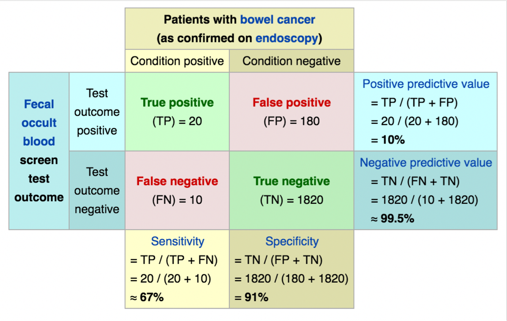
資料建模
- 機器學習簡介
- AutoML
- 深度學習簡介
- AutoKeras
- (補充資料)scikit-learn - ML with Python 常用套件
- (補充資料)keras - DL with Python 常用套件
AutoML
AutoML
- AutoML為快速建模的工具
- 市面上有許多AutoML的套件，包括
pycaret scikit-learn則是在python中執行機器學習模型訓練的重要套件
載入所需套件
載入資料
從datasets套件中，透過datasets.load_breast_cancer()讀取乳癌資料。
資料包含“data”物件與”target”物件，可分別讀取出來
cancer = datasets.load_breast_cancer()
X = pd.DataFrame(cancer["data"], columns=cancer["feature_names"])
y = pd.DataFrame(cancer["target"], columns=["target"])
print(X.head()) mean radius mean texture mean perimeter mean area mean smoothness \
0 17.99 10.38 122.80 1001.0 0.11840
1 20.57 17.77 132.90 1326.0 0.08474
2 19.69 21.25 130.00 1203.0 0.10960
3 11.42 20.38 77.58 386.1 0.14250
4 20.29 14.34 135.10 1297.0 0.10030
mean compactness mean concavity mean concave points mean symmetry \
0 0.27760 0.3001 0.14710 0.2419
1 0.07864 0.0869 0.07017 0.1812
2 0.15990 0.1974 0.12790 0.2069
3 0.28390 0.2414 0.10520 0.2597
4 0.13280 0.1980 0.10430 0.1809
mean fractal dimension ... worst radius worst texture worst perimeter \
0 0.07871 ... 25.38 17.33 184.60
1 0.05667 ... 24.99 23.41 158.80
2 0.05999 ... 23.57 25.53 152.50
3 0.09744 ... 14.91 26.50 98.87
4 0.05883 ... 22.54 16.67 152.20
worst area worst smoothness worst compactness worst concavity \
0 2019.0 0.1622 0.6656 0.7119
1 1956.0 0.1238 0.1866 0.2416
2 1709.0 0.1444 0.4245 0.4504
3 567.7 0.2098 0.8663 0.6869
4 1575.0 0.1374 0.2050 0.4000
worst concave points worst symmetry worst fractal dimension
0 0.2654 0.4601 0.11890
1 0.1860 0.2750 0.08902
2 0.2430 0.3613 0.08758
3 0.2575 0.6638 0.17300
4 0.1625 0.2364 0.07678
[5 rows x 30 columns]拆分成訓練集與測試集
- 依照設定比例將資料隨機分為訓練組與測試組
train_test_split(X,y,test_size=比例,random_state=隨機種子)
整合訓練集
使用pd.concat([X_train,y_train], axis = 1) 左右整合X_train和y_train兩個資料框，這兩個資料框內容分別為分類標籤（答案）y_train以及分類用特徵X_train。
mean radius mean texture mean perimeter mean area mean smoothness \
149 13.74 17.91 88.12 585.0 0.07944
124 13.37 16.39 86.10 553.5 0.07115
421 14.69 13.98 98.22 656.1 0.10310
195 12.91 16.33 82.53 516.4 0.07941
545 13.62 23.23 87.19 573.2 0.09246
mean compactness mean concavity mean concave points mean symmetry \
149 0.06376 0.02881 0.01329 0.1473
124 0.07325 0.08092 0.02800 0.1422
421 0.18360 0.14500 0.06300 0.2086
195 0.05366 0.03873 0.02377 0.1829
545 0.06747 0.02974 0.02443 0.1664
mean fractal dimension ... worst texture worst perimeter worst area \
149 0.05580 ... 22.46 97.19 725.9
124 0.05823 ... 22.75 91.99 632.1
421 0.07406 ... 18.34 114.10 809.2
195 0.05667 ... 22.00 90.81 600.6
545 0.05801 ... 29.09 97.58 729.8
worst smoothness worst compactness worst concavity \
149 0.09711 0.1824 0.1564
124 0.10250 0.2531 0.3308
421 0.13120 0.3635 0.3219
195 0.10970 0.1506 0.1764
545 0.12160 0.1517 0.1049
worst concave points worst symmetry worst fractal dimension target
149 0.06019 0.2350 0.07014 1
124 0.08978 0.2048 0.07628 1
421 0.11080 0.2827 0.09208 1
195 0.08235 0.3024 0.06949 1
545 0.07174 0.2642 0.06953 1
[5 rows x 31 columns]自動訓練
- 使用
setup(有標籤的訓練資料框,targe=標籤欄位名稱)設定 PyCaret AutoML環境 compare_models()選擇最好的模型，另存成模型物件best_model
| Description | Value | |
|---|---|---|
| 0 | Session id | 5255 |
| 1 | Target | target |
| 2 | Target type | Binary |
| 3 | Original data shape | (398, 31) |
| 4 | Transformed data shape | (398, 31) |
| 5 | Transformed train set shape | (278, 31) |
| 6 | Transformed test set shape | (120, 31) |
| 7 | Numeric features | 30 |
| 8 | Preprocess | True |
| 9 | Imputation type | simple |
| 10 | Numeric imputation | mean |
| 11 | Categorical imputation | mode |
| 12 | Fold Generator | StratifiedKFold |
| 13 | Fold Number | 10 |
| 14 | CPU Jobs | -1 |
| 15 | Use GPU | False |
| 16 | Log Experiment | False |
| 17 | Experiment Name | clf-default-name |
| 18 | USI | cb47 |
| Model | Accuracy | AUC | Recall | Prec. | F1 | Kappa | MCC | TT (Sec) | |
|---|---|---|---|---|---|---|---|---|---|
| lightgbm | Light Gradient Boosting Machine | 0.9463 | 0.9879 | 0.9719 | 0.9473 | 0.9585 | 0.8823 | 0.8861 | 0.2950 |
| gbc | Gradient Boosting Classifier | 0.9462 | 0.9917 | 0.9712 | 0.9484 | 0.9583 | 0.8822 | 0.8875 | 0.0940 |
| et | Extra Trees Classifier | 0.9462 | 0.9898 | 0.9654 | 0.9521 | 0.9574 | 0.8834 | 0.8877 | 0.0820 |
| ridge | Ridge Classifier | 0.9422 | 0.9857 | 0.9886 | 0.9287 | 0.9564 | 0.8710 | 0.8802 | 0.0080 |
| qda | Quadratic Discriminant Analysis | 0.9422 | 0.9865 | 0.9484 | 0.9614 | 0.9540 | 0.8759 | 0.8784 | 0.0090 |
| ada | Ada Boost Classifier | 0.9392 | 0.9826 | 0.9660 | 0.9436 | 0.9529 | 0.8668 | 0.8736 | 0.0340 |
| lr | Logistic Regression | 0.9386 | 0.9864 | 0.9598 | 0.9450 | 0.9514 | 0.8675 | 0.8707 | 0.7310 |
| lda | Linear Discriminant Analysis | 0.9352 | 0.9890 | 0.9886 | 0.9174 | 0.9508 | 0.8561 | 0.8647 | 0.0080 |
| rf | Random Forest Classifier | 0.9283 | 0.9868 | 0.9484 | 0.9431 | 0.9434 | 0.8446 | 0.8516 | 0.0560 |
| nb | Naive Bayes | 0.9280 | 0.9835 | 0.9657 | 0.9282 | 0.9449 | 0.8413 | 0.8487 | 0.0080 |
| dt | Decision Tree Classifier | 0.9280 | 0.9259 | 0.9373 | 0.9507 | 0.9422 | 0.8468 | 0.8521 | 0.0080 |
| knn | K Neighbors Classifier | 0.9030 | 0.9364 | 0.9654 | 0.8910 | 0.9254 | 0.7856 | 0.7964 | 0.0130 |
| svm | SVM - Linear Kernel | 0.8738 | 0.9325 | 0.9592 | 0.8678 | 0.9058 | 0.7153 | 0.7435 | 0.0070 |
| dummy | Dummy Classifier | 0.6259 | 0.5000 | 1.0000 | 0.6259 | 0.7698 | 0.0000 | 0.0000 | 0.0070 |
LGBMClassifier(boosting_type='gbdt', class_weight=None, colsample_bytree=1.0,
importance_type='split', learning_rate=0.1, max_depth=-1,
min_child_samples=20, min_child_weight=0.001, min_split_gain=0.0,
n_estimators=100, n_jobs=-1, num_leaves=31, objective=None,
random_state=5255, reg_alpha=0.0, reg_lambda=0.0, subsample=1.0,
subsample_for_bin=200000, subsample_freq=0)模型評估
evaluate_model(模型物件) 評估模型內容
用在測試集上（模型驗證）
predict_model(訓練出來的模型物件,data = 測試資料)將訓練好的模型best_model用在測試集X_test中，並儲存成預測結果變數y_pred_pycaretmetrics.accuracy_score(正確答案,預測答案)計算準確率，預測答案可從前一個功能的預測結果變數取出（在prediction_label欄位中）metrics來自from sklearn import metrics
測在其他資料上
鐵達尼號資料集，因為資料集中本來就有標籤，所以不用再整合。
train = pd.read_csv("https://raw.githubusercontent.com/pplonski/datasets-for-start/master/Titanic/train.csv")
test = pd.read_csv("https://raw.githubusercontent.com/pplonski/datasets-for-start/master/Titanic/test_with_Survived.csv")
print(train.head()) PassengerId Survived Pclass \
0 1 0 3
1 2 1 1
2 3 1 3
3 4 1 1
4 5 0 3
Name Sex Age SibSp \
0 Braund, Mr. Owen Harris male 22.0 1
1 Cumings, Mrs. John Bradley (Florence Briggs Th... female 38.0 1
2 Heikkinen, Miss. Laina female 26.0 0
3 Futrelle, Mrs. Jacques Heath (Lily May Peel) female 35.0 1
4 Allen, Mr. William Henry male 35.0 0
Parch Ticket Fare Cabin Embarked
0 0 A/5 21171 7.2500 NaN S
1 0 PC 17599 71.2833 C85 C
2 0 STON/O2. 3101282 7.9250 NaN S
3 0 113803 53.1000 C123 S
4 0 373450 8.0500 NaN S 自動訓練
setup(有標籤的訓練資料,targe=標籤名稱)設定 PyCaret AutoML環境。有標籤的資料為train，預測是否存活的標籤名稱為Survivedcompare_models()選擇最好的模型，並儲存成best_model模型物件。
| Description | Value | |
|---|---|---|
| 0 | Session id | 7745 |
| 1 | Target | Survived |
| 2 | Target type | Binary |
| 3 | Original data shape | (891, 12) |
| 4 | Transformed data shape | (891, 14) |
| 5 | Transformed train set shape | (623, 14) |
| 6 | Transformed test set shape | (268, 14) |
| 7 | Numeric features | 6 |
| 8 | Categorical features | 5 |
| 9 | Rows with missing values | 79.5% |
| 10 | Preprocess | True |
| 11 | Imputation type | simple |
| 12 | Numeric imputation | mean |
| 13 | Categorical imputation | mode |
| 14 | Maximum one-hot encoding | 25 |
| 15 | Encoding method | None |
| 16 | Fold Generator | StratifiedKFold |
| 17 | Fold Number | 10 |
| 18 | CPU Jobs | -1 |
| 19 | Use GPU | False |
| 20 | Log Experiment | False |
| 21 | Experiment Name | clf-default-name |
| 22 | USI | b528 |
| Model | Accuracy | AUC | Recall | Prec. | F1 | Kappa | MCC | TT (Sec) | |
|---|---|---|---|---|---|---|---|---|---|
| lr | Logistic Regression | 0.8106 | 0.8631 | 0.6737 | 0.8048 | 0.7304 | 0.5868 | 0.5944 | 0.0790 |
| ridge | Ridge Classifier | 0.7546 | 0.8600 | 0.4395 | 0.8412 | 0.5752 | 0.4278 | 0.4726 | 0.0270 |
| et | Extra Trees Classifier | 0.6919 | 0.7763 | 0.2426 | 0.8613 | 0.3740 | 0.2467 | 0.3362 | 0.0630 |
| nb | Naive Bayes | 0.6855 | 0.7999 | 0.2176 | 0.8274 | 0.3399 | 0.2241 | 0.3076 | 0.0460 |
| knn | K Neighbors Classifier | 0.6372 | 0.6451 | 0.3931 | 0.5419 | 0.4507 | 0.1916 | 0.1992 | 0.0530 |
| rf | Random Forest Classifier | 0.6324 | 0.8247 | 0.0458 | 0.4750 | 0.0824 | 0.0518 | 0.1102 | 0.0890 |
| lda | Linear Discriminant Analysis | 0.6260 | 0.5334 | 0.0348 | 0.0800 | 0.0485 | 0.0335 | 0.0389 | 0.0250 |
| svm | SVM - Linear Kernel | 0.6179 | 0.6071 | 0.2212 | 0.5436 | 0.2279 | 0.0927 | 0.1390 | 0.0260 |
| dt | Decision Tree Classifier | 0.6164 | 0.5000 | 0.0000 | 0.0000 | 0.0000 | 0.0000 | 0.0000 | 0.0270 |
| ada | Ada Boost Classifier | 0.6164 | 0.5000 | 0.0000 | 0.0000 | 0.0000 | 0.0000 | 0.0000 | 0.0260 |
| gbc | Gradient Boosting Classifier | 0.6164 | 0.5000 | 0.0000 | 0.0000 | 0.0000 | 0.0000 | 0.0000 | 0.0430 |
| lightgbm | Light Gradient Boosting Machine | 0.6164 | 0.4978 | 0.0000 | 0.0000 | 0.0000 | 0.0000 | 0.0000 | 0.1340 |
| dummy | Dummy Classifier | 0.6164 | 0.5000 | 0.0000 | 0.0000 | 0.0000 | 0.0000 | 0.0000 | 0.0270 |
| qda | Quadratic Discriminant Analysis | 0.5680 | 0.4507 | 0.2000 | 0.0758 | 0.1099 | 0.0000 | 0.0000 | 0.0300 |
LogisticRegression(C=1.0, class_weight=None, dual=False, fit_intercept=True,
intercept_scaling=1, l1_ratio=None, max_iter=1000,
multi_class='auto', n_jobs=None, penalty='l2',
random_state=7745, solver='lbfgs', tol=0.0001, verbose=0,
warm_start=False)模型評估
evaluate_model(模型物件)評估best_model模型內容
用在測試集上（模型驗證）
predict_model(訓練出來的模型,data = 測試資料)將訓練好的模型best_model用在測試集test中metrics.accuracy_score(正確答案,預測答案)計算準確率metrics來自from sklearn import metrics
y_pred_pycaret = predict_model(best_model, data = test)
print("PyCaret Testing Data Accuracy: %.5f" % metrics.accuracy_score(test['Survived'], y_pred_pycaret["prediction_label"]))| Model | Accuracy | AUC | Recall | Prec. | F1 | Kappa | MCC | |
|---|---|---|---|---|---|---|---|---|
| 0 | Logistic Regression | 0.7727 | 0.8242 | 0.6709 | 0.7114 | 0.6906 | 0.5112 | 0.5118 |
PyCaret Testing Data Accuracy: 0.77273Hands-on AutoML
import pandas as pd
stock_data = pd.read_csv("https://raw.githubusercontent.com/CGUIM-BigDataAnalysis/BigDataCGUIM/master/EMBA_BigData/Data/NVDA.csv",index_col="Date")
print(stock_data.head()) Open High Low Close Adj Close Volume
Date
2019-03-29 44.985001 45.134998 44.477501 44.889999 44.585125 45689600
2019-04-01 45.814999 45.875000 45.092499 45.570000 45.260521 48382400
2019-04-02 45.812500 46.197498 45.380001 45.750000 45.439281 44092000
2019-04-03 46.250000 47.750000 46.200001 47.154999 46.834740 78350400
2019-04-04 47.000000 47.492500 46.432499 47.064999 46.745358 45737600Hands-on AutoML 資料前處理
計算漲跌
Open High Low Close Adj Close Volume \
Date
2019-03-29 44.985001 45.134998 44.477501 44.889999 44.585125 45689600
2019-04-01 45.814999 45.875000 45.092499 45.570000 45.260521 48382400
2019-04-02 45.812500 46.197498 45.380001 45.750000 45.439281 44092000
2019-04-03 46.250000 47.750000 46.200001 47.154999 46.834740 78350400
2019-04-04 47.000000 47.492500 46.432499 47.064999 46.745358 45737600
change
Date
2019-03-29 NaN
2019-04-01 0.680001
2019-04-02 0.180000
2019-04-03 1.404999
2019-04-04 -0.090000 Hands-on AutoML 資料前處理
為了平滑化曲線，計算移動平均
def make_ma(i,j,df,price='Close'):
df_out=pd.DataFrame()
for _ in range(i,j+1):
df_out['ma_'+str(_)]=stock_data[price].rolling(_).mean()
df_out['res']=np.where(stock_data['change']>0,1,0)
return df_out
# 3日移動平均到90日移動平均
stock_ana=make_ma(3,90,stock_data)
stock_ana = stock_ana[90:]
print(stock_ana.head()) ma_3 ma_4 ma_5 ma_6 ma_7 ma_8 \
Date
2019-08-07 38.085833 38.638750 39.157000 39.660834 40.261071 40.691563
2019-08-08 38.708334 38.455625 38.824000 39.225000 39.647143 40.174062
2019-08-09 38.860832 38.667500 38.473499 38.777500 39.127857 39.509375
2019-08-12 38.657499 38.611249 38.506500 38.371666 38.646785 38.969687
2019-08-13 38.473333 38.746249 38.691499 38.590833 38.463214 38.692500
ma_9 ma_10 ma_11 ma_12 ... ma_82 \
Date ...
2019-08-07 41.033334 41.264501 41.573637 41.768751 ... 40.899024
2019-08-08 40.566389 40.886500 41.110000 41.406250 ... 40.797561
2019-08-09 39.993055 40.364250 40.673636 40.896250 ... 40.688323
2019-08-12 39.326389 39.780000 40.136818 40.439375 ... 40.586951
2019-08-13 38.974444 39.295000 39.710227 40.043125 ... 40.488902
ma_83 ma_84 ma_85 ma_86 ma_87 ma_88 \
Date
2019-08-07 40.984880 41.060238 41.141265 41.217965 41.285172 41.351875
2019-08-08 40.882952 40.967976 41.042647 41.122936 41.198966 41.265625
2019-08-09 40.770422 40.855119 40.939471 41.013605 41.093305 41.168807
2019-08-12 40.654277 40.735804 40.819912 40.903692 40.977385 41.056591
2019-08-13 40.567982 40.634732 40.715529 40.798895 40.881954 40.955057
ma_89 ma_90 res
Date
2019-08-07 41.401292 41.447611 1
2019-08-08 41.331798 41.380889 1
2019-08-09 41.235056 41.300833 0
2019-08-12 41.131657 41.197583 0
2019-08-13 41.033624 41.108111 1
[5 rows x 89 columns]Hands-on AutoML 切訓練集與測試集
train_test_split(X,y,test_size=比例,random_state=隨機種子)
features = stock_ana.columns[:-1]
X_train,X_test,y_train,y_test = train_test_split(stock_ana[features], stock_ana['res'], test_size=0.3)
print(X_train.size)
print(X_test.size)
print(y_train.describe())71984
30888
count 818.000000
mean 0.546455
std 0.498142
min 0.000000
25% 0.000000
50% 1.000000
75% 1.000000
max 1.000000
Name: res, dtype: float64Hands-on AutoML 訓練資料整合
ma_3 ma_4 ma_5 ma_6 ma_7 \
Date
2020-01-09 60.277500 60.024375 59.823000 59.848750 59.702500
2021-03-30 128.864166 127.986250 127.675000 128.180417 128.706430
2021-04-14 153.884999 151.413749 149.764999 148.376666 146.982143
2023-04-28 273.103333 270.430001 270.428003 270.555003 270.624289
2022-06-02 188.613332 188.487499 186.491998 183.701665 180.535712
ma_8 ma_9 ma_10 ma_11 ma_12 ... \
Date ...
2020-01-09 59.499688 59.468334 59.501251 59.515228 59.531042 ...
2021-03-30 128.675314 128.514168 129.004002 129.359320 129.572086 ...
2021-04-14 146.093750 145.207499 144.034999 142.642499 141.545832 ...
2023-04-28 271.710003 272.261115 272.037003 271.631819 271.048335 ...
2022-06-02 179.091248 177.741109 177.090999 176.389999 176.838333 ...
ma_82 ma_83 ma_84 ma_85 ma_86 \
Date
2020-01-09 51.443598 51.378825 51.315774 51.250824 51.179593
2021-03-30 133.839513 133.841627 133.826995 133.809589 133.760379
2021-04-14 135.176647 135.151476 135.091727 135.028559 134.962035
2023-04-28 228.316829 227.325421 226.290118 225.289176 224.437674
2022-06-02 221.516829 221.733253 222.098571 222.384235 222.645581
ma_87 ma_88 ma_89 ma_90 res
Date
2020-01-09 51.104684 51.034574 50.935197 50.825278 1
2021-03-30 133.733248 133.700796 133.708680 133.715112 0
2021-04-14 134.945230 134.957983 134.965001 134.953834 0
2023-04-28 223.621034 222.954999 222.257190 221.593666 1
2022-06-02 222.711724 222.674545 222.731236 222.736889 1
[5 rows x 89 columns]Hands-on AutoML 開始建模
其他的就交給你們自己嘗試了….步驟：
- setup(有標籤的訓練資料,targe=標籤名稱) 設定 PyCaret AutoML環境
- compare_models() 選擇最好的模型
- evaluate_model(模型物件) 評估模型內容
- predict_model(訓練出來的模型,data = 測試資料) 將訓練好的模型用在測試集中
- metrics.accuracy_score(正確答案,預測答案)計算準確率
資料建模
- 機器學習簡介
- AutoML
- 深度學習簡介
- AutoKeras
- (補充資料) scikit-learn - ML with Python 常用套件
- (補充資料) keras - DL with Python 常用套件
Deep Learning 深度學習
Deep Learning 深度學習
以神經網路為基礎，發展出適合不同資料的架構
- 前饋式多層感知機 multiple layer perceptron (MLP)
- 卷積神經網路 convolutional neural network (CNN)
- 遞迴神經網路 recurrent neural networks (RNN)
- Transformer
Artificial Neural Networks 類神經網路
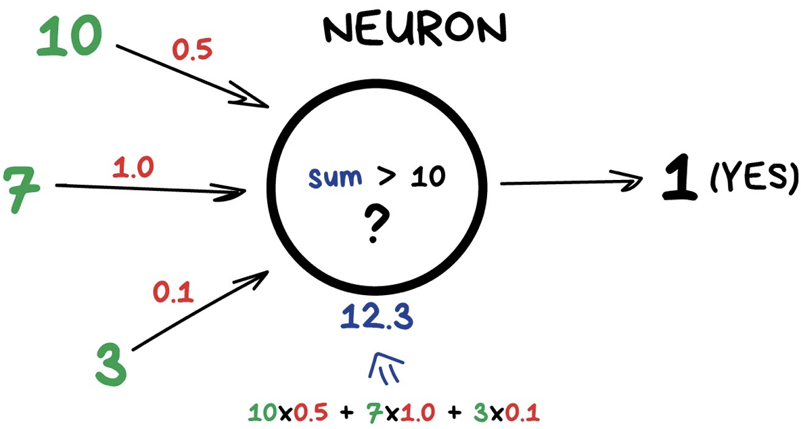
卷積神經網路 CNN - 卷積層
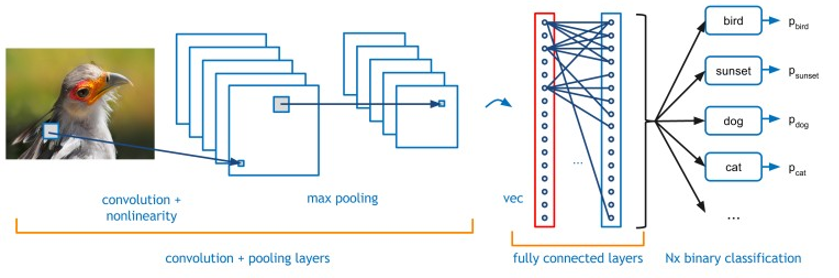
Source卷積神經網路 CNN - 卷積層
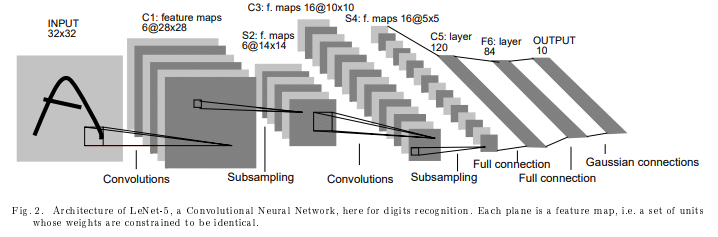
SourcePooling池化層
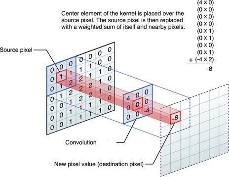
SourcePooling池化層
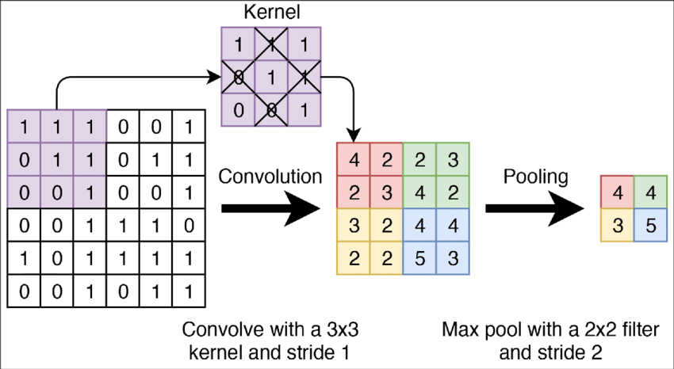
SourceExample code with keras
- From keras
- Load packages
資料前處理
- 使用
keras內建MNIST資料，keras.datasets.mnist.load_data() - 總共有10個分類
- 資料維度(28, 28, 1)
- 區分訓練集與測試集
資料前處理
像素標準化 Scale images to the [0, 1] range，直接除255
print(x_train)
x_train = x_train.astype("float32") / 255
x_test = x_test.astype("float32") / 255
print(x_train)[[[0 0 0 ... 0 0 0]
[0 0 0 ... 0 0 0]
[0 0 0 ... 0 0 0]
...
[0 0 0 ... 0 0 0]
[0 0 0 ... 0 0 0]
[0 0 0 ... 0 0 0]]
[[0 0 0 ... 0 0 0]
[0 0 0 ... 0 0 0]
[0 0 0 ... 0 0 0]
...
[0 0 0 ... 0 0 0]
[0 0 0 ... 0 0 0]
[0 0 0 ... 0 0 0]]
[[0 0 0 ... 0 0 0]
[0 0 0 ... 0 0 0]
[0 0 0 ... 0 0 0]
...
[0 0 0 ... 0 0 0]
[0 0 0 ... 0 0 0]
[0 0 0 ... 0 0 0]]
...
[[0 0 0 ... 0 0 0]
[0 0 0 ... 0 0 0]
[0 0 0 ... 0 0 0]
...
[0 0 0 ... 0 0 0]
[0 0 0 ... 0 0 0]
[0 0 0 ... 0 0 0]]
[[0 0 0 ... 0 0 0]
[0 0 0 ... 0 0 0]
[0 0 0 ... 0 0 0]
...
[0 0 0 ... 0 0 0]
[0 0 0 ... 0 0 0]
[0 0 0 ... 0 0 0]]
[[0 0 0 ... 0 0 0]
[0 0 0 ... 0 0 0]
[0 0 0 ... 0 0 0]
...
[0 0 0 ... 0 0 0]
[0 0 0 ... 0 0 0]
[0 0 0 ... 0 0 0]]]
[[[0. 0. 0. ... 0. 0. 0.]
[0. 0. 0. ... 0. 0. 0.]
[0. 0. 0. ... 0. 0. 0.]
...
[0. 0. 0. ... 0. 0. 0.]
[0. 0. 0. ... 0. 0. 0.]
[0. 0. 0. ... 0. 0. 0.]]
[[0. 0. 0. ... 0. 0. 0.]
[0. 0. 0. ... 0. 0. 0.]
[0. 0. 0. ... 0. 0. 0.]
...
[0. 0. 0. ... 0. 0. 0.]
[0. 0. 0. ... 0. 0. 0.]
[0. 0. 0. ... 0. 0. 0.]]
[[0. 0. 0. ... 0. 0. 0.]
[0. 0. 0. ... 0. 0. 0.]
[0. 0. 0. ... 0. 0. 0.]
...
[0. 0. 0. ... 0. 0. 0.]
[0. 0. 0. ... 0. 0. 0.]
[0. 0. 0. ... 0. 0. 0.]]
...
[[0. 0. 0. ... 0. 0. 0.]
[0. 0. 0. ... 0. 0. 0.]
[0. 0. 0. ... 0. 0. 0.]
...
[0. 0. 0. ... 0. 0. 0.]
[0. 0. 0. ... 0. 0. 0.]
[0. 0. 0. ... 0. 0. 0.]]
[[0. 0. 0. ... 0. 0. 0.]
[0. 0. 0. ... 0. 0. 0.]
[0. 0. 0. ... 0. 0. 0.]
...
[0. 0. 0. ... 0. 0. 0.]
[0. 0. 0. ... 0. 0. 0.]
[0. 0. 0. ... 0. 0. 0.]]
[[0. 0. 0. ... 0. 0. 0.]
[0. 0. 0. ... 0. 0. 0.]
[0. 0. 0. ... 0. 0. 0.]
...
[0. 0. 0. ... 0. 0. 0.]
[0. 0. 0. ... 0. 0. 0.]
[0. 0. 0. ... 0. 0. 0.]]]資料前處理
增加維度，以符合CNN模型需要輸入通道數量的規範
[[[[0.]
[0.]
[0.]
...
[0.]
[0.]
[0.]]
[[0.]
[0.]
[0.]
...
[0.]
[0.]
[0.]]
[[0.]
[0.]
[0.]
...
[0.]
[0.]
[0.]]
...
[[0.]
[0.]
[0.]
...
[0.]
[0.]
[0.]]
[[0.]
[0.]
[0.]
...
[0.]
[0.]
[0.]]
[[0.]
[0.]
[0.]
...
[0.]
[0.]
[0.]]]
[[[0.]
[0.]
[0.]
...
[0.]
[0.]
[0.]]
[[0.]
[0.]
[0.]
...
[0.]
[0.]
[0.]]
[[0.]
[0.]
[0.]
...
[0.]
[0.]
[0.]]
...
[[0.]
[0.]
[0.]
...
[0.]
[0.]
[0.]]
[[0.]
[0.]
[0.]
...
[0.]
[0.]
[0.]]
[[0.]
[0.]
[0.]
...
[0.]
[0.]
[0.]]]
[[[0.]
[0.]
[0.]
...
[0.]
[0.]
[0.]]
[[0.]
[0.]
[0.]
...
[0.]
[0.]
[0.]]
[[0.]
[0.]
[0.]
...
[0.]
[0.]
[0.]]
...
[[0.]
[0.]
[0.]
...
[0.]
[0.]
[0.]]
[[0.]
[0.]
[0.]
...
[0.]
[0.]
[0.]]
[[0.]
[0.]
[0.]
...
[0.]
[0.]
[0.]]]
...
[[[0.]
[0.]
[0.]
...
[0.]
[0.]
[0.]]
[[0.]
[0.]
[0.]
...
[0.]
[0.]
[0.]]
[[0.]
[0.]
[0.]
...
[0.]
[0.]
[0.]]
...
[[0.]
[0.]
[0.]
...
[0.]
[0.]
[0.]]
[[0.]
[0.]
[0.]
...
[0.]
[0.]
[0.]]
[[0.]
[0.]
[0.]
...
[0.]
[0.]
[0.]]]
[[[0.]
[0.]
[0.]
...
[0.]
[0.]
[0.]]
[[0.]
[0.]
[0.]
...
[0.]
[0.]
[0.]]
[[0.]
[0.]
[0.]
...
[0.]
[0.]
[0.]]
...
[[0.]
[0.]
[0.]
...
[0.]
[0.]
[0.]]
[[0.]
[0.]
[0.]
...
[0.]
[0.]
[0.]]
[[0.]
[0.]
[0.]
...
[0.]
[0.]
[0.]]]
[[[0.]
[0.]
[0.]
...
[0.]
[0.]
[0.]]
[[0.]
[0.]
[0.]
...
[0.]
[0.]
[0.]]
[[0.]
[0.]
[0.]
...
[0.]
[0.]
[0.]]
...
[[0.]
[0.]
[0.]
...
[0.]
[0.]
[0.]]
[[0.]
[0.]
[0.]
...
[0.]
[0.]
[0.]]
[[0.]
[0.]
[0.]
...
[0.]
[0.]
[0.]]]]資料前處理
確認資料筆數與維度
看一下資料（視覺化）
import matplotlib.pyplot as plt
n = 5
fig, axs = plt.subplots(nrows=n, ncols=n, sharex=True, sharey=True, figsize=(12, 12))
for i in range(n**2):
ax = axs[i // n, i % n]
(-x_train[i]+1)/2
ax.imshow((-x_train[i, :, :, 0] + 1)/2, cmap=plt.cm.gray)
ax.axis('off')
plt.tight_layout()
plt.show()
y_test = keras.utils.to_categorical(y_test, num_classes)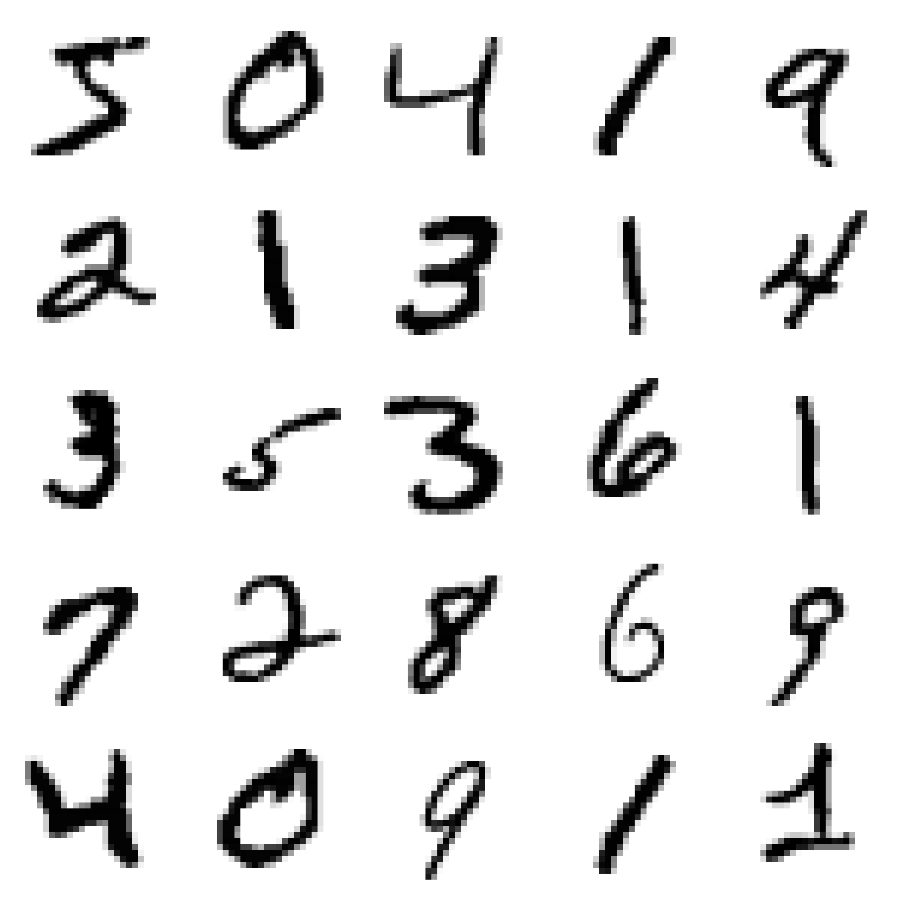
看一下資料（視覺化）

資料類別轉換
將0~9透過keras.utils.to_categorical(資料標籤,幾種預測結果)轉換為二維的分類答案
print(y_test)
y_train = keras.utils.to_categorical(y_train, num_classes)
y_test = keras.utils.to_categorical(y_test, num_classes)
print(y_test)[[0. 0. 0. ... 1. 0. 0.]
[0. 0. 1. ... 0. 0. 0.]
[0. 1. 0. ... 0. 0. 0.]
...
[0. 0. 0. ... 0. 0. 0.]
[0. 0. 0. ... 0. 0. 0.]
[0. 0. 0. ... 0. 0. 0.]]
[[[1. 0. 0. ... 0. 0. 0.]
[1. 0. 0. ... 0. 0. 0.]
[1. 0. 0. ... 0. 0. 0.]
...
[0. 1. 0. ... 0. 0. 0.]
[1. 0. 0. ... 0. 0. 0.]
[1. 0. 0. ... 0. 0. 0.]]
[[1. 0. 0. ... 0. 0. 0.]
[1. 0. 0. ... 0. 0. 0.]
[0. 1. 0. ... 0. 0. 0.]
...
[1. 0. 0. ... 0. 0. 0.]
[1. 0. 0. ... 0. 0. 0.]
[1. 0. 0. ... 0. 0. 0.]]
[[1. 0. 0. ... 0. 0. 0.]
[0. 1. 0. ... 0. 0. 0.]
[1. 0. 0. ... 0. 0. 0.]
...
[1. 0. 0. ... 0. 0. 0.]
[1. 0. 0. ... 0. 0. 0.]
[1. 0. 0. ... 0. 0. 0.]]
...
[[1. 0. 0. ... 0. 0. 0.]
[1. 0. 0. ... 0. 0. 0.]
[1. 0. 0. ... 0. 0. 0.]
...
[1. 0. 0. ... 0. 0. 0.]
[1. 0. 0. ... 0. 0. 0.]
[1. 0. 0. ... 0. 0. 0.]]
[[1. 0. 0. ... 0. 0. 0.]
[1. 0. 0. ... 0. 0. 0.]
[1. 0. 0. ... 0. 0. 0.]
...
[1. 0. 0. ... 0. 0. 0.]
[1. 0. 0. ... 0. 0. 0.]
[1. 0. 0. ... 0. 0. 0.]]
[[1. 0. 0. ... 0. 0. 0.]
[1. 0. 0. ... 0. 0. 0.]
[1. 0. 0. ... 0. 0. 0.]
...
[1. 0. 0. ... 0. 0. 0.]
[1. 0. 0. ... 0. 0. 0.]
[1. 0. 0. ... 0. 0. 0.]]]模型架構設計
一層卷積層layers.Conv2D，一層池化層layers.MaxPooling2D，再一層卷積層layers.Conv2D，再一層池化層layers.MaxPooling2D，最後全連接層layers.Flatten，以及layers.Dropout。存成model變數
model = keras.Sequential(
[
keras.Input(shape=input_shape), ## 28,28,1
layers.Conv2D(32, kernel_size=(3, 3), activation="relu"),
layers.MaxPooling2D(pool_size=(2, 2)),
layers.Conv2D(64, kernel_size=(3, 3), activation="relu"),
layers.MaxPooling2D(pool_size=(2, 2)),
layers.Flatten(), #5x5x64
layers.Dropout(0.5),
layers.Dense(num_classes, activation="softmax"),
]
)模型架構設計
Model: "sequential"
┏━━━━━━━━━━━━━━━━━━━━━━━━━━━━━━━━━┳━━━━━━━━━━━━━━━━━━━━━━━━┳━━━━━━━━━━━━━━━┓ ┃ Layer (type) ┃ Output Shape ┃ Param # ┃ ┡━━━━━━━━━━━━━━━━━━━━━━━━━━━━━━━━━╇━━━━━━━━━━━━━━━━━━━━━━━━╇━━━━━━━━━━━━━━━┩ │ conv2d (Conv2D) │ (None, 26, 26, 32) │ 320 │ ├─────────────────────────────────┼────────────────────────┼───────────────┤ │ max_pooling2d (MaxPooling2D) │ (None, 13, 13, 32) │ 0 │ ├─────────────────────────────────┼────────────────────────┼───────────────┤ │ conv2d_1 (Conv2D) │ (None, 11, 11, 64) │ 18,496 │ ├─────────────────────────────────┼────────────────────────┼───────────────┤ │ max_pooling2d_1 (MaxPooling2D) │ (None, 5, 5, 64) │ 0 │ ├─────────────────────────────────┼────────────────────────┼───────────────┤ │ flatten (Flatten) │ (None, 1600) │ 0 │ ├─────────────────────────────────┼────────────────────────┼───────────────┤ │ dropout (Dropout) │ (None, 1600) │ 0 │ ├─────────────────────────────────┼────────────────────────┼───────────────┤ │ dense (Dense) │ (None, 10) │ 16,010 │ └─────────────────────────────────┴────────────────────────┴───────────────┘
Total params: 34,826 (136.04 KB)
Trainable params: 34,826 (136.04 KB)
Non-trainable params: 0 (0.00 B)
模型訓練
batch_size設定每一批次訓練的資料筆數，epochs設定要訓練幾輪，最後使用剛剛設計好的模型架構model，執行model.compile以及model.fit
batch_size = 128
epochs = 5
model.compile(loss="categorical_crossentropy", optimizer="adam", metrics=["accuracy"])
model.fit(x_train, y_train, batch_size=batch_size, epochs=epochs, validation_split=0.1)Epoch 1/5
1/422 ━━━━━━━━━━━━━━━━━━━━ 8:30 1s/step - accuracy: 0.0859 - loss: 2.3175 3/422 ━━━━━━━━━━━━━━━━━━━━ 12s 29ms/step - accuracy: 0.1115 - loss: 2.3068 5/422 ━━━━━━━━━━━━━━━━━━━━ 11s 28ms/step - accuracy: 0.1345 - loss: 2.2954 7/422 ━━━━━━━━━━━━━━━━━━━━ 11s 27ms/step - accuracy: 0.1559 - loss: 2.2847 9/422 ━━━━━━━━━━━━━━━━━━━━ 11s 28ms/step - accuracy: 0.1768 - loss: 2.2731 11/422 ━━━━━━━━━━━━━━━━━━━━ 11s 27ms/step - accuracy: 0.1955 - loss: 2.2612 13/422 ━━━━━━━━━━━━━━━━━━━━ 11s 27ms/step - accuracy: 0.2092 - loss: 2.2495 16/422 ━━━━━━━━━━━━━━━━━━━━ 10s 27ms/step - accuracy: 0.2304 - loss: 2.2291 18/422 ━━━━━━━━━━━━━━━━━━━━ 10s 27ms/step - accuracy: 0.2443 - loss: 2.2144 21/422 ━━━━━━━━━━━━━━━━━━━━ 10s 26ms/step - accuracy: 0.2642 - loss: 2.1898 24/422 ━━━━━━━━━━━━━━━━━━━━ 10s 26ms/step - accuracy: 0.2827 - loss: 2.1627 26/422 ━━━━━━━━━━━━━━━━━━━━ 10s 26ms/step - accuracy: 0.2944 - loss: 2.1434 29/422 ━━━━━━━━━━━━━━━━━━━━ 10s 26ms/step - accuracy: 0.3111 - loss: 2.1128 31/422 ━━━━━━━━━━━━━━━━━━━━ 10s 26ms/step - accuracy: 0.3218 - loss: 2.0915 33/422 ━━━━━━━━━━━━━━━━━━━━ 10s 26ms/step - accuracy: 0.3320 - loss: 2.0698 36/422 ━━━━━━━━━━━━━━━━━━━━ 9s 26ms/step - accuracy: 0.3467 - loss: 2.0365 38/422 ━━━━━━━━━━━━━━━━━━━━ 9s 26ms/step - accuracy: 0.3561 - loss: 2.0139 40/422 ━━━━━━━━━━━━━━━━━━━━ 9s 26ms/step - accuracy: 0.3650 - loss: 1.9918 42/422 ━━━━━━━━━━━━━━━━━━━━ 9s 26ms/step - accuracy: 0.3736 - loss: 1.9697 44/422 ━━━━━━━━━━━━━━━━━━━━ 9s 26ms/step - accuracy: 0.3819 - loss: 1.9479 46/422 ━━━━━━━━━━━━━━━━━━━━ 9s 26ms/step - accuracy: 0.3898 - loss: 1.9266 48/422 ━━━━━━━━━━━━━━━━━━━━ 9s 26ms/step - accuracy: 0.3974 - loss: 1.9057 50/422 ━━━━━━━━━━━━━━━━━━━━ 9s 26ms/step - accuracy: 0.4048 - loss: 1.8853 52/422 ━━━━━━━━━━━━━━━━━━━━ 9s 26ms/step - accuracy: 0.4119 - loss: 1.8652 55/422 ━━━━━━━━━━━━━━━━━━━━ 9s 26ms/step - accuracy: 0.4222 - loss: 1.8360 58/422 ━━━━━━━━━━━━━━━━━━━━ 9s 26ms/step - accuracy: 0.4320 - loss: 1.8076 60/422 ━━━━━━━━━━━━━━━━━━━━ 9s 26ms/step - accuracy: 0.4383 - loss: 1.7892 62/422 ━━━━━━━━━━━━━━━━━━━━ 9s 26ms/step - accuracy: 0.4445 - loss: 1.7711 64/422 ━━━━━━━━━━━━━━━━━━━━ 9s 26ms/step - accuracy: 0.4505 - loss: 1.7533 66/422 ━━━━━━━━━━━━━━━━━━━━ 9s 26ms/step - accuracy: 0.4563 - loss: 1.7359 68/422 ━━━━━━━━━━━━━━━━━━━━ 9s 26ms/step - accuracy: 0.4620 - loss: 1.7189 70/422 ━━━━━━━━━━━━━━━━━━━━ 9s 27ms/step - accuracy: 0.4676 - loss: 1.7024 72/422 ━━━━━━━━━━━━━━━━━━━━ 9s 27ms/step - accuracy: 0.4729 - loss: 1.6862 74/422 ━━━━━━━━━━━━━━━━━━━━ 9s 27ms/step - accuracy: 0.4782 - loss: 1.6704 76/422 ━━━━━━━━━━━━━━━━━━━━ 9s 27ms/step - accuracy: 0.4833 - loss: 1.6550 77/422 ━━━━━━━━━━━━━━━━━━━━ 9s 27ms/step - accuracy: 0.4858 - loss: 1.6474 78/422 ━━━━━━━━━━━━━━━━━━━━ 9s 28ms/step - accuracy: 0.4883 - loss: 1.6399 80/422 ━━━━━━━━━━━━━━━━━━━━ 9s 28ms/step - accuracy: 0.4931 - loss: 1.6251 82/422 ━━━━━━━━━━━━━━━━━━━━ 9s 28ms/step - accuracy: 0.4979 - loss: 1.6107 84/422 ━━━━━━━━━━━━━━━━━━━━ 9s 28ms/step - accuracy: 0.5025 - loss: 1.5966 86/422 ━━━━━━━━━━━━━━━━━━━━ 9s 29ms/step - accuracy: 0.5070 - loss: 1.5827 88/422 ━━━━━━━━━━━━━━━━━━━━ 9s 29ms/step - accuracy: 0.5114 - loss: 1.5692 90/422 ━━━━━━━━━━━━━━━━━━━━ 9s 29ms/step - accuracy: 0.5157 - loss: 1.5560 92/422 ━━━━━━━━━━━━━━━━━━━━ 9s 29ms/step - accuracy: 0.5199 - loss: 1.5430 94/422 ━━━━━━━━━━━━━━━━━━━━ 9s 29ms/step - accuracy: 0.5240 - loss: 1.5303 96/422 ━━━━━━━━━━━━━━━━━━━━ 9s 29ms/step - accuracy: 0.5281 - loss: 1.5179 98/422 ━━━━━━━━━━━━━━━━━━━━ 9s 29ms/step - accuracy: 0.5320 - loss: 1.5058100/422 ━━━━━━━━━━━━━━━━━━━━ 9s 29ms/step - accuracy: 0.5359 - loss: 1.4938102/422 ━━━━━━━━━━━━━━━━━━━━ 9s 29ms/step - accuracy: 0.5396 - loss: 1.4821103/422 ━━━━━━━━━━━━━━━━━━━━ 9s 29ms/step - accuracy: 0.5415 - loss: 1.4763104/422 ━━━━━━━━━━━━━━━━━━━━ 9s 30ms/step - accuracy: 0.5433 - loss: 1.4706105/422 ━━━━━━━━━━━━━━━━━━━━ 9s 30ms/step - accuracy: 0.5452 - loss: 1.4649106/422 ━━━━━━━━━━━━━━━━━━━━ 9s 30ms/step - accuracy: 0.5470 - loss: 1.4593108/422 ━━━━━━━━━━━━━━━━━━━━ 9s 30ms/step - accuracy: 0.5505 - loss: 1.4482110/422 ━━━━━━━━━━━━━━━━━━━━ 9s 30ms/step - accuracy: 0.5540 - loss: 1.4374112/422 ━━━━━━━━━━━━━━━━━━━━ 9s 31ms/step - accuracy: 0.5574 - loss: 1.4267113/422 ━━━━━━━━━━━━━━━━━━━━ 9s 32ms/step - accuracy: 0.5591 - loss: 1.4215115/422 ━━━━━━━━━━━━━━━━━━━━ 9s 32ms/step - accuracy: 0.5624 - loss: 1.4112117/422 ━━━━━━━━━━━━━━━━━━━━ 9s 32ms/step - accuracy: 0.5656 - loss: 1.4010119/422 ━━━━━━━━━━━━━━━━━━━━ 9s 32ms/step - accuracy: 0.5687 - loss: 1.3911121/422 ━━━━━━━━━━━━━━━━━━━━ 9s 32ms/step - accuracy: 0.5718 - loss: 1.3814123/422 ━━━━━━━━━━━━━━━━━━━━ 9s 32ms/step - accuracy: 0.5749 - loss: 1.3719125/422 ━━━━━━━━━━━━━━━━━━━━ 9s 32ms/step - accuracy: 0.5778 - loss: 1.3625127/422 ━━━━━━━━━━━━━━━━━━━━ 9s 32ms/step - accuracy: 0.5808 - loss: 1.3533129/422 ━━━━━━━━━━━━━━━━━━━━ 9s 32ms/step - accuracy: 0.5836 - loss: 1.3443131/422 ━━━━━━━━━━━━━━━━━━━━ 9s 32ms/step - accuracy: 0.5865 - loss: 1.3354133/422 ━━━━━━━━━━━━━━━━━━━━ 9s 32ms/step - accuracy: 0.5892 - loss: 1.3267135/422 ━━━━━━━━━━━━━━━━━━━━ 9s 32ms/step - accuracy: 0.5920 - loss: 1.3181137/422 ━━━━━━━━━━━━━━━━━━━━ 9s 32ms/step - accuracy: 0.5946 - loss: 1.3096139/422 ━━━━━━━━━━━━━━━━━━━━ 8s 32ms/step - accuracy: 0.5972 - loss: 1.3013141/422 ━━━━━━━━━━━━━━━━━━━━ 8s 32ms/step - accuracy: 0.5998 - loss: 1.2932143/422 ━━━━━━━━━━━━━━━━━━━━ 8s 32ms/step - accuracy: 0.6024 - loss: 1.2852145/422 ━━━━━━━━━━━━━━━━━━━━ 8s 31ms/step - accuracy: 0.6048 - loss: 1.2773147/422 ━━━━━━━━━━━━━━━━━━━━ 8s 31ms/step - accuracy: 0.6073 - loss: 1.2696149/422 ━━━━━━━━━━━━━━━━━━━━ 8s 31ms/step - accuracy: 0.6097 - loss: 1.2620151/422 ━━━━━━━━━━━━━━━━━━━━ 8s 31ms/step - accuracy: 0.6121 - loss: 1.2545153/422 ━━━━━━━━━━━━━━━━━━━━ 8s 31ms/step - accuracy: 0.6144 - loss: 1.2471155/422 ━━━━━━━━━━━━━━━━━━━━ 8s 31ms/step - accuracy: 0.6167 - loss: 1.2399157/422 ━━━━━━━━━━━━━━━━━━━━ 8s 31ms/step - accuracy: 0.6189 - loss: 1.2328159/422 ━━━━━━━━━━━━━━━━━━━━ 8s 31ms/step - accuracy: 0.6211 - loss: 1.2257161/422 ━━━━━━━━━━━━━━━━━━━━ 8s 31ms/step - accuracy: 0.6233 - loss: 1.2188163/422 ━━━━━━━━━━━━━━━━━━━━ 8s 31ms/step - accuracy: 0.6254 - loss: 1.2121165/422 ━━━━━━━━━━━━━━━━━━━━ 7s 31ms/step - accuracy: 0.6275 - loss: 1.2054167/422 ━━━━━━━━━━━━━━━━━━━━ 7s 31ms/step - accuracy: 0.6296 - loss: 1.1988169/422 ━━━━━━━━━━━━━━━━━━━━ 7s 31ms/step - accuracy: 0.6316 - loss: 1.1923171/422 ━━━━━━━━━━━━━━━━━━━━ 7s 31ms/step - accuracy: 0.6336 - loss: 1.1860173/422 ━━━━━━━━━━━━━━━━━━━━ 7s 31ms/step - accuracy: 0.6356 - loss: 1.1797175/422 ━━━━━━━━━━━━━━━━━━━━ 7s 31ms/step - accuracy: 0.6376 - loss: 1.1735177/422 ━━━━━━━━━━━━━━━━━━━━ 7s 31ms/step - accuracy: 0.6395 - loss: 1.1673179/422 ━━━━━━━━━━━━━━━━━━━━ 7s 31ms/step - accuracy: 0.6414 - loss: 1.1613181/422 ━━━━━━━━━━━━━━━━━━━━ 7s 31ms/step - accuracy: 0.6433 - loss: 1.1554183/422 ━━━━━━━━━━━━━━━━━━━━ 7s 31ms/step - accuracy: 0.6451 - loss: 1.1495185/422 ━━━━━━━━━━━━━━━━━━━━ 7s 31ms/step - accuracy: 0.6469 - loss: 1.1437187/422 ━━━━━━━━━━━━━━━━━━━━ 7s 31ms/step - accuracy: 0.6487 - loss: 1.1380189/422 ━━━━━━━━━━━━━━━━━━━━ 7s 31ms/step - accuracy: 0.6505 - loss: 1.1324191/422 ━━━━━━━━━━━━━━━━━━━━ 7s 31ms/step - accuracy: 0.6523 - loss: 1.1268193/422 ━━━━━━━━━━━━━━━━━━━━ 7s 31ms/step - accuracy: 0.6540 - loss: 1.1214195/422 ━━━━━━━━━━━━━━━━━━━━ 6s 31ms/step - accuracy: 0.6557 - loss: 1.1159197/422 ━━━━━━━━━━━━━━━━━━━━ 6s 31ms/step - accuracy: 0.6574 - loss: 1.1106199/422 ━━━━━━━━━━━━━━━━━━━━ 6s 31ms/step - accuracy: 0.6590 - loss: 1.1053201/422 ━━━━━━━━━━━━━━━━━━━━ 6s 31ms/step - accuracy: 0.6607 - loss: 1.1001203/422 ━━━━━━━━━━━━━━━━━━━━ 6s 31ms/step - accuracy: 0.6623 - loss: 1.0950205/422 ━━━━━━━━━━━━━━━━━━━━ 6s 30ms/step - accuracy: 0.6639 - loss: 1.0899207/422 ━━━━━━━━━━━━━━━━━━━━ 6s 30ms/step - accuracy: 0.6654 - loss: 1.0849209/422 ━━━━━━━━━━━━━━━━━━━━ 6s 30ms/step - accuracy: 0.6670 - loss: 1.0800211/422 ━━━━━━━━━━━━━━━━━━━━ 6s 30ms/step - accuracy: 0.6685 - loss: 1.0751213/422 ━━━━━━━━━━━━━━━━━━━━ 6s 30ms/step - accuracy: 0.6700 - loss: 1.0703215/422 ━━━━━━━━━━━━━━━━━━━━ 6s 31ms/step - accuracy: 0.6715 - loss: 1.0655217/422 ━━━━━━━━━━━━━━━━━━━━ 6s 31ms/step - accuracy: 0.6730 - loss: 1.0609219/422 ━━━━━━━━━━━━━━━━━━━━ 6s 31ms/step - accuracy: 0.6745 - loss: 1.0562221/422 ━━━━━━━━━━━━━━━━━━━━ 6s 31ms/step - accuracy: 0.6759 - loss: 1.0516223/422 ━━━━━━━━━━━━━━━━━━━━ 6s 31ms/step - accuracy: 0.6773 - loss: 1.0471225/422 ━━━━━━━━━━━━━━━━━━━━ 6s 30ms/step - accuracy: 0.6788 - loss: 1.0426227/422 ━━━━━━━━━━━━━━━━━━━━ 5s 30ms/step - accuracy: 0.6801 - loss: 1.0382229/422 ━━━━━━━━━━━━━━━━━━━━ 5s 31ms/step - accuracy: 0.6815 - loss: 1.0338231/422 ━━━━━━━━━━━━━━━━━━━━ 5s 30ms/step - accuracy: 0.6829 - loss: 1.0295233/422 ━━━━━━━━━━━━━━━━━━━━ 5s 31ms/step - accuracy: 0.6842 - loss: 1.0252235/422 ━━━━━━━━━━━━━━━━━━━━ 5s 31ms/step - accuracy: 0.6856 - loss: 1.0210237/422 ━━━━━━━━━━━━━━━━━━━━ 5s 31ms/step - accuracy: 0.6869 - loss: 1.0168239/422 ━━━━━━━━━━━━━━━━━━━━ 5s 31ms/step - accuracy: 0.6882 - loss: 1.0126241/422 ━━━━━━━━━━━━━━━━━━━━ 5s 31ms/step - accuracy: 0.6895 - loss: 1.0085243/422 ━━━━━━━━━━━━━━━━━━━━ 5s 31ms/step - accuracy: 0.6907 - loss: 1.0045245/422 ━━━━━━━━━━━━━━━━━━━━ 5s 31ms/step - accuracy: 0.6920 - loss: 1.0005247/422 ━━━━━━━━━━━━━━━━━━━━ 5s 31ms/step - accuracy: 0.6932 - loss: 0.9965249/422 ━━━━━━━━━━━━━━━━━━━━ 5s 31ms/step - accuracy: 0.6945 - loss: 0.9926251/422 ━━━━━━━━━━━━━━━━━━━━ 5s 31ms/step - accuracy: 0.6957 - loss: 0.9887253/422 ━━━━━━━━━━━━━━━━━━━━ 5s 31ms/step - accuracy: 0.6969 - loss: 0.9848255/422 ━━━━━━━━━━━━━━━━━━━━ 5s 31ms/step - accuracy: 0.6981 - loss: 0.9810257/422 ━━━━━━━━━━━━━━━━━━━━ 5s 31ms/step - accuracy: 0.6992 - loss: 0.9773259/422 ━━━━━━━━━━━━━━━━━━━━ 4s 31ms/step - accuracy: 0.7004 - loss: 0.9736261/422 ━━━━━━━━━━━━━━━━━━━━ 4s 31ms/step - accuracy: 0.7015 - loss: 0.9699263/422 ━━━━━━━━━━━━━━━━━━━━ 4s 31ms/step - accuracy: 0.7027 - loss: 0.9662265/422 ━━━━━━━━━━━━━━━━━━━━ 4s 31ms/step - accuracy: 0.7038 - loss: 0.9626267/422 ━━━━━━━━━━━━━━━━━━━━ 4s 31ms/step - accuracy: 0.7049 - loss: 0.9591269/422 ━━━━━━━━━━━━━━━━━━━━ 4s 31ms/step - accuracy: 0.7060 - loss: 0.9555271/422 ━━━━━━━━━━━━━━━━━━━━ 4s 31ms/step - accuracy: 0.7071 - loss: 0.9520273/422 ━━━━━━━━━━━━━━━━━━━━ 4s 31ms/step - accuracy: 0.7082 - loss: 0.9486275/422 ━━━━━━━━━━━━━━━━━━━━ 4s 31ms/step - accuracy: 0.7093 - loss: 0.9452277/422 ━━━━━━━━━━━━━━━━━━━━ 4s 31ms/step - accuracy: 0.7103 - loss: 0.9418279/422 ━━━━━━━━━━━━━━━━━━━━ 4s 31ms/step - accuracy: 0.7114 - loss: 0.9384281/422 ━━━━━━━━━━━━━━━━━━━━ 4s 31ms/step - accuracy: 0.7124 - loss: 0.9351283/422 ━━━━━━━━━━━━━━━━━━━━ 4s 31ms/step - accuracy: 0.7134 - loss: 0.9318285/422 ━━━━━━━━━━━━━━━━━━━━ 4s 31ms/step - accuracy: 0.7145 - loss: 0.9285287/422 ━━━━━━━━━━━━━━━━━━━━ 4s 31ms/step - accuracy: 0.7155 - loss: 0.9253289/422 ━━━━━━━━━━━━━━━━━━━━ 4s 31ms/step - accuracy: 0.7165 - loss: 0.9221291/422 ━━━━━━━━━━━━━━━━━━━━ 3s 30ms/step - accuracy: 0.7175 - loss: 0.9189293/422 ━━━━━━━━━━━━━━━━━━━━ 3s 30ms/step - accuracy: 0.7184 - loss: 0.9157295/422 ━━━━━━━━━━━━━━━━━━━━ 3s 30ms/step - accuracy: 0.7194 - loss: 0.9126297/422 ━━━━━━━━━━━━━━━━━━━━ 3s 30ms/step - accuracy: 0.7204 - loss: 0.9095299/422 ━━━━━━━━━━━━━━━━━━━━ 3s 30ms/step - accuracy: 0.7213 - loss: 0.9065301/422 ━━━━━━━━━━━━━━━━━━━━ 3s 30ms/step - accuracy: 0.7223 - loss: 0.9034303/422 ━━━━━━━━━━━━━━━━━━━━ 3s 30ms/step - accuracy: 0.7232 - loss: 0.9004305/422 ━━━━━━━━━━━━━━━━━━━━ 3s 31ms/step - accuracy: 0.7241 - loss: 0.8974306/422 ━━━━━━━━━━━━━━━━━━━━ 3s 31ms/step - accuracy: 0.7246 - loss: 0.8959308/422 ━━━━━━━━━━━━━━━━━━━━ 3s 31ms/step - accuracy: 0.7255 - loss: 0.8930310/422 ━━━━━━━━━━━━━━━━━━━━ 3s 31ms/step - accuracy: 0.7264 - loss: 0.8901312/422 ━━━━━━━━━━━━━━━━━━━━ 3s 31ms/step - accuracy: 0.7273 - loss: 0.8872314/422 ━━━━━━━━━━━━━━━━━━━━ 3s 31ms/step - accuracy: 0.7282 - loss: 0.8843316/422 ━━━━━━━━━━━━━━━━━━━━ 3s 31ms/step - accuracy: 0.7291 - loss: 0.8815318/422 ━━━━━━━━━━━━━━━━━━━━ 3s 31ms/step - accuracy: 0.7300 - loss: 0.8787320/422 ━━━━━━━━━━━━━━━━━━━━ 3s 31ms/step - accuracy: 0.7309 - loss: 0.8759322/422 ━━━━━━━━━━━━━━━━━━━━ 3s 31ms/step - accuracy: 0.7317 - loss: 0.8731324/422 ━━━━━━━━━━━━━━━━━━━━ 3s 31ms/step - accuracy: 0.7326 - loss: 0.8704325/422 ━━━━━━━━━━━━━━━━━━━━ 3s 31ms/step - accuracy: 0.7330 - loss: 0.8690326/422 ━━━━━━━━━━━━━━━━━━━━ 3s 32ms/step - accuracy: 0.7334 - loss: 0.8676327/422 ━━━━━━━━━━━━━━━━━━━━ 3s 32ms/step - accuracy: 0.7338 - loss: 0.8663329/422 ━━━━━━━━━━━━━━━━━━━━ 2s 32ms/step - accuracy: 0.7347 - loss: 0.8636331/422 ━━━━━━━━━━━━━━━━━━━━ 2s 32ms/step - accuracy: 0.7355 - loss: 0.8610333/422 ━━━━━━━━━━━━━━━━━━━━ 2s 32ms/step - accuracy: 0.7363 - loss: 0.8583335/422 ━━━━━━━━━━━━━━━━━━━━ 2s 32ms/step - accuracy: 0.7371 - loss: 0.8557337/422 ━━━━━━━━━━━━━━━━━━━━ 2s 32ms/step - accuracy: 0.7379 - loss: 0.8531339/422 ━━━━━━━━━━━━━━━━━━━━ 2s 32ms/step - accuracy: 0.7387 - loss: 0.8506341/422 ━━━━━━━━━━━━━━━━━━━━ 2s 32ms/step - accuracy: 0.7395 - loss: 0.8480343/422 ━━━━━━━━━━━━━━━━━━━━ 2s 32ms/step - accuracy: 0.7403 - loss: 0.8455345/422 ━━━━━━━━━━━━━━━━━━━━ 2s 32ms/step - accuracy: 0.7411 - loss: 0.8430347/422 ━━━━━━━━━━━━━━━━━━━━ 2s 32ms/step - accuracy: 0.7419 - loss: 0.8405349/422 ━━━━━━━━━━━━━━━━━━━━ 2s 32ms/step - accuracy: 0.7427 - loss: 0.8380351/422 ━━━━━━━━━━━━━━━━━━━━ 2s 32ms/step - accuracy: 0.7434 - loss: 0.8356353/422 ━━━━━━━━━━━━━━━━━━━━ 2s 32ms/step - accuracy: 0.7442 - loss: 0.8332355/422 ━━━━━━━━━━━━━━━━━━━━ 2s 32ms/step - accuracy: 0.7449 - loss: 0.8308357/422 ━━━━━━━━━━━━━━━━━━━━ 2s 32ms/step - accuracy: 0.7457 - loss: 0.8284359/422 ━━━━━━━━━━━━━━━━━━━━ 2s 32ms/step - accuracy: 0.7464 - loss: 0.8260361/422 ━━━━━━━━━━━━━━━━━━━━ 1s 32ms/step - accuracy: 0.7472 - loss: 0.8236363/422 ━━━━━━━━━━━━━━━━━━━━ 1s 32ms/step - accuracy: 0.7479 - loss: 0.8213365/422 ━━━━━━━━━━━━━━━━━━━━ 1s 32ms/step - accuracy: 0.7486 - loss: 0.8190367/422 ━━━━━━━━━━━━━━━━━━━━ 1s 32ms/step - accuracy: 0.7493 - loss: 0.8167369/422 ━━━━━━━━━━━━━━━━━━━━ 1s 32ms/step - accuracy: 0.7500 - loss: 0.8144371/422 ━━━━━━━━━━━━━━━━━━━━ 1s 32ms/step - accuracy: 0.7507 - loss: 0.8122373/422 ━━━━━━━━━━━━━━━━━━━━ 1s 32ms/step - accuracy: 0.7514 - loss: 0.8099375/422 ━━━━━━━━━━━━━━━━━━━━ 1s 32ms/step - accuracy: 0.7521 - loss: 0.8077377/422 ━━━━━━━━━━━━━━━━━━━━ 1s 32ms/step - accuracy: 0.7528 - loss: 0.8055379/422 ━━━━━━━━━━━━━━━━━━━━ 1s 32ms/step - accuracy: 0.7535 - loss: 0.8033381/422 ━━━━━━━━━━━━━━━━━━━━ 1s 32ms/step - accuracy: 0.7542 - loss: 0.8011383/422 ━━━━━━━━━━━━━━━━━━━━ 1s 32ms/step - accuracy: 0.7549 - loss: 0.7989385/422 ━━━━━━━━━━━━━━━━━━━━ 1s 32ms/step - accuracy: 0.7555 - loss: 0.7968387/422 ━━━━━━━━━━━━━━━━━━━━ 1s 32ms/step - accuracy: 0.7562 - loss: 0.7947389/422 ━━━━━━━━━━━━━━━━━━━━ 1s 32ms/step - accuracy: 0.7568 - loss: 0.7925391/422 ━━━━━━━━━━━━━━━━━━━━ 0s 32ms/step - accuracy: 0.7575 - loss: 0.7904393/422 ━━━━━━━━━━━━━━━━━━━━ 0s 32ms/step - accuracy: 0.7582 - loss: 0.7884395/422 ━━━━━━━━━━━━━━━━━━━━ 0s 32ms/step - accuracy: 0.7588 - loss: 0.7863397/422 ━━━━━━━━━━━━━━━━━━━━ 0s 32ms/step - accuracy: 0.7594 - loss: 0.7842399/422 ━━━━━━━━━━━━━━━━━━━━ 0s 32ms/step - accuracy: 0.7601 - loss: 0.7822401/422 ━━━━━━━━━━━━━━━━━━━━ 0s 32ms/step - accuracy: 0.7607 - loss: 0.7802403/422 ━━━━━━━━━━━━━━━━━━━━ 0s 32ms/step - accuracy: 0.7613 - loss: 0.7781405/422 ━━━━━━━━━━━━━━━━━━━━ 0s 32ms/step - accuracy: 0.7620 - loss: 0.7761407/422 ━━━━━━━━━━━━━━━━━━━━ 0s 32ms/step - accuracy: 0.7626 - loss: 0.7742409/422 ━━━━━━━━━━━━━━━━━━━━ 0s 32ms/step - accuracy: 0.7632 - loss: 0.7722411/422 ━━━━━━━━━━━━━━━━━━━━ 0s 32ms/step - accuracy: 0.7638 - loss: 0.7702413/422 ━━━━━━━━━━━━━━━━━━━━ 0s 32ms/step - accuracy: 0.7644 - loss: 0.7683415/422 ━━━━━━━━━━━━━━━━━━━━ 0s 32ms/step - accuracy: 0.7650 - loss: 0.7664417/422 ━━━━━━━━━━━━━━━━━━━━ 0s 32ms/step - accuracy: 0.7656 - loss: 0.7644419/422 ━━━━━━━━━━━━━━━━━━━━ 0s 32ms/step - accuracy: 0.7662 - loss: 0.7625421/422 ━━━━━━━━━━━━━━━━━━━━ 0s 32ms/step - accuracy: 0.7668 - loss: 0.7606422/422 ━━━━━━━━━━━━━━━━━━━━ 16s 34ms/step - accuracy: 0.7674 - loss: 0.7588 - val_accuracy: 0.9802 - val_loss: 0.0801
Epoch 2/5
1/422 ━━━━━━━━━━━━━━━━━━━━ 29s 70ms/step - accuracy: 0.9531 - loss: 0.1447 3/422 ━━━━━━━━━━━━━━━━━━━━ 13s 33ms/step - accuracy: 0.9592 - loss: 0.1357 5/422 ━━━━━━━━━━━━━━━━━━━━ 12s 31ms/step - accuracy: 0.9603 - loss: 0.1330 7/422 ━━━━━━━━━━━━━━━━━━━━ 12s 31ms/step - accuracy: 0.9602 - loss: 0.1319 9/422 ━━━━━━━━━━━━━━━━━━━━ 12s 30ms/step - accuracy: 0.9604 - loss: 0.1307 11/422 ━━━━━━━━━━━━━━━━━━━━ 13s 32ms/step - accuracy: 0.9602 - loss: 0.1307 13/422 ━━━━━━━━━━━━━━━━━━━━ 13s 32ms/step - accuracy: 0.9597 - loss: 0.1316 15/422 ━━━━━━━━━━━━━━━━━━━━ 13s 33ms/step - accuracy: 0.9596 - loss: 0.1318 17/422 ━━━━━━━━━━━━━━━━━━━━ 13s 33ms/step - accuracy: 0.9597 - loss: 0.1316 19/422 ━━━━━━━━━━━━━━━━━━━━ 13s 33ms/step - accuracy: 0.9599 - loss: 0.1313 21/422 ━━━━━━━━━━━━━━━━━━━━ 13s 33ms/step - accuracy: 0.9602 - loss: 0.1308 23/422 ━━━━━━━━━━━━━━━━━━━━ 13s 33ms/step - accuracy: 0.9605 - loss: 0.1302 25/422 ━━━━━━━━━━━━━━━━━━━━ 13s 33ms/step - accuracy: 0.9608 - loss: 0.1296 27/422 ━━━━━━━━━━━━━━━━━━━━ 13s 33ms/step - accuracy: 0.9610 - loss: 0.1291 29/422 ━━━━━━━━━━━━━━━━━━━━ 12s 33ms/step - accuracy: 0.9612 - loss: 0.1289 31/422 ━━━━━━━━━━━━━━━━━━━━ 12s 33ms/step - accuracy: 0.9613 - loss: 0.1286 33/422 ━━━━━━━━━━━━━━━━━━━━ 12s 33ms/step - accuracy: 0.9614 - loss: 0.1285 35/422 ━━━━━━━━━━━━━━━━━━━━ 12s 33ms/step - accuracy: 0.9616 - loss: 0.1284 37/422 ━━━━━━━━━━━━━━━━━━━━ 12s 33ms/step - accuracy: 0.9617 - loss: 0.1284 39/422 ━━━━━━━━━━━━━━━━━━━━ 12s 33ms/step - accuracy: 0.9618 - loss: 0.1282 41/422 ━━━━━━━━━━━━━━━━━━━━ 12s 34ms/step - accuracy: 0.9619 - loss: 0.1280 43/422 ━━━━━━━━━━━━━━━━━━━━ 12s 34ms/step - accuracy: 0.9620 - loss: 0.1277 45/422 ━━━━━━━━━━━━━━━━━━━━ 12s 34ms/step - accuracy: 0.9621 - loss: 0.1275 47/422 ━━━━━━━━━━━━━━━━━━━━ 12s 34ms/step - accuracy: 0.9622 - loss: 0.1273 48/422 ━━━━━━━━━━━━━━━━━━━━ 12s 34ms/step - accuracy: 0.9622 - loss: 0.1272 49/422 ━━━━━━━━━━━━━━━━━━━━ 13s 35ms/step - accuracy: 0.9622 - loss: 0.1272 51/422 ━━━━━━━━━━━━━━━━━━━━ 13s 35ms/step - accuracy: 0.9622 - loss: 0.1271 53/422 ━━━━━━━━━━━━━━━━━━━━ 13s 35ms/step - accuracy: 0.9622 - loss: 0.1271 54/422 ━━━━━━━━━━━━━━━━━━━━ 13s 36ms/step - accuracy: 0.9622 - loss: 0.1271 56/422 ━━━━━━━━━━━━━━━━━━━━ 13s 36ms/step - accuracy: 0.9622 - loss: 0.1270 58/422 ━━━━━━━━━━━━━━━━━━━━ 12s 36ms/step - accuracy: 0.9622 - loss: 0.1270 60/422 ━━━━━━━━━━━━━━━━━━━━ 12s 35ms/step - accuracy: 0.9623 - loss: 0.1270 61/422 ━━━━━━━━━━━━━━━━━━━━ 13s 36ms/step - accuracy: 0.9623 - loss: 0.1270 63/422 ━━━━━━━━━━━━━━━━━━━━ 13s 36ms/step - accuracy: 0.9623 - loss: 0.1269 65/422 ━━━━━━━━━━━━━━━━━━━━ 12s 36ms/step - accuracy: 0.9623 - loss: 0.1269 67/422 ━━━━━━━━━━━━━━━━━━━━ 12s 36ms/step - accuracy: 0.9623 - loss: 0.1269 69/422 ━━━━━━━━━━━━━━━━━━━━ 12s 36ms/step - accuracy: 0.9623 - loss: 0.1269 71/422 ━━━━━━━━━━━━━━━━━━━━ 12s 36ms/step - accuracy: 0.9624 - loss: 0.1268 72/422 ━━━━━━━━━━━━━━━━━━━━ 12s 36ms/step - accuracy: 0.9624 - loss: 0.1268 73/422 ━━━━━━━━━━━━━━━━━━━━ 12s 37ms/step - accuracy: 0.9624 - loss: 0.1267 75/422 ━━━━━━━━━━━━━━━━━━━━ 12s 37ms/step - accuracy: 0.9625 - loss: 0.1266 76/422 ━━━━━━━━━━━━━━━━━━━━ 12s 37ms/step - accuracy: 0.9625 - loss: 0.1266 78/422 ━━━━━━━━━━━━━━━━━━━━ 12s 38ms/step - accuracy: 0.9625 - loss: 0.1266 80/422 ━━━━━━━━━━━━━━━━━━━━ 12s 38ms/step - accuracy: 0.9625 - loss: 0.1265 81/422 ━━━━━━━━━━━━━━━━━━━━ 12s 38ms/step - accuracy: 0.9625 - loss: 0.1265 83/422 ━━━━━━━━━━━━━━━━━━━━ 12s 38ms/step - accuracy: 0.9625 - loss: 0.1265 85/422 ━━━━━━━━━━━━━━━━━━━━ 12s 38ms/step - accuracy: 0.9625 - loss: 0.1265 87/422 ━━━━━━━━━━━━━━━━━━━━ 12s 38ms/step - accuracy: 0.9626 - loss: 0.1265 89/422 ━━━━━━━━━━━━━━━━━━━━ 12s 38ms/step - accuracy: 0.9626 - loss: 0.1264 91/422 ━━━━━━━━━━━━━━━━━━━━ 12s 38ms/step - accuracy: 0.9626 - loss: 0.1264 93/422 ━━━━━━━━━━━━━━━━━━━━ 12s 37ms/step - accuracy: 0.9626 - loss: 0.1264 95/422 ━━━━━━━━━━━━━━━━━━━━ 12s 37ms/step - accuracy: 0.9627 - loss: 0.1263 97/422 ━━━━━━━━━━━━━━━━━━━━ 12s 37ms/step - accuracy: 0.9627 - loss: 0.1262 99/422 ━━━━━━━━━━━━━━━━━━━━ 11s 37ms/step - accuracy: 0.9627 - loss: 0.1262101/422 ━━━━━━━━━━━━━━━━━━━━ 11s 37ms/step - accuracy: 0.9627 - loss: 0.1261103/422 ━━━━━━━━━━━━━━━━━━━━ 11s 37ms/step - accuracy: 0.9628 - loss: 0.1261105/422 ━━━━━━━━━━━━━━━━━━━━ 11s 37ms/step - accuracy: 0.9628 - loss: 0.1260107/422 ━━━━━━━━━━━━━━━━━━━━ 11s 37ms/step - accuracy: 0.9628 - loss: 0.1260109/422 ━━━━━━━━━━━━━━━━━━━━ 11s 37ms/step - accuracy: 0.9628 - loss: 0.1259111/422 ━━━━━━━━━━━━━━━━━━━━ 11s 37ms/step - accuracy: 0.9629 - loss: 0.1259113/422 ━━━━━━━━━━━━━━━━━━━━ 11s 37ms/step - accuracy: 0.9629 - loss: 0.1258115/422 ━━━━━━━━━━━━━━━━━━━━ 11s 37ms/step - accuracy: 0.9629 - loss: 0.1258117/422 ━━━━━━━━━━━━━━━━━━━━ 11s 37ms/step - accuracy: 0.9629 - loss: 0.1257119/422 ━━━━━━━━━━━━━━━━━━━━ 11s 37ms/step - accuracy: 0.9629 - loss: 0.1257121/422 ━━━━━━━━━━━━━━━━━━━━ 11s 37ms/step - accuracy: 0.9630 - loss: 0.1256123/422 ━━━━━━━━━━━━━━━━━━━━ 10s 37ms/step - accuracy: 0.9630 - loss: 0.1256125/422 ━━━━━━━━━━━━━━━━━━━━ 10s 37ms/step - accuracy: 0.9630 - loss: 0.1256127/422 ━━━━━━━━━━━━━━━━━━━━ 10s 37ms/step - accuracy: 0.9630 - loss: 0.1255129/422 ━━━━━━━━━━━━━━━━━━━━ 10s 37ms/step - accuracy: 0.9630 - loss: 0.1255131/422 ━━━━━━━━━━━━━━━━━━━━ 10s 37ms/step - accuracy: 0.9631 - loss: 0.1254133/422 ━━━━━━━━━━━━━━━━━━━━ 10s 37ms/step - accuracy: 0.9631 - loss: 0.1254135/422 ━━━━━━━━━━━━━━━━━━━━ 10s 37ms/step - accuracy: 0.9631 - loss: 0.1253137/422 ━━━━━━━━━━━━━━━━━━━━ 10s 37ms/step - accuracy: 0.9631 - loss: 0.1253139/422 ━━━━━━━━━━━━━━━━━━━━ 10s 37ms/step - accuracy: 0.9631 - loss: 0.1252141/422 ━━━━━━━━━━━━━━━━━━━━ 10s 37ms/step - accuracy: 0.9631 - loss: 0.1252143/422 ━━━━━━━━━━━━━━━━━━━━ 10s 37ms/step - accuracy: 0.9632 - loss: 0.1252145/422 ━━━━━━━━━━━━━━━━━━━━ 10s 37ms/step - accuracy: 0.9632 - loss: 0.1251147/422 ━━━━━━━━━━━━━━━━━━━━ 10s 37ms/step - accuracy: 0.9632 - loss: 0.1251149/422 ━━━━━━━━━━━━━━━━━━━━ 10s 37ms/step - accuracy: 0.9632 - loss: 0.1251151/422 ━━━━━━━━━━━━━━━━━━━━ 9s 37ms/step - accuracy: 0.9632 - loss: 0.1250 153/422 ━━━━━━━━━━━━━━━━━━━━ 9s 37ms/step - accuracy: 0.9632 - loss: 0.1250155/422 ━━━━━━━━━━━━━━━━━━━━ 9s 37ms/step - accuracy: 0.9632 - loss: 0.1249157/422 ━━━━━━━━━━━━━━━━━━━━ 9s 37ms/step - accuracy: 0.9633 - loss: 0.1249159/422 ━━━━━━━━━━━━━━━━━━━━ 9s 37ms/step - accuracy: 0.9633 - loss: 0.1248161/422 ━━━━━━━━━━━━━━━━━━━━ 9s 37ms/step - accuracy: 0.9633 - loss: 0.1248163/422 ━━━━━━━━━━━━━━━━━━━━ 9s 37ms/step - accuracy: 0.9633 - loss: 0.1248165/422 ━━━━━━━━━━━━━━━━━━━━ 9s 37ms/step - accuracy: 0.9633 - loss: 0.1247166/422 ━━━━━━━━━━━━━━━━━━━━ 9s 37ms/step - accuracy: 0.9633 - loss: 0.1247167/422 ━━━━━━━━━━━━━━━━━━━━ 9s 37ms/step - accuracy: 0.9633 - loss: 0.1247168/422 ━━━━━━━━━━━━━━━━━━━━ 9s 37ms/step - accuracy: 0.9633 - loss: 0.1247170/422 ━━━━━━━━━━━━━━━━━━━━ 9s 37ms/step - accuracy: 0.9633 - loss: 0.1246172/422 ━━━━━━━━━━━━━━━━━━━━ 9s 37ms/step - accuracy: 0.9633 - loss: 0.1246174/422 ━━━━━━━━━━━━━━━━━━━━ 9s 37ms/step - accuracy: 0.9634 - loss: 0.1246175/422 ━━━━━━━━━━━━━━━━━━━━ 9s 38ms/step - accuracy: 0.9634 - loss: 0.1246176/422 ━━━━━━━━━━━━━━━━━━━━ 9s 38ms/step - accuracy: 0.9634 - loss: 0.1245177/422 ━━━━━━━━━━━━━━━━━━━━ 9s 38ms/step - accuracy: 0.9634 - loss: 0.1245178/422 ━━━━━━━━━━━━━━━━━━━━ 9s 39ms/step - accuracy: 0.9634 - loss: 0.1245179/422 ━━━━━━━━━━━━━━━━━━━━ 9s 39ms/step - accuracy: 0.9634 - loss: 0.1245180/422 ━━━━━━━━━━━━━━━━━━━━ 9s 39ms/step - accuracy: 0.9634 - loss: 0.1245181/422 ━━━━━━━━━━━━━━━━━━━━ 9s 40ms/step - accuracy: 0.9634 - loss: 0.1245183/422 ━━━━━━━━━━━━━━━━━━━━ 9s 40ms/step - accuracy: 0.9634 - loss: 0.1244185/422 ━━━━━━━━━━━━━━━━━━━━ 9s 40ms/step - accuracy: 0.9634 - loss: 0.1244187/422 ━━━━━━━━━━━━━━━━━━━━ 9s 40ms/step - accuracy: 0.9634 - loss: 0.1244189/422 ━━━━━━━━━━━━━━━━━━━━ 9s 40ms/step - accuracy: 0.9634 - loss: 0.1243191/422 ━━━━━━━━━━━━━━━━━━━━ 9s 40ms/step - accuracy: 0.9634 - loss: 0.1243193/422 ━━━━━━━━━━━━━━━━━━━━ 9s 40ms/step - accuracy: 0.9635 - loss: 0.1243195/422 ━━━━━━━━━━━━━━━━━━━━ 9s 40ms/step - accuracy: 0.9635 - loss: 0.1242197/422 ━━━━━━━━━━━━━━━━━━━━ 8s 40ms/step - accuracy: 0.9635 - loss: 0.1242199/422 ━━━━━━━━━━━━━━━━━━━━ 8s 40ms/step - accuracy: 0.9635 - loss: 0.1242201/422 ━━━━━━━━━━━━━━━━━━━━ 8s 40ms/step - accuracy: 0.9635 - loss: 0.1241203/422 ━━━━━━━━━━━━━━━━━━━━ 8s 39ms/step - accuracy: 0.9635 - loss: 0.1241205/422 ━━━━━━━━━━━━━━━━━━━━ 8s 39ms/step - accuracy: 0.9635 - loss: 0.1241207/422 ━━━━━━━━━━━━━━━━━━━━ 8s 39ms/step - accuracy: 0.9635 - loss: 0.1240209/422 ━━━━━━━━━━━━━━━━━━━━ 8s 39ms/step - accuracy: 0.9635 - loss: 0.1240211/422 ━━━━━━━━━━━━━━━━━━━━ 8s 39ms/step - accuracy: 0.9635 - loss: 0.1239213/422 ━━━━━━━━━━━━━━━━━━━━ 8s 40ms/step - accuracy: 0.9636 - loss: 0.1239215/422 ━━━━━━━━━━━━━━━━━━━━ 8s 40ms/step - accuracy: 0.9636 - loss: 0.1239217/422 ━━━━━━━━━━━━━━━━━━━━ 8s 40ms/step - accuracy: 0.9636 - loss: 0.1238219/422 ━━━━━━━━━━━━━━━━━━━━ 8s 40ms/step - accuracy: 0.9636 - loss: 0.1238221/422 ━━━━━━━━━━━━━━━━━━━━ 7s 40ms/step - accuracy: 0.9636 - loss: 0.1237223/422 ━━━━━━━━━━━━━━━━━━━━ 7s 40ms/step - accuracy: 0.9636 - loss: 0.1237225/422 ━━━━━━━━━━━━━━━━━━━━ 7s 40ms/step - accuracy: 0.9636 - loss: 0.1237227/422 ━━━━━━━━━━━━━━━━━━━━ 7s 40ms/step - accuracy: 0.9636 - loss: 0.1236228/422 ━━━━━━━━━━━━━━━━━━━━ 7s 40ms/step - accuracy: 0.9636 - loss: 0.1236230/422 ━━━━━━━━━━━━━━━━━━━━ 7s 40ms/step - accuracy: 0.9636 - loss: 0.1236232/422 ━━━━━━━━━━━━━━━━━━━━ 7s 40ms/step - accuracy: 0.9636 - loss: 0.1236234/422 ━━━━━━━━━━━━━━━━━━━━ 7s 40ms/step - accuracy: 0.9636 - loss: 0.1235236/422 ━━━━━━━━━━━━━━━━━━━━ 7s 40ms/step - accuracy: 0.9636 - loss: 0.1235238/422 ━━━━━━━━━━━━━━━━━━━━ 7s 40ms/step - accuracy: 0.9636 - loss: 0.1235240/422 ━━━━━━━━━━━━━━━━━━━━ 7s 40ms/step - accuracy: 0.9637 - loss: 0.1234241/422 ━━━━━━━━━━━━━━━━━━━━ 7s 40ms/step - accuracy: 0.9637 - loss: 0.1234242/422 ━━━━━━━━━━━━━━━━━━━━ 7s 40ms/step - accuracy: 0.9637 - loss: 0.1234243/422 ━━━━━━━━━━━━━━━━━━━━ 7s 40ms/step - accuracy: 0.9637 - loss: 0.1234244/422 ━━━━━━━━━━━━━━━━━━━━ 7s 40ms/step - accuracy: 0.9637 - loss: 0.1233246/422 ━━━━━━━━━━━━━━━━━━━━ 7s 40ms/step - accuracy: 0.9637 - loss: 0.1233247/422 ━━━━━━━━━━━━━━━━━━━━ 7s 40ms/step - accuracy: 0.9637 - loss: 0.1233249/422 ━━━━━━━━━━━━━━━━━━━━ 6s 40ms/step - accuracy: 0.9637 - loss: 0.1233250/422 ━━━━━━━━━━━━━━━━━━━━ 6s 40ms/step - accuracy: 0.9637 - loss: 0.1232251/422 ━━━━━━━━━━━━━━━━━━━━ 6s 41ms/step - accuracy: 0.9637 - loss: 0.1232253/422 ━━━━━━━━━━━━━━━━━━━━ 6s 41ms/step - accuracy: 0.9637 - loss: 0.1232254/422 ━━━━━━━━━━━━━━━━━━━━ 6s 41ms/step - accuracy: 0.9637 - loss: 0.1232256/422 ━━━━━━━━━━━━━━━━━━━━ 6s 41ms/step - accuracy: 0.9637 - loss: 0.1231257/422 ━━━━━━━━━━━━━━━━━━━━ 6s 41ms/step - accuracy: 0.9637 - loss: 0.1231259/422 ━━━━━━━━━━━━━━━━━━━━ 6s 41ms/step - accuracy: 0.9637 - loss: 0.1231260/422 ━━━━━━━━━━━━━━━━━━━━ 6s 41ms/step - accuracy: 0.9637 - loss: 0.1231262/422 ━━━━━━━━━━━━━━━━━━━━ 6s 41ms/step - accuracy: 0.9637 - loss: 0.1230264/422 ━━━━━━━━━━━━━━━━━━━━ 6s 41ms/step - accuracy: 0.9637 - loss: 0.1230266/422 ━━━━━━━━━━━━━━━━━━━━ 6s 41ms/step - accuracy: 0.9637 - loss: 0.1230268/422 ━━━━━━━━━━━━━━━━━━━━ 6s 41ms/step - accuracy: 0.9637 - loss: 0.1229270/422 ━━━━━━━━━━━━━━━━━━━━ 6s 41ms/step - accuracy: 0.9637 - loss: 0.1229272/422 ━━━━━━━━━━━━━━━━━━━━ 6s 41ms/step - accuracy: 0.9637 - loss: 0.1229274/422 ━━━━━━━━━━━━━━━━━━━━ 6s 41ms/step - accuracy: 0.9637 - loss: 0.1228276/422 ━━━━━━━━━━━━━━━━━━━━ 5s 41ms/step - accuracy: 0.9637 - loss: 0.1228278/422 ━━━━━━━━━━━━━━━━━━━━ 5s 41ms/step - accuracy: 0.9637 - loss: 0.1227280/422 ━━━━━━━━━━━━━━━━━━━━ 5s 41ms/step - accuracy: 0.9637 - loss: 0.1227282/422 ━━━━━━━━━━━━━━━━━━━━ 5s 41ms/step - accuracy: 0.9638 - loss: 0.1227284/422 ━━━━━━━━━━━━━━━━━━━━ 5s 41ms/step - accuracy: 0.9638 - loss: 0.1226285/422 ━━━━━━━━━━━━━━━━━━━━ 5s 41ms/step - accuracy: 0.9638 - loss: 0.1226286/422 ━━━━━━━━━━━━━━━━━━━━ 5s 41ms/step - accuracy: 0.9638 - loss: 0.1226287/422 ━━━━━━━━━━━━━━━━━━━━ 5s 41ms/step - accuracy: 0.9638 - loss: 0.1226288/422 ━━━━━━━━━━━━━━━━━━━━ 5s 42ms/step - accuracy: 0.9638 - loss: 0.1225289/422 ━━━━━━━━━━━━━━━━━━━━ 5s 42ms/step - accuracy: 0.9638 - loss: 0.1225290/422 ━━━━━━━━━━━━━━━━━━━━ 5s 42ms/step - accuracy: 0.9638 - loss: 0.1225292/422 ━━━━━━━━━━━━━━━━━━━━ 5s 42ms/step - accuracy: 0.9638 - loss: 0.1225294/422 ━━━━━━━━━━━━━━━━━━━━ 5s 42ms/step - accuracy: 0.9638 - loss: 0.1224296/422 ━━━━━━━━━━━━━━━━━━━━ 5s 42ms/step - accuracy: 0.9638 - loss: 0.1224298/422 ━━━━━━━━━━━━━━━━━━━━ 5s 42ms/step - accuracy: 0.9638 - loss: 0.1223300/422 ━━━━━━━━━━━━━━━━━━━━ 5s 42ms/step - accuracy: 0.9638 - loss: 0.1223302/422 ━━━━━━━━━━━━━━━━━━━━ 5s 42ms/step - accuracy: 0.9638 - loss: 0.1223304/422 ━━━━━━━━━━━━━━━━━━━━ 4s 42ms/step - accuracy: 0.9638 - loss: 0.1222306/422 ━━━━━━━━━━━━━━━━━━━━ 4s 42ms/step - accuracy: 0.9638 - loss: 0.1222308/422 ━━━━━━━━━━━━━━━━━━━━ 4s 42ms/step - accuracy: 0.9638 - loss: 0.1221310/422 ━━━━━━━━━━━━━━━━━━━━ 4s 42ms/step - accuracy: 0.9639 - loss: 0.1221312/422 ━━━━━━━━━━━━━━━━━━━━ 4s 42ms/step - accuracy: 0.9639 - loss: 0.1221314/422 ━━━━━━━━━━━━━━━━━━━━ 4s 42ms/step - accuracy: 0.9639 - loss: 0.1220316/422 ━━━━━━━━━━━━━━━━━━━━ 4s 42ms/step - accuracy: 0.9639 - loss: 0.1220318/422 ━━━━━━━━━━━━━━━━━━━━ 4s 42ms/step - accuracy: 0.9639 - loss: 0.1219320/422 ━━━━━━━━━━━━━━━━━━━━ 4s 42ms/step - accuracy: 0.9639 - loss: 0.1219322/422 ━━━━━━━━━━━━━━━━━━━━ 4s 42ms/step - accuracy: 0.9639 - loss: 0.1218324/422 ━━━━━━━━━━━━━━━━━━━━ 4s 42ms/step - accuracy: 0.9639 - loss: 0.1218326/422 ━━━━━━━━━━━━━━━━━━━━ 3s 42ms/step - accuracy: 0.9639 - loss: 0.1218328/422 ━━━━━━━━━━━━━━━━━━━━ 3s 42ms/step - accuracy: 0.9639 - loss: 0.1217330/422 ━━━━━━━━━━━━━━━━━━━━ 3s 42ms/step - accuracy: 0.9639 - loss: 0.1217332/422 ━━━━━━━━━━━━━━━━━━━━ 3s 42ms/step - accuracy: 0.9639 - loss: 0.1216334/422 ━━━━━━━━━━━━━━━━━━━━ 3s 41ms/step - accuracy: 0.9640 - loss: 0.1216336/422 ━━━━━━━━━━━━━━━━━━━━ 3s 41ms/step - accuracy: 0.9640 - loss: 0.1215338/422 ━━━━━━━━━━━━━━━━━━━━ 3s 41ms/step - accuracy: 0.9640 - loss: 0.1215340/422 ━━━━━━━━━━━━━━━━━━━━ 3s 41ms/step - accuracy: 0.9640 - loss: 0.1215342/422 ━━━━━━━━━━━━━━━━━━━━ 3s 41ms/step - accuracy: 0.9640 - loss: 0.1214344/422 ━━━━━━━━━━━━━━━━━━━━ 3s 41ms/step - accuracy: 0.9640 - loss: 0.1214346/422 ━━━━━━━━━━━━━━━━━━━━ 3s 41ms/step - accuracy: 0.9640 - loss: 0.1213348/422 ━━━━━━━━━━━━━━━━━━━━ 3s 41ms/step - accuracy: 0.9640 - loss: 0.1213350/422 ━━━━━━━━━━━━━━━━━━━━ 2s 41ms/step - accuracy: 0.9640 - loss: 0.1212352/422 ━━━━━━━━━━━━━━━━━━━━ 2s 41ms/step - accuracy: 0.9640 - loss: 0.1212354/422 ━━━━━━━━━━━━━━━━━━━━ 2s 41ms/step - accuracy: 0.9640 - loss: 0.1212356/422 ━━━━━━━━━━━━━━━━━━━━ 2s 41ms/step - accuracy: 0.9640 - loss: 0.1211358/422 ━━━━━━━━━━━━━━━━━━━━ 2s 41ms/step - accuracy: 0.9641 - loss: 0.1211360/422 ━━━━━━━━━━━━━━━━━━━━ 2s 41ms/step - accuracy: 0.9641 - loss: 0.1210362/422 ━━━━━━━━━━━━━━━━━━━━ 2s 41ms/step - accuracy: 0.9641 - loss: 0.1210364/422 ━━━━━━━━━━━━━━━━━━━━ 2s 41ms/step - accuracy: 0.9641 - loss: 0.1209366/422 ━━━━━━━━━━━━━━━━━━━━ 2s 41ms/step - accuracy: 0.9641 - loss: 0.1209368/422 ━━━━━━━━━━━━━━━━━━━━ 2s 41ms/step - accuracy: 0.9641 - loss: 0.1208370/422 ━━━━━━━━━━━━━━━━━━━━ 2s 41ms/step - accuracy: 0.9641 - loss: 0.1208372/422 ━━━━━━━━━━━━━━━━━━━━ 2s 41ms/step - accuracy: 0.9641 - loss: 0.1208374/422 ━━━━━━━━━━━━━━━━━━━━ 1s 41ms/step - accuracy: 0.9641 - loss: 0.1207376/422 ━━━━━━━━━━━━━━━━━━━━ 1s 41ms/step - accuracy: 0.9641 - loss: 0.1207378/422 ━━━━━━━━━━━━━━━━━━━━ 1s 41ms/step - accuracy: 0.9641 - loss: 0.1206380/422 ━━━━━━━━━━━━━━━━━━━━ 1s 41ms/step - accuracy: 0.9641 - loss: 0.1206382/422 ━━━━━━━━━━━━━━━━━━━━ 1s 41ms/step - accuracy: 0.9642 - loss: 0.1205384/422 ━━━━━━━━━━━━━━━━━━━━ 1s 41ms/step - accuracy: 0.9642 - loss: 0.1205386/422 ━━━━━━━━━━━━━━━━━━━━ 1s 41ms/step - accuracy: 0.9642 - loss: 0.1205388/422 ━━━━━━━━━━━━━━━━━━━━ 1s 41ms/step - accuracy: 0.9642 - loss: 0.1204390/422 ━━━━━━━━━━━━━━━━━━━━ 1s 41ms/step - accuracy: 0.9642 - loss: 0.1204392/422 ━━━━━━━━━━━━━━━━━━━━ 1s 41ms/step - accuracy: 0.9642 - loss: 0.1203394/422 ━━━━━━━━━━━━━━━━━━━━ 1s 41ms/step - accuracy: 0.9642 - loss: 0.1203396/422 ━━━━━━━━━━━━━━━━━━━━ 1s 41ms/step - accuracy: 0.9642 - loss: 0.1202398/422 ━━━━━━━━━━━━━━━━━━━━ 0s 41ms/step - accuracy: 0.9642 - loss: 0.1202400/422 ━━━━━━━━━━━━━━━━━━━━ 0s 40ms/step - accuracy: 0.9642 - loss: 0.1202402/422 ━━━━━━━━━━━━━━━━━━━━ 0s 40ms/step - accuracy: 0.9642 - loss: 0.1201404/422 ━━━━━━━━━━━━━━━━━━━━ 0s 40ms/step - accuracy: 0.9642 - loss: 0.1201406/422 ━━━━━━━━━━━━━━━━━━━━ 0s 40ms/step - accuracy: 0.9642 - loss: 0.1200408/422 ━━━━━━━━━━━━━━━━━━━━ 0s 40ms/step - accuracy: 0.9643 - loss: 0.1200410/422 ━━━━━━━━━━━━━━━━━━━━ 0s 40ms/step - accuracy: 0.9643 - loss: 0.1199412/422 ━━━━━━━━━━━━━━━━━━━━ 0s 40ms/step - accuracy: 0.9643 - loss: 0.1199414/422 ━━━━━━━━━━━━━━━━━━━━ 0s 40ms/step - accuracy: 0.9643 - loss: 0.1199416/422 ━━━━━━━━━━━━━━━━━━━━ 0s 40ms/step - accuracy: 0.9643 - loss: 0.1198418/422 ━━━━━━━━━━━━━━━━━━━━ 0s 40ms/step - accuracy: 0.9643 - loss: 0.1198420/422 ━━━━━━━━━━━━━━━━━━━━ 0s 40ms/step - accuracy: 0.9643 - loss: 0.1197422/422 ━━━━━━━━━━━━━━━━━━━━ 0s 40ms/step - accuracy: 0.9643 - loss: 0.1197422/422 ━━━━━━━━━━━━━━━━━━━━ 18s 42ms/step - accuracy: 0.9643 - loss: 0.1197 - val_accuracy: 0.9848 - val_loss: 0.0599
Epoch 3/5
1/422 ━━━━━━━━━━━━━━━━━━━━ 23s 56ms/step - accuracy: 0.9766 - loss: 0.0665 3/422 ━━━━━━━━━━━━━━━━━━━━ 15s 38ms/step - accuracy: 0.9735 - loss: 0.0646 5/422 ━━━━━━━━━━━━━━━━━━━━ 14s 35ms/step - accuracy: 0.9738 - loss: 0.0680 7/422 ━━━━━━━━━━━━━━━━━━━━ 14s 35ms/step - accuracy: 0.9727 - loss: 0.0740 9/422 ━━━━━━━━━━━━━━━━━━━━ 14s 34ms/step - accuracy: 0.9720 - loss: 0.0773 11/422 ━━━━━━━━━━━━━━━━━━━━ 14s 35ms/step - accuracy: 0.9718 - loss: 0.0791 13/422 ━━━━━━━━━━━━━━━━━━━━ 14s 36ms/step - accuracy: 0.9718 - loss: 0.0803 15/422 ━━━━━━━━━━━━━━━━━━━━ 14s 36ms/step - accuracy: 0.9719 - loss: 0.0814 17/422 ━━━━━━━━━━━━━━━━━━━━ 14s 36ms/step - accuracy: 0.9720 - loss: 0.0820 19/422 ━━━━━━━━━━━━━━━━━━━━ 14s 36ms/step - accuracy: 0.9721 - loss: 0.0822 21/422 ━━━━━━━━━━━━━━━━━━━━ 14s 35ms/step - accuracy: 0.9722 - loss: 0.0824 23/422 ━━━━━━━━━━━━━━━━━━━━ 14s 35ms/step - accuracy: 0.9723 - loss: 0.0825 25/422 ━━━━━━━━━━━━━━━━━━━━ 14s 36ms/step - accuracy: 0.9725 - loss: 0.0824 27/422 ━━━━━━━━━━━━━━━━━━━━ 14s 36ms/step - accuracy: 0.9727 - loss: 0.0821 29/422 ━━━━━━━━━━━━━━━━━━━━ 14s 36ms/step - accuracy: 0.9729 - loss: 0.0819 31/422 ━━━━━━━━━━━━━━━━━━━━ 14s 36ms/step - accuracy: 0.9730 - loss: 0.0818 33/422 ━━━━━━━━━━━━━━━━━━━━ 14s 37ms/step - accuracy: 0.9731 - loss: 0.0817 35/422 ━━━━━━━━━━━━━━━━━━━━ 14s 37ms/step - accuracy: 0.9731 - loss: 0.0818 37/422 ━━━━━━━━━━━━━━━━━━━━ 14s 37ms/step - accuracy: 0.9732 - loss: 0.0819 39/422 ━━━━━━━━━━━━━━━━━━━━ 14s 37ms/step - accuracy: 0.9733 - loss: 0.0819 41/422 ━━━━━━━━━━━━━━━━━━━━ 14s 37ms/step - accuracy: 0.9733 - loss: 0.0820 43/422 ━━━━━━━━━━━━━━━━━━━━ 13s 37ms/step - accuracy: 0.9733 - loss: 0.0821 45/422 ━━━━━━━━━━━━━━━━━━━━ 13s 37ms/step - accuracy: 0.9733 - loss: 0.0822 47/422 ━━━━━━━━━━━━━━━━━━━━ 13s 37ms/step - accuracy: 0.9734 - loss: 0.0824 49/422 ━━━━━━━━━━━━━━━━━━━━ 13s 37ms/step - accuracy: 0.9734 - loss: 0.0826 51/422 ━━━━━━━━━━━━━━━━━━━━ 13s 37ms/step - accuracy: 0.9734 - loss: 0.0828 53/422 ━━━━━━━━━━━━━━━━━━━━ 13s 37ms/step - accuracy: 0.9733 - loss: 0.0831 55/422 ━━━━━━━━━━━━━━━━━━━━ 13s 37ms/step - accuracy: 0.9733 - loss: 0.0834 57/422 ━━━━━━━━━━━━━━━━━━━━ 13s 37ms/step - accuracy: 0.9733 - loss: 0.0836 59/422 ━━━━━━━━━━━━━━━━━━━━ 13s 37ms/step - accuracy: 0.9732 - loss: 0.0839 61/422 ━━━━━━━━━━━━━━━━━━━━ 13s 37ms/step - accuracy: 0.9732 - loss: 0.0841 63/422 ━━━━━━━━━━━━━━━━━━━━ 13s 37ms/step - accuracy: 0.9732 - loss: 0.0843 65/422 ━━━━━━━━━━━━━━━━━━━━ 13s 37ms/step - accuracy: 0.9731 - loss: 0.0844 67/422 ━━━━━━━━━━━━━━━━━━━━ 13s 37ms/step - accuracy: 0.9731 - loss: 0.0846 69/422 ━━━━━━━━━━━━━━━━━━━━ 12s 37ms/step - accuracy: 0.9730 - loss: 0.0847 71/422 ━━━━━━━━━━━━━━━━━━━━ 12s 37ms/step - accuracy: 0.9730 - loss: 0.0848 73/422 ━━━━━━━━━━━━━━━━━━━━ 12s 37ms/step - accuracy: 0.9730 - loss: 0.0848 75/422 ━━━━━━━━━━━━━━━━━━━━ 12s 37ms/step - accuracy: 0.9730 - loss: 0.0849 77/422 ━━━━━━━━━━━━━━━━━━━━ 12s 37ms/step - accuracy: 0.9730 - loss: 0.0849 79/422 ━━━━━━━━━━━━━━━━━━━━ 12s 37ms/step - accuracy: 0.9730 - loss: 0.0850 81/422 ━━━━━━━━━━━━━━━━━━━━ 12s 37ms/step - accuracy: 0.9730 - loss: 0.0851 83/422 ━━━━━━━━━━━━━━━━━━━━ 12s 37ms/step - accuracy: 0.9730 - loss: 0.0852 85/422 ━━━━━━━━━━━━━━━━━━━━ 12s 37ms/step - accuracy: 0.9729 - loss: 0.0854 87/422 ━━━━━━━━━━━━━━━━━━━━ 12s 37ms/step - accuracy: 0.9729 - loss: 0.0855 89/422 ━━━━━━━━━━━━━━━━━━━━ 12s 37ms/step - accuracy: 0.9729 - loss: 0.0856 91/422 ━━━━━━━━━━━━━━━━━━━━ 12s 37ms/step - accuracy: 0.9729 - loss: 0.0858 93/422 ━━━━━━━━━━━━━━━━━━━━ 12s 37ms/step - accuracy: 0.9728 - loss: 0.0859 95/422 ━━━━━━━━━━━━━━━━━━━━ 12s 37ms/step - accuracy: 0.9728 - loss: 0.0860 97/422 ━━━━━━━━━━━━━━━━━━━━ 12s 37ms/step - accuracy: 0.9728 - loss: 0.0861 99/422 ━━━━━━━━━━━━━━━━━━━━ 11s 37ms/step - accuracy: 0.9728 - loss: 0.0862101/422 ━━━━━━━━━━━━━━━━━━━━ 11s 37ms/step - accuracy: 0.9728 - loss: 0.0863103/422 ━━━━━━━━━━━━━━━━━━━━ 11s 37ms/step - accuracy: 0.9728 - loss: 0.0863105/422 ━━━━━━━━━━━━━━━━━━━━ 11s 37ms/step - accuracy: 0.9728 - loss: 0.0864107/422 ━━━━━━━━━━━━━━━━━━━━ 11s 37ms/step - accuracy: 0.9727 - loss: 0.0864109/422 ━━━━━━━━━━━━━━━━━━━━ 11s 37ms/step - accuracy: 0.9727 - loss: 0.0865111/422 ━━━━━━━━━━━━━━━━━━━━ 11s 37ms/step - accuracy: 0.9727 - loss: 0.0865113/422 ━━━━━━━━━━━━━━━━━━━━ 11s 37ms/step - accuracy: 0.9727 - loss: 0.0866115/422 ━━━━━━━━━━━━━━━━━━━━ 11s 37ms/step - accuracy: 0.9727 - loss: 0.0867117/422 ━━━━━━━━━━━━━━━━━━━━ 11s 37ms/step - accuracy: 0.9727 - loss: 0.0867119/422 ━━━━━━━━━━━━━━━━━━━━ 11s 37ms/step - accuracy: 0.9726 - loss: 0.0867121/422 ━━━━━━━━━━━━━━━━━━━━ 11s 37ms/step - accuracy: 0.9726 - loss: 0.0868123/422 ━━━━━━━━━━━━━━━━━━━━ 11s 37ms/step - accuracy: 0.9726 - loss: 0.0868125/422 ━━━━━━━━━━━━━━━━━━━━ 11s 37ms/step - accuracy: 0.9726 - loss: 0.0869127/422 ━━━━━━━━━━━━━━━━━━━━ 10s 37ms/step - accuracy: 0.9726 - loss: 0.0869129/422 ━━━━━━━━━━━━━━━━━━━━ 10s 37ms/step - accuracy: 0.9726 - loss: 0.0870131/422 ━━━━━━━━━━━━━━━━━━━━ 10s 37ms/step - accuracy: 0.9725 - loss: 0.0870133/422 ━━━━━━━━━━━━━━━━━━━━ 10s 37ms/step - accuracy: 0.9725 - loss: 0.0870135/422 ━━━━━━━━━━━━━━━━━━━━ 10s 37ms/step - accuracy: 0.9725 - loss: 0.0870137/422 ━━━━━━━━━━━━━━━━━━━━ 10s 37ms/step - accuracy: 0.9725 - loss: 0.0871139/422 ━━━━━━━━━━━━━━━━━━━━ 10s 37ms/step - accuracy: 0.9725 - loss: 0.0871141/422 ━━━━━━━━━━━━━━━━━━━━ 10s 37ms/step - accuracy: 0.9725 - loss: 0.0871143/422 ━━━━━━━━━━━━━━━━━━━━ 10s 37ms/step - accuracy: 0.9725 - loss: 0.0871145/422 ━━━━━━━━━━━━━━━━━━━━ 10s 37ms/step - accuracy: 0.9725 - loss: 0.0872147/422 ━━━━━━━━━━━━━━━━━━━━ 10s 37ms/step - accuracy: 0.9725 - loss: 0.0872149/422 ━━━━━━━━━━━━━━━━━━━━ 10s 37ms/step - accuracy: 0.9725 - loss: 0.0872151/422 ━━━━━━━━━━━━━━━━━━━━ 10s 37ms/step - accuracy: 0.9725 - loss: 0.0872153/422 ━━━━━━━━━━━━━━━━━━━━ 9s 37ms/step - accuracy: 0.9725 - loss: 0.0872 155/422 ━━━━━━━━━━━━━━━━━━━━ 9s 37ms/step - accuracy: 0.9725 - loss: 0.0873157/422 ━━━━━━━━━━━━━━━━━━━━ 9s 37ms/step - accuracy: 0.9725 - loss: 0.0873159/422 ━━━━━━━━━━━━━━━━━━━━ 9s 37ms/step - accuracy: 0.9725 - loss: 0.0873161/422 ━━━━━━━━━━━━━━━━━━━━ 9s 37ms/step - accuracy: 0.9725 - loss: 0.0873163/422 ━━━━━━━━━━━━━━━━━━━━ 9s 37ms/step - accuracy: 0.9725 - loss: 0.0872165/422 ━━━━━━━━━━━━━━━━━━━━ 9s 37ms/step - accuracy: 0.9725 - loss: 0.0872167/422 ━━━━━━━━━━━━━━━━━━━━ 9s 37ms/step - accuracy: 0.9725 - loss: 0.0872169/422 ━━━━━━━━━━━━━━━━━━━━ 9s 37ms/step - accuracy: 0.9725 - loss: 0.0872171/422 ━━━━━━━━━━━━━━━━━━━━ 9s 37ms/step - accuracy: 0.9725 - loss: 0.0872173/422 ━━━━━━━━━━━━━━━━━━━━ 9s 37ms/step - accuracy: 0.9725 - loss: 0.0872175/422 ━━━━━━━━━━━━━━━━━━━━ 9s 37ms/step - accuracy: 0.9725 - loss: 0.0871177/422 ━━━━━━━━━━━━━━━━━━━━ 9s 37ms/step - accuracy: 0.9726 - loss: 0.0871179/422 ━━━━━━━━━━━━━━━━━━━━ 8s 37ms/step - accuracy: 0.9726 - loss: 0.0871181/422 ━━━━━━━━━━━━━━━━━━━━ 8s 37ms/step - accuracy: 0.9726 - loss: 0.0871183/422 ━━━━━━━━━━━━━━━━━━━━ 8s 37ms/step - accuracy: 0.9726 - loss: 0.0871185/422 ━━━━━━━━━━━━━━━━━━━━ 8s 37ms/step - accuracy: 0.9726 - loss: 0.0871187/422 ━━━━━━━━━━━━━━━━━━━━ 8s 37ms/step - accuracy: 0.9726 - loss: 0.0871189/422 ━━━━━━━━━━━━━━━━━━━━ 8s 37ms/step - accuracy: 0.9726 - loss: 0.0870191/422 ━━━━━━━━━━━━━━━━━━━━ 8s 37ms/step - accuracy: 0.9726 - loss: 0.0870193/422 ━━━━━━━━━━━━━━━━━━━━ 8s 37ms/step - accuracy: 0.9726 - loss: 0.0870195/422 ━━━━━━━━━━━━━━━━━━━━ 8s 37ms/step - accuracy: 0.9726 - loss: 0.0870197/422 ━━━━━━━━━━━━━━━━━━━━ 8s 37ms/step - accuracy: 0.9726 - loss: 0.0870199/422 ━━━━━━━━━━━━━━━━━━━━ 8s 37ms/step - accuracy: 0.9726 - loss: 0.0869201/422 ━━━━━━━━━━━━━━━━━━━━ 8s 37ms/step - accuracy: 0.9726 - loss: 0.0869203/422 ━━━━━━━━━━━━━━━━━━━━ 8s 37ms/step - accuracy: 0.9726 - loss: 0.0869205/422 ━━━━━━━━━━━━━━━━━━━━ 7s 37ms/step - accuracy: 0.9726 - loss: 0.0869207/422 ━━━━━━━━━━━━━━━━━━━━ 7s 37ms/step - accuracy: 0.9726 - loss: 0.0869209/422 ━━━━━━━━━━━━━━━━━━━━ 7s 37ms/step - accuracy: 0.9727 - loss: 0.0869211/422 ━━━━━━━━━━━━━━━━━━━━ 7s 37ms/step - accuracy: 0.9727 - loss: 0.0869213/422 ━━━━━━━━━━━━━━━━━━━━ 7s 37ms/step - accuracy: 0.9727 - loss: 0.0868215/422 ━━━━━━━━━━━━━━━━━━━━ 7s 37ms/step - accuracy: 0.9727 - loss: 0.0868217/422 ━━━━━━━━━━━━━━━━━━━━ 7s 37ms/step - accuracy: 0.9727 - loss: 0.0868219/422 ━━━━━━━━━━━━━━━━━━━━ 7s 37ms/step - accuracy: 0.9727 - loss: 0.0868221/422 ━━━━━━━━━━━━━━━━━━━━ 7s 37ms/step - accuracy: 0.9727 - loss: 0.0868223/422 ━━━━━━━━━━━━━━━━━━━━ 7s 37ms/step - accuracy: 0.9727 - loss: 0.0868225/422 ━━━━━━━━━━━━━━━━━━━━ 7s 37ms/step - accuracy: 0.9727 - loss: 0.0867227/422 ━━━━━━━━━━━━━━━━━━━━ 7s 37ms/step - accuracy: 0.9727 - loss: 0.0867229/422 ━━━━━━━━━━━━━━━━━━━━ 7s 37ms/step - accuracy: 0.9727 - loss: 0.0867231/422 ━━━━━━━━━━━━━━━━━━━━ 6s 37ms/step - accuracy: 0.9727 - loss: 0.0867233/422 ━━━━━━━━━━━━━━━━━━━━ 6s 37ms/step - accuracy: 0.9727 - loss: 0.0867235/422 ━━━━━━━━━━━━━━━━━━━━ 6s 37ms/step - accuracy: 0.9727 - loss: 0.0867237/422 ━━━━━━━━━━━━━━━━━━━━ 6s 36ms/step - accuracy: 0.9727 - loss: 0.0867239/422 ━━━━━━━━━━━━━━━━━━━━ 6s 36ms/step - accuracy: 0.9727 - loss: 0.0867241/422 ━━━━━━━━━━━━━━━━━━━━ 6s 36ms/step - accuracy: 0.9727 - loss: 0.0867243/422 ━━━━━━━━━━━━━━━━━━━━ 6s 36ms/step - accuracy: 0.9727 - loss: 0.0867245/422 ━━━━━━━━━━━━━━━━━━━━ 6s 36ms/step - accuracy: 0.9727 - loss: 0.0867247/422 ━━━━━━━━━━━━━━━━━━━━ 6s 36ms/step - accuracy: 0.9727 - loss: 0.0867249/422 ━━━━━━━━━━━━━━━━━━━━ 6s 36ms/step - accuracy: 0.9727 - loss: 0.0866251/422 ━━━━━━━━━━━━━━━━━━━━ 6s 36ms/step - accuracy: 0.9727 - loss: 0.0866253/422 ━━━━━━━━━━━━━━━━━━━━ 6s 36ms/step - accuracy: 0.9727 - loss: 0.0866255/422 ━━━━━━━━━━━━━━━━━━━━ 6s 36ms/step - accuracy: 0.9727 - loss: 0.0866257/422 ━━━━━━━━━━━━━━━━━━━━ 5s 36ms/step - accuracy: 0.9727 - loss: 0.0866259/422 ━━━━━━━━━━━━━━━━━━━━ 5s 36ms/step - accuracy: 0.9727 - loss: 0.0866261/422 ━━━━━━━━━━━━━━━━━━━━ 5s 36ms/step - accuracy: 0.9727 - loss: 0.0866263/422 ━━━━━━━━━━━━━━━━━━━━ 5s 36ms/step - accuracy: 0.9727 - loss: 0.0866265/422 ━━━━━━━━━━━━━━━━━━━━ 5s 36ms/step - accuracy: 0.9727 - loss: 0.0866267/422 ━━━━━━━━━━━━━━━━━━━━ 5s 36ms/step - accuracy: 0.9727 - loss: 0.0866269/422 ━━━━━━━━━━━━━━━━━━━━ 5s 36ms/step - accuracy: 0.9727 - loss: 0.0866271/422 ━━━━━━━━━━━━━━━━━━━━ 5s 36ms/step - accuracy: 0.9727 - loss: 0.0865272/422 ━━━━━━━━━━━━━━━━━━━━ 5s 36ms/step - accuracy: 0.9727 - loss: 0.0865274/422 ━━━━━━━━━━━━━━━━━━━━ 5s 36ms/step - accuracy: 0.9727 - loss: 0.0865276/422 ━━━━━━━━━━━━━━━━━━━━ 5s 36ms/step - accuracy: 0.9727 - loss: 0.0865278/422 ━━━━━━━━━━━━━━━━━━━━ 5s 36ms/step - accuracy: 0.9727 - loss: 0.0865280/422 ━━━━━━━━━━━━━━━━━━━━ 5s 36ms/step - accuracy: 0.9727 - loss: 0.0865282/422 ━━━━━━━━━━━━━━━━━━━━ 5s 36ms/step - accuracy: 0.9727 - loss: 0.0865284/422 ━━━━━━━━━━━━━━━━━━━━ 5s 36ms/step - accuracy: 0.9727 - loss: 0.0865286/422 ━━━━━━━━━━━━━━━━━━━━ 4s 36ms/step - accuracy: 0.9727 - loss: 0.0865288/422 ━━━━━━━━━━━━━━━━━━━━ 4s 36ms/step - accuracy: 0.9727 - loss: 0.0865290/422 ━━━━━━━━━━━━━━━━━━━━ 4s 37ms/step - accuracy: 0.9728 - loss: 0.0865292/422 ━━━━━━━━━━━━━━━━━━━━ 4s 37ms/step - accuracy: 0.9728 - loss: 0.0865294/422 ━━━━━━━━━━━━━━━━━━━━ 4s 37ms/step - accuracy: 0.9728 - loss: 0.0865296/422 ━━━━━━━━━━━━━━━━━━━━ 4s 37ms/step - accuracy: 0.9728 - loss: 0.0864298/422 ━━━━━━━━━━━━━━━━━━━━ 4s 37ms/step - accuracy: 0.9728 - loss: 0.0864300/422 ━━━━━━━━━━━━━━━━━━━━ 4s 37ms/step - accuracy: 0.9728 - loss: 0.0864302/422 ━━━━━━━━━━━━━━━━━━━━ 4s 37ms/step - accuracy: 0.9728 - loss: 0.0864304/422 ━━━━━━━━━━━━━━━━━━━━ 4s 37ms/step - accuracy: 0.9728 - loss: 0.0864306/422 ━━━━━━━━━━━━━━━━━━━━ 4s 37ms/step - accuracy: 0.9728 - loss: 0.0864308/422 ━━━━━━━━━━━━━━━━━━━━ 4s 37ms/step - accuracy: 0.9728 - loss: 0.0864310/422 ━━━━━━━━━━━━━━━━━━━━ 4s 37ms/step - accuracy: 0.9728 - loss: 0.0864312/422 ━━━━━━━━━━━━━━━━━━━━ 4s 37ms/step - accuracy: 0.9728 - loss: 0.0864314/422 ━━━━━━━━━━━━━━━━━━━━ 3s 37ms/step - accuracy: 0.9728 - loss: 0.0864316/422 ━━━━━━━━━━━━━━━━━━━━ 3s 37ms/step - accuracy: 0.9728 - loss: 0.0864318/422 ━━━━━━━━━━━━━━━━━━━━ 3s 37ms/step - accuracy: 0.9728 - loss: 0.0863320/422 ━━━━━━━━━━━━━━━━━━━━ 3s 37ms/step - accuracy: 0.9728 - loss: 0.0863322/422 ━━━━━━━━━━━━━━━━━━━━ 3s 37ms/step - accuracy: 0.9728 - loss: 0.0863324/422 ━━━━━━━━━━━━━━━━━━━━ 3s 37ms/step - accuracy: 0.9728 - loss: 0.0863326/422 ━━━━━━━━━━━━━━━━━━━━ 3s 37ms/step - accuracy: 0.9728 - loss: 0.0863328/422 ━━━━━━━━━━━━━━━━━━━━ 3s 37ms/step - accuracy: 0.9728 - loss: 0.0863330/422 ━━━━━━━━━━━━━━━━━━━━ 3s 37ms/step - accuracy: 0.9728 - loss: 0.0863332/422 ━━━━━━━━━━━━━━━━━━━━ 3s 37ms/step - accuracy: 0.9728 - loss: 0.0863334/422 ━━━━━━━━━━━━━━━━━━━━ 3s 37ms/step - accuracy: 0.9728 - loss: 0.0863336/422 ━━━━━━━━━━━━━━━━━━━━ 3s 37ms/step - accuracy: 0.9728 - loss: 0.0863338/422 ━━━━━━━━━━━━━━━━━━━━ 3s 37ms/step - accuracy: 0.9728 - loss: 0.0863340/422 ━━━━━━━━━━━━━━━━━━━━ 3s 37ms/step - accuracy: 0.9728 - loss: 0.0863342/422 ━━━━━━━━━━━━━━━━━━━━ 2s 37ms/step - accuracy: 0.9728 - loss: 0.0862344/422 ━━━━━━━━━━━━━━━━━━━━ 2s 37ms/step - accuracy: 0.9728 - loss: 0.0862346/422 ━━━━━━━━━━━━━━━━━━━━ 2s 37ms/step - accuracy: 0.9728 - loss: 0.0862348/422 ━━━━━━━━━━━━━━━━━━━━ 2s 37ms/step - accuracy: 0.9728 - loss: 0.0862350/422 ━━━━━━━━━━━━━━━━━━━━ 2s 37ms/step - accuracy: 0.9729 - loss: 0.0862352/422 ━━━━━━━━━━━━━━━━━━━━ 2s 37ms/step - accuracy: 0.9729 - loss: 0.0862354/422 ━━━━━━━━━━━━━━━━━━━━ 2s 37ms/step - accuracy: 0.9729 - loss: 0.0862356/422 ━━━━━━━━━━━━━━━━━━━━ 2s 37ms/step - accuracy: 0.9729 - loss: 0.0862358/422 ━━━━━━━━━━━━━━━━━━━━ 2s 37ms/step - accuracy: 0.9729 - loss: 0.0862360/422 ━━━━━━━━━━━━━━━━━━━━ 2s 37ms/step - accuracy: 0.9729 - loss: 0.0861362/422 ━━━━━━━━━━━━━━━━━━━━ 2s 37ms/step - accuracy: 0.9729 - loss: 0.0861364/422 ━━━━━━━━━━━━━━━━━━━━ 2s 37ms/step - accuracy: 0.9729 - loss: 0.0861366/422 ━━━━━━━━━━━━━━━━━━━━ 2s 37ms/step - accuracy: 0.9729 - loss: 0.0861368/422 ━━━━━━━━━━━━━━━━━━━━ 1s 37ms/step - accuracy: 0.9729 - loss: 0.0861370/422 ━━━━━━━━━━━━━━━━━━━━ 1s 37ms/step - accuracy: 0.9729 - loss: 0.0861372/422 ━━━━━━━━━━━━━━━━━━━━ 1s 37ms/step - accuracy: 0.9729 - loss: 0.0861374/422 ━━━━━━━━━━━━━━━━━━━━ 1s 37ms/step - accuracy: 0.9729 - loss: 0.0861376/422 ━━━━━━━━━━━━━━━━━━━━ 1s 37ms/step - accuracy: 0.9729 - loss: 0.0861378/422 ━━━━━━━━━━━━━━━━━━━━ 1s 37ms/step - accuracy: 0.9729 - loss: 0.0860379/422 ━━━━━━━━━━━━━━━━━━━━ 1s 37ms/step - accuracy: 0.9729 - loss: 0.0860381/422 ━━━━━━━━━━━━━━━━━━━━ 1s 37ms/step - accuracy: 0.9729 - loss: 0.0860383/422 ━━━━━━━━━━━━━━━━━━━━ 1s 37ms/step - accuracy: 0.9729 - loss: 0.0860385/422 ━━━━━━━━━━━━━━━━━━━━ 1s 37ms/step - accuracy: 0.9729 - loss: 0.0860387/422 ━━━━━━━━━━━━━━━━━━━━ 1s 37ms/step - accuracy: 0.9729 - loss: 0.0860389/422 ━━━━━━━━━━━━━━━━━━━━ 1s 37ms/step - accuracy: 0.9729 - loss: 0.0860391/422 ━━━━━━━━━━━━━━━━━━━━ 1s 37ms/step - accuracy: 0.9729 - loss: 0.0860393/422 ━━━━━━━━━━━━━━━━━━━━ 1s 37ms/step - accuracy: 0.9730 - loss: 0.0860395/422 ━━━━━━━━━━━━━━━━━━━━ 0s 37ms/step - accuracy: 0.9730 - loss: 0.0860397/422 ━━━━━━━━━━━━━━━━━━━━ 0s 37ms/step - accuracy: 0.9730 - loss: 0.0860399/422 ━━━━━━━━━━━━━━━━━━━━ 0s 37ms/step - accuracy: 0.9730 - loss: 0.0859401/422 ━━━━━━━━━━━━━━━━━━━━ 0s 37ms/step - accuracy: 0.9730 - loss: 0.0859403/422 ━━━━━━━━━━━━━━━━━━━━ 0s 37ms/step - accuracy: 0.9730 - loss: 0.0859405/422 ━━━━━━━━━━━━━━━━━━━━ 0s 37ms/step - accuracy: 0.9730 - loss: 0.0859407/422 ━━━━━━━━━━━━━━━━━━━━ 0s 37ms/step - accuracy: 0.9730 - loss: 0.0859409/422 ━━━━━━━━━━━━━━━━━━━━ 0s 37ms/step - accuracy: 0.9730 - loss: 0.0859411/422 ━━━━━━━━━━━━━━━━━━━━ 0s 37ms/step - accuracy: 0.9730 - loss: 0.0859413/422 ━━━━━━━━━━━━━━━━━━━━ 0s 37ms/step - accuracy: 0.9730 - loss: 0.0859415/422 ━━━━━━━━━━━━━━━━━━━━ 0s 37ms/step - accuracy: 0.9730 - loss: 0.0859417/422 ━━━━━━━━━━━━━━━━━━━━ 0s 37ms/step - accuracy: 0.9730 - loss: 0.0858419/422 ━━━━━━━━━━━━━━━━━━━━ 0s 37ms/step - accuracy: 0.9730 - loss: 0.0858421/422 ━━━━━━━━━━━━━━━━━━━━ 0s 37ms/step - accuracy: 0.9730 - loss: 0.0858422/422 ━━━━━━━━━━━━━━━━━━━━ 16s 39ms/step - accuracy: 0.9730 - loss: 0.0858 - val_accuracy: 0.9872 - val_loss: 0.0479
Epoch 4/5
1/422 ━━━━━━━━━━━━━━━━━━━━ 27s 65ms/step - accuracy: 0.9844 - loss: 0.0437 3/422 ━━━━━━━━━━━━━━━━━━━━ 13s 32ms/step - accuracy: 0.9835 - loss: 0.0588 5/422 ━━━━━━━━━━━━━━━━━━━━ 15s 37ms/step - accuracy: 0.9814 - loss: 0.0680 7/422 ━━━━━━━━━━━━━━━━━━━━ 15s 37ms/step - accuracy: 0.9812 - loss: 0.0683 9/422 ━━━━━━━━━━━━━━━━━━━━ 15s 39ms/step - accuracy: 0.9813 - loss: 0.0689 11/422 ━━━━━━━━━━━━━━━━━━━━ 15s 39ms/step - accuracy: 0.9807 - loss: 0.0709 13/422 ━━━━━━━━━━━━━━━━━━━━ 15s 39ms/step - accuracy: 0.9802 - loss: 0.0730 15/422 ━━━━━━━━━━━━━━━━━━━━ 15s 39ms/step - accuracy: 0.9798 - loss: 0.0743 17/422 ━━━━━━━━━━━━━━━━━━━━ 15s 39ms/step - accuracy: 0.9796 - loss: 0.0751 19/422 ━━━━━━━━━━━━━━━━━━━━ 15s 38ms/step - accuracy: 0.9795 - loss: 0.0756 21/422 ━━━━━━━━━━━━━━━━━━━━ 15s 38ms/step - accuracy: 0.9793 - loss: 0.0759 23/422 ━━━━━━━━━━━━━━━━━━━━ 15s 38ms/step - accuracy: 0.9792 - loss: 0.0760 25/422 ━━━━━━━━━━━━━━━━━━━━ 14s 37ms/step - accuracy: 0.9792 - loss: 0.0761 27/422 ━━━━━━━━━━━━━━━━━━━━ 14s 37ms/step - accuracy: 0.9791 - loss: 0.0760 29/422 ━━━━━━━━━━━━━━━━━━━━ 14s 37ms/step - accuracy: 0.9790 - loss: 0.0760 31/422 ━━━━━━━━━━━━━━━━━━━━ 14s 37ms/step - accuracy: 0.9790 - loss: 0.0759 33/422 ━━━━━━━━━━━━━━━━━━━━ 14s 37ms/step - accuracy: 0.9789 - loss: 0.0758 35/422 ━━━━━━━━━━━━━━━━━━━━ 14s 37ms/step - accuracy: 0.9789 - loss: 0.0757 37/422 ━━━━━━━━━━━━━━━━━━━━ 14s 37ms/step - accuracy: 0.9789 - loss: 0.0756 39/422 ━━━━━━━━━━━━━━━━━━━━ 14s 37ms/step - accuracy: 0.9789 - loss: 0.0754 41/422 ━━━━━━━━━━━━━━━━━━━━ 14s 38ms/step - accuracy: 0.9789 - loss: 0.0754 43/422 ━━━━━━━━━━━━━━━━━━━━ 14s 38ms/step - accuracy: 0.9788 - loss: 0.0753 45/422 ━━━━━━━━━━━━━━━━━━━━ 14s 38ms/step - accuracy: 0.9788 - loss: 0.0753 47/422 ━━━━━━━━━━━━━━━━━━━━ 14s 38ms/step - accuracy: 0.9788 - loss: 0.0752 49/422 ━━━━━━━━━━━━━━━━━━━━ 14s 38ms/step - accuracy: 0.9787 - loss: 0.0752 51/422 ━━━━━━━━━━━━━━━━━━━━ 14s 38ms/step - accuracy: 0.9787 - loss: 0.0752 53/422 ━━━━━━━━━━━━━━━━━━━━ 14s 38ms/step - accuracy: 0.9786 - loss: 0.0752 55/422 ━━━━━━━━━━━━━━━━━━━━ 14s 38ms/step - accuracy: 0.9786 - loss: 0.0753 57/422 ━━━━━━━━━━━━━━━━━━━━ 13s 38ms/step - accuracy: 0.9785 - loss: 0.0753 59/422 ━━━━━━━━━━━━━━━━━━━━ 13s 38ms/step - accuracy: 0.9784 - loss: 0.0754 61/422 ━━━━━━━━━━━━━━━━━━━━ 13s 38ms/step - accuracy: 0.9783 - loss: 0.0755 63/422 ━━━━━━━━━━━━━━━━━━━━ 13s 38ms/step - accuracy: 0.9783 - loss: 0.0755 65/422 ━━━━━━━━━━━━━━━━━━━━ 13s 38ms/step - accuracy: 0.9782 - loss: 0.0755 67/422 ━━━━━━━━━━━━━━━━━━━━ 13s 38ms/step - accuracy: 0.9782 - loss: 0.0755 69/422 ━━━━━━━━━━━━━━━━━━━━ 13s 38ms/step - accuracy: 0.9782 - loss: 0.0755 71/422 ━━━━━━━━━━━━━━━━━━━━ 13s 38ms/step - accuracy: 0.9781 - loss: 0.0755 73/422 ━━━━━━━━━━━━━━━━━━━━ 13s 38ms/step - accuracy: 0.9781 - loss: 0.0755 75/422 ━━━━━━━━━━━━━━━━━━━━ 13s 38ms/step - accuracy: 0.9780 - loss: 0.0755 77/422 ━━━━━━━━━━━━━━━━━━━━ 13s 38ms/step - accuracy: 0.9780 - loss: 0.0755 79/422 ━━━━━━━━━━━━━━━━━━━━ 13s 38ms/step - accuracy: 0.9780 - loss: 0.0755 81/422 ━━━━━━━━━━━━━━━━━━━━ 13s 38ms/step - accuracy: 0.9780 - loss: 0.0755 83/422 ━━━━━━━━━━━━━━━━━━━━ 13s 38ms/step - accuracy: 0.9780 - loss: 0.0754 85/422 ━━━━━━━━━━━━━━━━━━━━ 12s 38ms/step - accuracy: 0.9779 - loss: 0.0754 87/422 ━━━━━━━━━━━━━━━━━━━━ 12s 38ms/step - accuracy: 0.9779 - loss: 0.0754 89/422 ━━━━━━━━━━━━━━━━━━━━ 12s 38ms/step - accuracy: 0.9779 - loss: 0.0753 90/422 ━━━━━━━━━━━━━━━━━━━━ 12s 38ms/step - accuracy: 0.9779 - loss: 0.0753 92/422 ━━━━━━━━━━━━━━━━━━━━ 12s 38ms/step - accuracy: 0.9779 - loss: 0.0753 94/422 ━━━━━━━━━━━━━━━━━━━━ 12s 38ms/step - accuracy: 0.9779 - loss: 0.0752 96/422 ━━━━━━━━━━━━━━━━━━━━ 12s 38ms/step - accuracy: 0.9779 - loss: 0.0752 98/422 ━━━━━━━━━━━━━━━━━━━━ 12s 38ms/step - accuracy: 0.9779 - loss: 0.0752100/422 ━━━━━━━━━━━━━━━━━━━━ 12s 38ms/step - accuracy: 0.9779 - loss: 0.0751102/422 ━━━━━━━━━━━━━━━━━━━━ 12s 38ms/step - accuracy: 0.9779 - loss: 0.0751104/422 ━━━━━━━━━━━━━━━━━━━━ 12s 38ms/step - accuracy: 0.9779 - loss: 0.0750106/422 ━━━━━━━━━━━━━━━━━━━━ 12s 39ms/step - accuracy: 0.9779 - loss: 0.0750108/422 ━━━━━━━━━━━━━━━━━━━━ 12s 39ms/step - accuracy: 0.9779 - loss: 0.0749110/422 ━━━━━━━━━━━━━━━━━━━━ 12s 39ms/step - accuracy: 0.9779 - loss: 0.0749112/422 ━━━━━━━━━━━━━━━━━━━━ 11s 38ms/step - accuracy: 0.9779 - loss: 0.0748114/422 ━━━━━━━━━━━━━━━━━━━━ 11s 38ms/step - accuracy: 0.9779 - loss: 0.0748116/422 ━━━━━━━━━━━━━━━━━━━━ 11s 38ms/step - accuracy: 0.9779 - loss: 0.0747118/422 ━━━━━━━━━━━━━━━━━━━━ 11s 38ms/step - accuracy: 0.9779 - loss: 0.0747120/422 ━━━━━━━━━━━━━━━━━━━━ 11s 38ms/step - accuracy: 0.9779 - loss: 0.0746122/422 ━━━━━━━━━━━━━━━━━━━━ 11s 38ms/step - accuracy: 0.9779 - loss: 0.0746124/422 ━━━━━━━━━━━━━━━━━━━━ 11s 38ms/step - accuracy: 0.9779 - loss: 0.0745126/422 ━━━━━━━━━━━━━━━━━━━━ 11s 38ms/step - accuracy: 0.9779 - loss: 0.0744128/422 ━━━━━━━━━━━━━━━━━━━━ 11s 38ms/step - accuracy: 0.9779 - loss: 0.0744130/422 ━━━━━━━━━━━━━━━━━━━━ 11s 38ms/step - accuracy: 0.9779 - loss: 0.0743132/422 ━━━━━━━━━━━━━━━━━━━━ 11s 38ms/step - accuracy: 0.9779 - loss: 0.0743134/422 ━━━━━━━━━━━━━━━━━━━━ 11s 38ms/step - accuracy: 0.9779 - loss: 0.0742136/422 ━━━━━━━━━━━━━━━━━━━━ 10s 38ms/step - accuracy: 0.9779 - loss: 0.0741138/422 ━━━━━━━━━━━━━━━━━━━━ 10s 39ms/step - accuracy: 0.9779 - loss: 0.0741140/422 ━━━━━━━━━━━━━━━━━━━━ 10s 39ms/step - accuracy: 0.9779 - loss: 0.0740142/422 ━━━━━━━━━━━━━━━━━━━━ 10s 39ms/step - accuracy: 0.9779 - loss: 0.0740144/422 ━━━━━━━━━━━━━━━━━━━━ 10s 39ms/step - accuracy: 0.9780 - loss: 0.0739146/422 ━━━━━━━━━━━━━━━━━━━━ 10s 39ms/step - accuracy: 0.9780 - loss: 0.0738148/422 ━━━━━━━━━━━━━━━━━━━━ 10s 39ms/step - accuracy: 0.9780 - loss: 0.0738150/422 ━━━━━━━━━━━━━━━━━━━━ 10s 39ms/step - accuracy: 0.9780 - loss: 0.0737152/422 ━━━━━━━━━━━━━━━━━━━━ 10s 39ms/step - accuracy: 0.9780 - loss: 0.0737154/422 ━━━━━━━━━━━━━━━━━━━━ 10s 39ms/step - accuracy: 0.9780 - loss: 0.0736156/422 ━━━━━━━━━━━━━━━━━━━━ 10s 39ms/step - accuracy: 0.9780 - loss: 0.0736158/422 ━━━━━━━━━━━━━━━━━━━━ 10s 39ms/step - accuracy: 0.9780 - loss: 0.0736160/422 ━━━━━━━━━━━━━━━━━━━━ 10s 39ms/step - accuracy: 0.9780 - loss: 0.0735162/422 ━━━━━━━━━━━━━━━━━━━━ 10s 39ms/step - accuracy: 0.9780 - loss: 0.0735164/422 ━━━━━━━━━━━━━━━━━━━━ 10s 39ms/step - accuracy: 0.9780 - loss: 0.0735166/422 ━━━━━━━━━━━━━━━━━━━━ 9s 39ms/step - accuracy: 0.9780 - loss: 0.0734 168/422 ━━━━━━━━━━━━━━━━━━━━ 9s 39ms/step - accuracy: 0.9780 - loss: 0.0734170/422 ━━━━━━━━━━━━━━━━━━━━ 9s 39ms/step - accuracy: 0.9780 - loss: 0.0733172/422 ━━━━━━━━━━━━━━━━━━━━ 9s 39ms/step - accuracy: 0.9780 - loss: 0.0733174/422 ━━━━━━━━━━━━━━━━━━━━ 9s 39ms/step - accuracy: 0.9780 - loss: 0.0733176/422 ━━━━━━━━━━━━━━━━━━━━ 9s 39ms/step - accuracy: 0.9780 - loss: 0.0732178/422 ━━━━━━━━━━━━━━━━━━━━ 9s 39ms/step - accuracy: 0.9780 - loss: 0.0732180/422 ━━━━━━━━━━━━━━━━━━━━ 9s 39ms/step - accuracy: 0.9780 - loss: 0.0731182/422 ━━━━━━━━━━━━━━━━━━━━ 9s 39ms/step - accuracy: 0.9780 - loss: 0.0731184/422 ━━━━━━━━━━━━━━━━━━━━ 9s 39ms/step - accuracy: 0.9780 - loss: 0.0731186/422 ━━━━━━━━━━━━━━━━━━━━ 9s 39ms/step - accuracy: 0.9780 - loss: 0.0731188/422 ━━━━━━━━━━━━━━━━━━━━ 9s 39ms/step - accuracy: 0.9780 - loss: 0.0730190/422 ━━━━━━━━━━━━━━━━━━━━ 8s 39ms/step - accuracy: 0.9780 - loss: 0.0730192/422 ━━━━━━━━━━━━━━━━━━━━ 8s 39ms/step - accuracy: 0.9780 - loss: 0.0730194/422 ━━━━━━━━━━━━━━━━━━━━ 8s 39ms/step - accuracy: 0.9780 - loss: 0.0729196/422 ━━━━━━━━━━━━━━━━━━━━ 8s 39ms/step - accuracy: 0.9780 - loss: 0.0729198/422 ━━━━━━━━━━━━━━━━━━━━ 8s 39ms/step - accuracy: 0.9780 - loss: 0.0728199/422 ━━━━━━━━━━━━━━━━━━━━ 8s 39ms/step - accuracy: 0.9780 - loss: 0.0728201/422 ━━━━━━━━━━━━━━━━━━━━ 8s 39ms/step - accuracy: 0.9780 - loss: 0.0728203/422 ━━━━━━━━━━━━━━━━━━━━ 8s 39ms/step - accuracy: 0.9781 - loss: 0.0728205/422 ━━━━━━━━━━━━━━━━━━━━ 8s 39ms/step - accuracy: 0.9781 - loss: 0.0727207/422 ━━━━━━━━━━━━━━━━━━━━ 8s 39ms/step - accuracy: 0.9781 - loss: 0.0727209/422 ━━━━━━━━━━━━━━━━━━━━ 8s 39ms/step - accuracy: 0.9781 - loss: 0.0727211/422 ━━━━━━━━━━━━━━━━━━━━ 8s 39ms/step - accuracy: 0.9781 - loss: 0.0727213/422 ━━━━━━━━━━━━━━━━━━━━ 8s 39ms/step - accuracy: 0.9781 - loss: 0.0727215/422 ━━━━━━━━━━━━━━━━━━━━ 8s 39ms/step - accuracy: 0.9781 - loss: 0.0726217/422 ━━━━━━━━━━━━━━━━━━━━ 7s 39ms/step - accuracy: 0.9781 - loss: 0.0726219/422 ━━━━━━━━━━━━━━━━━━━━ 7s 39ms/step - accuracy: 0.9781 - loss: 0.0726221/422 ━━━━━━━━━━━━━━━━━━━━ 7s 39ms/step - accuracy: 0.9781 - loss: 0.0726223/422 ━━━━━━━━━━━━━━━━━━━━ 7s 39ms/step - accuracy: 0.9781 - loss: 0.0726225/422 ━━━━━━━━━━━━━━━━━━━━ 7s 39ms/step - accuracy: 0.9781 - loss: 0.0726227/422 ━━━━━━━━━━━━━━━━━━━━ 7s 39ms/step - accuracy: 0.9781 - loss: 0.0725229/422 ━━━━━━━━━━━━━━━━━━━━ 7s 39ms/step - accuracy: 0.9781 - loss: 0.0725231/422 ━━━━━━━━━━━━━━━━━━━━ 7s 39ms/step - accuracy: 0.9781 - loss: 0.0725233/422 ━━━━━━━━━━━━━━━━━━━━ 7s 39ms/step - accuracy: 0.9781 - loss: 0.0725235/422 ━━━━━━━━━━━━━━━━━━━━ 7s 39ms/step - accuracy: 0.9781 - loss: 0.0725237/422 ━━━━━━━━━━━━━━━━━━━━ 7s 39ms/step - accuracy: 0.9781 - loss: 0.0725239/422 ━━━━━━━━━━━━━━━━━━━━ 7s 39ms/step - accuracy: 0.9781 - loss: 0.0725241/422 ━━━━━━━━━━━━━━━━━━━━ 7s 39ms/step - accuracy: 0.9781 - loss: 0.0725243/422 ━━━━━━━━━━━━━━━━━━━━ 7s 39ms/step - accuracy: 0.9781 - loss: 0.0724245/422 ━━━━━━━━━━━━━━━━━━━━ 6s 39ms/step - accuracy: 0.9781 - loss: 0.0724247/422 ━━━━━━━━━━━━━━━━━━━━ 6s 39ms/step - accuracy: 0.9781 - loss: 0.0724249/422 ━━━━━━━━━━━━━━━━━━━━ 6s 39ms/step - accuracy: 0.9781 - loss: 0.0724251/422 ━━━━━━━━━━━━━━━━━━━━ 6s 39ms/step - accuracy: 0.9781 - loss: 0.0724253/422 ━━━━━━━━━━━━━━━━━━━━ 6s 39ms/step - accuracy: 0.9781 - loss: 0.0724255/422 ━━━━━━━━━━━━━━━━━━━━ 6s 39ms/step - accuracy: 0.9781 - loss: 0.0723257/422 ━━━━━━━━━━━━━━━━━━━━ 6s 39ms/step - accuracy: 0.9781 - loss: 0.0723259/422 ━━━━━━━━━━━━━━━━━━━━ 6s 39ms/step - accuracy: 0.9781 - loss: 0.0723261/422 ━━━━━━━━━━━━━━━━━━━━ 6s 39ms/step - accuracy: 0.9781 - loss: 0.0723263/422 ━━━━━━━━━━━━━━━━━━━━ 6s 39ms/step - accuracy: 0.9781 - loss: 0.0723265/422 ━━━━━━━━━━━━━━━━━━━━ 6s 39ms/step - accuracy: 0.9781 - loss: 0.0723267/422 ━━━━━━━━━━━━━━━━━━━━ 6s 39ms/step - accuracy: 0.9781 - loss: 0.0722269/422 ━━━━━━━━━━━━━━━━━━━━ 5s 39ms/step - accuracy: 0.9781 - loss: 0.0722271/422 ━━━━━━━━━━━━━━━━━━━━ 5s 39ms/step - accuracy: 0.9781 - loss: 0.0722273/422 ━━━━━━━━━━━━━━━━━━━━ 5s 39ms/step - accuracy: 0.9781 - loss: 0.0722275/422 ━━━━━━━━━━━━━━━━━━━━ 5s 39ms/step - accuracy: 0.9781 - loss: 0.0722277/422 ━━━━━━━━━━━━━━━━━━━━ 5s 39ms/step - accuracy: 0.9781 - loss: 0.0722279/422 ━━━━━━━━━━━━━━━━━━━━ 5s 39ms/step - accuracy: 0.9781 - loss: 0.0722281/422 ━━━━━━━━━━━━━━━━━━━━ 5s 39ms/step - accuracy: 0.9781 - loss: 0.0722283/422 ━━━━━━━━━━━━━━━━━━━━ 5s 39ms/step - accuracy: 0.9781 - loss: 0.0721285/422 ━━━━━━━━━━━━━━━━━━━━ 5s 39ms/step - accuracy: 0.9781 - loss: 0.0721287/422 ━━━━━━━━━━━━━━━━━━━━ 5s 39ms/step - accuracy: 0.9781 - loss: 0.0721289/422 ━━━━━━━━━━━━━━━━━━━━ 5s 39ms/step - accuracy: 0.9781 - loss: 0.0721291/422 ━━━━━━━━━━━━━━━━━━━━ 5s 39ms/step - accuracy: 0.9781 - loss: 0.0721293/422 ━━━━━━━━━━━━━━━━━━━━ 4s 39ms/step - accuracy: 0.9781 - loss: 0.0721295/422 ━━━━━━━━━━━━━━━━━━━━ 4s 39ms/step - accuracy: 0.9781 - loss: 0.0721297/422 ━━━━━━━━━━━━━━━━━━━━ 4s 39ms/step - accuracy: 0.9781 - loss: 0.0721299/422 ━━━━━━━━━━━━━━━━━━━━ 4s 39ms/step - accuracy: 0.9781 - loss: 0.0721301/422 ━━━━━━━━━━━━━━━━━━━━ 4s 39ms/step - accuracy: 0.9781 - loss: 0.0721303/422 ━━━━━━━━━━━━━━━━━━━━ 4s 39ms/step - accuracy: 0.9781 - loss: 0.0720305/422 ━━━━━━━━━━━━━━━━━━━━ 4s 38ms/step - accuracy: 0.9781 - loss: 0.0720307/422 ━━━━━━━━━━━━━━━━━━━━ 4s 39ms/step - accuracy: 0.9781 - loss: 0.0720309/422 ━━━━━━━━━━━━━━━━━━━━ 4s 39ms/step - accuracy: 0.9781 - loss: 0.0720311/422 ━━━━━━━━━━━━━━━━━━━━ 4s 39ms/step - accuracy: 0.9781 - loss: 0.0720313/422 ━━━━━━━━━━━━━━━━━━━━ 4s 38ms/step - accuracy: 0.9782 - loss: 0.0720315/422 ━━━━━━━━━━━━━━━━━━━━ 4s 38ms/step - accuracy: 0.9782 - loss: 0.0720317/422 ━━━━━━━━━━━━━━━━━━━━ 4s 38ms/step - accuracy: 0.9782 - loss: 0.0720319/422 ━━━━━━━━━━━━━━━━━━━━ 3s 38ms/step - accuracy: 0.9782 - loss: 0.0720321/422 ━━━━━━━━━━━━━━━━━━━━ 3s 38ms/step - accuracy: 0.9782 - loss: 0.0720323/422 ━━━━━━━━━━━━━━━━━━━━ 3s 38ms/step - accuracy: 0.9782 - loss: 0.0719325/422 ━━━━━━━━━━━━━━━━━━━━ 3s 38ms/step - accuracy: 0.9782 - loss: 0.0719327/422 ━━━━━━━━━━━━━━━━━━━━ 3s 38ms/step - accuracy: 0.9782 - loss: 0.0719329/422 ━━━━━━━━━━━━━━━━━━━━ 3s 38ms/step - accuracy: 0.9782 - loss: 0.0719331/422 ━━━━━━━━━━━━━━━━━━━━ 3s 38ms/step - accuracy: 0.9782 - loss: 0.0719333/422 ━━━━━━━━━━━━━━━━━━━━ 3s 38ms/step - accuracy: 0.9782 - loss: 0.0719335/422 ━━━━━━━━━━━━━━━━━━━━ 3s 38ms/step - accuracy: 0.9782 - loss: 0.0719337/422 ━━━━━━━━━━━━━━━━━━━━ 3s 38ms/step - accuracy: 0.9782 - loss: 0.0719339/422 ━━━━━━━━━━━━━━━━━━━━ 3s 38ms/step - accuracy: 0.9782 - loss: 0.0719341/422 ━━━━━━━━━━━━━━━━━━━━ 3s 38ms/step - accuracy: 0.9782 - loss: 0.0719343/422 ━━━━━━━━━━━━━━━━━━━━ 3s 38ms/step - accuracy: 0.9782 - loss: 0.0719345/422 ━━━━━━━━━━━━━━━━━━━━ 2s 38ms/step - accuracy: 0.9782 - loss: 0.0719347/422 ━━━━━━━━━━━━━━━━━━━━ 2s 38ms/step - accuracy: 0.9782 - loss: 0.0719349/422 ━━━━━━━━━━━━━━━━━━━━ 2s 38ms/step - accuracy: 0.9782 - loss: 0.0719351/422 ━━━━━━━━━━━━━━━━━━━━ 2s 38ms/step - accuracy: 0.9782 - loss: 0.0718353/422 ━━━━━━━━━━━━━━━━━━━━ 2s 38ms/step - accuracy: 0.9782 - loss: 0.0718355/422 ━━━━━━━━━━━━━━━━━━━━ 2s 38ms/step - accuracy: 0.9782 - loss: 0.0718357/422 ━━━━━━━━━━━━━━━━━━━━ 2s 38ms/step - accuracy: 0.9782 - loss: 0.0718359/422 ━━━━━━━━━━━━━━━━━━━━ 2s 38ms/step - accuracy: 0.9782 - loss: 0.0718361/422 ━━━━━━━━━━━━━━━━━━━━ 2s 38ms/step - accuracy: 0.9782 - loss: 0.0718363/422 ━━━━━━━━━━━━━━━━━━━━ 2s 38ms/step - accuracy: 0.9782 - loss: 0.0718365/422 ━━━━━━━━━━━━━━━━━━━━ 2s 38ms/step - accuracy: 0.9782 - loss: 0.0718367/422 ━━━━━━━━━━━━━━━━━━━━ 2s 38ms/step - accuracy: 0.9782 - loss: 0.0718369/422 ━━━━━━━━━━━━━━━━━━━━ 2s 38ms/step - accuracy: 0.9782 - loss: 0.0718371/422 ━━━━━━━━━━━━━━━━━━━━ 1s 38ms/step - accuracy: 0.9782 - loss: 0.0718373/422 ━━━━━━━━━━━━━━━━━━━━ 1s 38ms/step - accuracy: 0.9782 - loss: 0.0718375/422 ━━━━━━━━━━━━━━━━━━━━ 1s 38ms/step - accuracy: 0.9782 - loss: 0.0718377/422 ━━━━━━━━━━━━━━━━━━━━ 1s 38ms/step - accuracy: 0.9782 - loss: 0.0718379/422 ━━━━━━━━━━━━━━━━━━━━ 1s 38ms/step - accuracy: 0.9782 - loss: 0.0718381/422 ━━━━━━━━━━━━━━━━━━━━ 1s 38ms/step - accuracy: 0.9782 - loss: 0.0718383/422 ━━━━━━━━━━━━━━━━━━━━ 1s 38ms/step - accuracy: 0.9782 - loss: 0.0718385/422 ━━━━━━━━━━━━━━━━━━━━ 1s 38ms/step - accuracy: 0.9782 - loss: 0.0718387/422 ━━━━━━━━━━━━━━━━━━━━ 1s 38ms/step - accuracy: 0.9782 - loss: 0.0718389/422 ━━━━━━━━━━━━━━━━━━━━ 1s 38ms/step - accuracy: 0.9782 - loss: 0.0718391/422 ━━━━━━━━━━━━━━━━━━━━ 1s 38ms/step - accuracy: 0.9782 - loss: 0.0718393/422 ━━━━━━━━━━━━━━━━━━━━ 1s 38ms/step - accuracy: 0.9782 - loss: 0.0718395/422 ━━━━━━━━━━━━━━━━━━━━ 1s 38ms/step - accuracy: 0.9782 - loss: 0.0718397/422 ━━━━━━━━━━━━━━━━━━━━ 0s 38ms/step - accuracy: 0.9782 - loss: 0.0718398/422 ━━━━━━━━━━━━━━━━━━━━ 0s 38ms/step - accuracy: 0.9782 - loss: 0.0718400/422 ━━━━━━━━━━━━━━━━━━━━ 0s 38ms/step - accuracy: 0.9782 - loss: 0.0718402/422 ━━━━━━━━━━━━━━━━━━━━ 0s 38ms/step - accuracy: 0.9782 - loss: 0.0718404/422 ━━━━━━━━━━━━━━━━━━━━ 0s 38ms/step - accuracy: 0.9782 - loss: 0.0718406/422 ━━━━━━━━━━━━━━━━━━━━ 0s 38ms/step - accuracy: 0.9782 - loss: 0.0718408/422 ━━━━━━━━━━━━━━━━━━━━ 0s 38ms/step - accuracy: 0.9782 - loss: 0.0718410/422 ━━━━━━━━━━━━━━━━━━━━ 0s 38ms/step - accuracy: 0.9782 - loss: 0.0718412/422 ━━━━━━━━━━━━━━━━━━━━ 0s 38ms/step - accuracy: 0.9782 - loss: 0.0718414/422 ━━━━━━━━━━━━━━━━━━━━ 0s 38ms/step - accuracy: 0.9782 - loss: 0.0718416/422 ━━━━━━━━━━━━━━━━━━━━ 0s 38ms/step - accuracy: 0.9782 - loss: 0.0718418/422 ━━━━━━━━━━━━━━━━━━━━ 0s 38ms/step - accuracy: 0.9782 - loss: 0.0718420/422 ━━━━━━━━━━━━━━━━━━━━ 0s 38ms/step - accuracy: 0.9782 - loss: 0.0718422/422 ━━━━━━━━━━━━━━━━━━━━ 0s 38ms/step - accuracy: 0.9782 - loss: 0.0718422/422 ━━━━━━━━━━━━━━━━━━━━ 17s 40ms/step - accuracy: 0.9782 - loss: 0.0717 - val_accuracy: 0.9873 - val_loss: 0.0438
Epoch 5/5
1/422 ━━━━━━━━━━━━━━━━━━━━ 25s 61ms/step - accuracy: 0.9688 - loss: 0.0686 3/422 ━━━━━━━━━━━━━━━━━━━━ 16s 39ms/step - accuracy: 0.9753 - loss: 0.0656 5/422 ━━━━━━━━━━━━━━━━━━━━ 14s 36ms/step - accuracy: 0.9785 - loss: 0.0630 7/422 ━━━━━━━━━━━━━━━━━━━━ 15s 37ms/step - accuracy: 0.9807 - loss: 0.0595 9/422 ━━━━━━━━━━━━━━━━━━━━ 15s 39ms/step - accuracy: 0.9818 - loss: 0.0573 11/422 ━━━━━━━━━━━━━━━━━━━━ 15s 39ms/step - accuracy: 0.9826 - loss: 0.0555 13/422 ━━━━━━━━━━━━━━━━━━━━ 15s 38ms/step - accuracy: 0.9831 - loss: 0.0541 15/422 ━━━━━━━━━━━━━━━━━━━━ 15s 38ms/step - accuracy: 0.9834 - loss: 0.0534 17/422 ━━━━━━━━━━━━━━━━━━━━ 15s 38ms/step - accuracy: 0.9833 - loss: 0.0538 19/422 ━━━━━━━━━━━━━━━━━━━━ 15s 38ms/step - accuracy: 0.9832 - loss: 0.0544 20/422 ━━━━━━━━━━━━━━━━━━━━ 15s 39ms/step - accuracy: 0.9831 - loss: 0.0546 22/422 ━━━━━━━━━━━━━━━━━━━━ 15s 38ms/step - accuracy: 0.9829 - loss: 0.0555 24/422 ━━━━━━━━━━━━━━━━━━━━ 15s 39ms/step - accuracy: 0.9827 - loss: 0.0563 26/422 ━━━━━━━━━━━━━━━━━━━━ 15s 39ms/step - accuracy: 0.9825 - loss: 0.0570 28/422 ━━━━━━━━━━━━━━━━━━━━ 15s 38ms/step - accuracy: 0.9823 - loss: 0.0577 30/422 ━━━━━━━━━━━━━━━━━━━━ 15s 39ms/step - accuracy: 0.9821 - loss: 0.0582 32/422 ━━━━━━━━━━━━━━━━━━━━ 15s 39ms/step - accuracy: 0.9819 - loss: 0.0585 34/422 ━━━━━━━━━━━━━━━━━━━━ 14s 38ms/step - accuracy: 0.9818 - loss: 0.0588 36/422 ━━━━━━━━━━━━━━━━━━━━ 14s 38ms/step - accuracy: 0.9817 - loss: 0.0589 38/422 ━━━━━━━━━━━━━━━━━━━━ 14s 38ms/step - accuracy: 0.9816 - loss: 0.0589 40/422 ━━━━━━━━━━━━━━━━━━━━ 14s 38ms/step - accuracy: 0.9816 - loss: 0.0590 42/422 ━━━━━━━━━━━━━━━━━━━━ 14s 39ms/step - accuracy: 0.9815 - loss: 0.0590 44/422 ━━━━━━━━━━━━━━━━━━━━ 14s 39ms/step - accuracy: 0.9814 - loss: 0.0592 46/422 ━━━━━━━━━━━━━━━━━━━━ 14s 39ms/step - accuracy: 0.9813 - loss: 0.0593 48/422 ━━━━━━━━━━━━━━━━━━━━ 14s 39ms/step - accuracy: 0.9812 - loss: 0.0593 50/422 ━━━━━━━━━━━━━━━━━━━━ 14s 39ms/step - accuracy: 0.9811 - loss: 0.0593 52/422 ━━━━━━━━━━━━━━━━━━━━ 14s 39ms/step - accuracy: 0.9811 - loss: 0.0594 54/422 ━━━━━━━━━━━━━━━━━━━━ 14s 39ms/step - accuracy: 0.9810 - loss: 0.0594 56/422 ━━━━━━━━━━━━━━━━━━━━ 14s 39ms/step - accuracy: 0.9809 - loss: 0.0594 58/422 ━━━━━━━━━━━━━━━━━━━━ 13s 38ms/step - accuracy: 0.9809 - loss: 0.0594 60/422 ━━━━━━━━━━━━━━━━━━━━ 13s 38ms/step - accuracy: 0.9809 - loss: 0.0594 62/422 ━━━━━━━━━━━━━━━━━━━━ 13s 38ms/step - accuracy: 0.9808 - loss: 0.0594 64/422 ━━━━━━━━━━━━━━━━━━━━ 13s 38ms/step - accuracy: 0.9808 - loss: 0.0595 66/422 ━━━━━━━━━━━━━━━━━━━━ 13s 38ms/step - accuracy: 0.9808 - loss: 0.0595 68/422 ━━━━━━━━━━━━━━━━━━━━ 13s 38ms/step - accuracy: 0.9807 - loss: 0.0595 70/422 ━━━━━━━━━━━━━━━━━━━━ 13s 38ms/step - accuracy: 0.9807 - loss: 0.0596 72/422 ━━━━━━━━━━━━━━━━━━━━ 13s 38ms/step - accuracy: 0.9807 - loss: 0.0597 74/422 ━━━━━━━━━━━━━━━━━━━━ 13s 38ms/step - accuracy: 0.9807 - loss: 0.0597 76/422 ━━━━━━━━━━━━━━━━━━━━ 13s 38ms/step - accuracy: 0.9806 - loss: 0.0598 78/422 ━━━━━━━━━━━━━━━━━━━━ 13s 38ms/step - accuracy: 0.9806 - loss: 0.0599 80/422 ━━━━━━━━━━━━━━━━━━━━ 13s 38ms/step - accuracy: 0.9806 - loss: 0.0599 82/422 ━━━━━━━━━━━━━━━━━━━━ 12s 38ms/step - accuracy: 0.9806 - loss: 0.0600 84/422 ━━━━━━━━━━━━━━━━━━━━ 12s 38ms/step - accuracy: 0.9806 - loss: 0.0600 86/422 ━━━━━━━━━━━━━━━━━━━━ 12s 38ms/step - accuracy: 0.9806 - loss: 0.0601 88/422 ━━━━━━━━━━━━━━━━━━━━ 12s 38ms/step - accuracy: 0.9806 - loss: 0.0601 90/422 ━━━━━━━━━━━━━━━━━━━━ 12s 38ms/step - accuracy: 0.9806 - loss: 0.0601 92/422 ━━━━━━━━━━━━━━━━━━━━ 12s 38ms/step - accuracy: 0.9805 - loss: 0.0601 94/422 ━━━━━━━━━━━━━━━━━━━━ 12s 38ms/step - accuracy: 0.9805 - loss: 0.0602 96/422 ━━━━━━━━━━━━━━━━━━━━ 12s 38ms/step - accuracy: 0.9805 - loss: 0.0602 98/422 ━━━━━━━━━━━━━━━━━━━━ 12s 38ms/step - accuracy: 0.9805 - loss: 0.0603100/422 ━━━━━━━━━━━━━━━━━━━━ 12s 38ms/step - accuracy: 0.9805 - loss: 0.0603102/422 ━━━━━━━━━━━━━━━━━━━━ 12s 38ms/step - accuracy: 0.9805 - loss: 0.0603104/422 ━━━━━━━━━━━━━━━━━━━━ 11s 38ms/step - accuracy: 0.9805 - loss: 0.0603106/422 ━━━━━━━━━━━━━━━━━━━━ 11s 38ms/step - accuracy: 0.9805 - loss: 0.0603108/422 ━━━━━━━━━━━━━━━━━━━━ 11s 38ms/step - accuracy: 0.9805 - loss: 0.0603110/422 ━━━━━━━━━━━━━━━━━━━━ 11s 38ms/step - accuracy: 0.9805 - loss: 0.0603112/422 ━━━━━━━━━━━━━━━━━━━━ 11s 38ms/step - accuracy: 0.9805 - loss: 0.0604114/422 ━━━━━━━━━━━━━━━━━━━━ 11s 38ms/step - accuracy: 0.9805 - loss: 0.0604116/422 ━━━━━━━━━━━━━━━━━━━━ 11s 38ms/step - accuracy: 0.9805 - loss: 0.0604118/422 ━━━━━━━━━━━━━━━━━━━━ 11s 38ms/step - accuracy: 0.9805 - loss: 0.0605120/422 ━━━━━━━━━━━━━━━━━━━━ 11s 38ms/step - accuracy: 0.9805 - loss: 0.0605122/422 ━━━━━━━━━━━━━━━━━━━━ 11s 38ms/step - accuracy: 0.9804 - loss: 0.0606124/422 ━━━━━━━━━━━━━━━━━━━━ 11s 39ms/step - accuracy: 0.9804 - loss: 0.0606125/422 ━━━━━━━━━━━━━━━━━━━━ 11s 39ms/step - accuracy: 0.9804 - loss: 0.0606126/422 ━━━━━━━━━━━━━━━━━━━━ 11s 39ms/step - accuracy: 0.9804 - loss: 0.0607128/422 ━━━━━━━━━━━━━━━━━━━━ 11s 39ms/step - accuracy: 0.9804 - loss: 0.0607130/422 ━━━━━━━━━━━━━━━━━━━━ 11s 39ms/step - accuracy: 0.9804 - loss: 0.0607132/422 ━━━━━━━━━━━━━━━━━━━━ 11s 39ms/step - accuracy: 0.9804 - loss: 0.0607134/422 ━━━━━━━━━━━━━━━━━━━━ 11s 39ms/step - accuracy: 0.9804 - loss: 0.0607136/422 ━━━━━━━━━━━━━━━━━━━━ 11s 39ms/step - accuracy: 0.9804 - loss: 0.0608138/422 ━━━━━━━━━━━━━━━━━━━━ 11s 39ms/step - accuracy: 0.9804 - loss: 0.0608140/422 ━━━━━━━━━━━━━━━━━━━━ 10s 39ms/step - accuracy: 0.9804 - loss: 0.0608142/422 ━━━━━━━━━━━━━━━━━━━━ 10s 39ms/step - accuracy: 0.9804 - loss: 0.0608144/422 ━━━━━━━━━━━━━━━━━━━━ 10s 39ms/step - accuracy: 0.9804 - loss: 0.0608146/422 ━━━━━━━━━━━━━━━━━━━━ 10s 39ms/step - accuracy: 0.9803 - loss: 0.0608148/422 ━━━━━━━━━━━━━━━━━━━━ 10s 39ms/step - accuracy: 0.9803 - loss: 0.0608150/422 ━━━━━━━━━━━━━━━━━━━━ 10s 39ms/step - accuracy: 0.9803 - loss: 0.0608151/422 ━━━━━━━━━━━━━━━━━━━━ 10s 39ms/step - accuracy: 0.9803 - loss: 0.0608153/422 ━━━━━━━━━━━━━━━━━━━━ 10s 39ms/step - accuracy: 0.9803 - loss: 0.0608155/422 ━━━━━━━━━━━━━━━━━━━━ 10s 39ms/step - accuracy: 0.9803 - loss: 0.0608157/422 ━━━━━━━━━━━━━━━━━━━━ 10s 39ms/step - accuracy: 0.9803 - loss: 0.0608159/422 ━━━━━━━━━━━━━━━━━━━━ 10s 39ms/step - accuracy: 0.9803 - loss: 0.0608160/422 ━━━━━━━━━━━━━━━━━━━━ 10s 39ms/step - accuracy: 0.9803 - loss: 0.0608162/422 ━━━━━━━━━━━━━━━━━━━━ 10s 39ms/step - accuracy: 0.9803 - loss: 0.0609164/422 ━━━━━━━━━━━━━━━━━━━━ 10s 39ms/step - accuracy: 0.9803 - loss: 0.0609166/422 ━━━━━━━━━━━━━━━━━━━━ 10s 39ms/step - accuracy: 0.9803 - loss: 0.0609168/422 ━━━━━━━━━━━━━━━━━━━━ 9s 39ms/step - accuracy: 0.9803 - loss: 0.0609 170/422 ━━━━━━━━━━━━━━━━━━━━ 9s 39ms/step - accuracy: 0.9803 - loss: 0.0609172/422 ━━━━━━━━━━━━━━━━━━━━ 9s 39ms/step - accuracy: 0.9803 - loss: 0.0609174/422 ━━━━━━━━━━━━━━━━━━━━ 9s 39ms/step - accuracy: 0.9803 - loss: 0.0609176/422 ━━━━━━━━━━━━━━━━━━━━ 9s 39ms/step - accuracy: 0.9803 - loss: 0.0609178/422 ━━━━━━━━━━━━━━━━━━━━ 9s 39ms/step - accuracy: 0.9803 - loss: 0.0610180/422 ━━━━━━━━━━━━━━━━━━━━ 9s 39ms/step - accuracy: 0.9802 - loss: 0.0610182/422 ━━━━━━━━━━━━━━━━━━━━ 9s 39ms/step - accuracy: 0.9802 - loss: 0.0610184/422 ━━━━━━━━━━━━━━━━━━━━ 9s 39ms/step - accuracy: 0.9802 - loss: 0.0610186/422 ━━━━━━━━━━━━━━━━━━━━ 9s 39ms/step - accuracy: 0.9802 - loss: 0.0610188/422 ━━━━━━━━━━━━━━━━━━━━ 9s 39ms/step - accuracy: 0.9802 - loss: 0.0610190/422 ━━━━━━━━━━━━━━━━━━━━ 9s 39ms/step - accuracy: 0.9802 - loss: 0.0610192/422 ━━━━━━━━━━━━━━━━━━━━ 9s 39ms/step - accuracy: 0.9802 - loss: 0.0610194/422 ━━━━━━━━━━━━━━━━━━━━ 8s 39ms/step - accuracy: 0.9802 - loss: 0.0611196/422 ━━━━━━━━━━━━━━━━━━━━ 8s 39ms/step - accuracy: 0.9802 - loss: 0.0611198/422 ━━━━━━━━━━━━━━━━━━━━ 8s 39ms/step - accuracy: 0.9802 - loss: 0.0611200/422 ━━━━━━━━━━━━━━━━━━━━ 8s 39ms/step - accuracy: 0.9802 - loss: 0.0611202/422 ━━━━━━━━━━━━━━━━━━━━ 8s 39ms/step - accuracy: 0.9802 - loss: 0.0611204/422 ━━━━━━━━━━━━━━━━━━━━ 8s 39ms/step - accuracy: 0.9802 - loss: 0.0611206/422 ━━━━━━━━━━━━━━━━━━━━ 8s 39ms/step - accuracy: 0.9802 - loss: 0.0611208/422 ━━━━━━━━━━━━━━━━━━━━ 8s 39ms/step - accuracy: 0.9802 - loss: 0.0611210/422 ━━━━━━━━━━━━━━━━━━━━ 8s 39ms/step - accuracy: 0.9802 - loss: 0.0611212/422 ━━━━━━━━━━━━━━━━━━━━ 8s 39ms/step - accuracy: 0.9802 - loss: 0.0612214/422 ━━━━━━━━━━━━━━━━━━━━ 8s 39ms/step - accuracy: 0.9802 - loss: 0.0612216/422 ━━━━━━━━━━━━━━━━━━━━ 8s 39ms/step - accuracy: 0.9802 - loss: 0.0612218/422 ━━━━━━━━━━━━━━━━━━━━ 8s 39ms/step - accuracy: 0.9802 - loss: 0.0612220/422 ━━━━━━━━━━━━━━━━━━━━ 7s 39ms/step - accuracy: 0.9802 - loss: 0.0612222/422 ━━━━━━━━━━━━━━━━━━━━ 7s 39ms/step - accuracy: 0.9802 - loss: 0.0612224/422 ━━━━━━━━━━━━━━━━━━━━ 7s 39ms/step - accuracy: 0.9802 - loss: 0.0613226/422 ━━━━━━━━━━━━━━━━━━━━ 7s 39ms/step - accuracy: 0.9802 - loss: 0.0613228/422 ━━━━━━━━━━━━━━━━━━━━ 7s 39ms/step - accuracy: 0.9802 - loss: 0.0613230/422 ━━━━━━━━━━━━━━━━━━━━ 7s 39ms/step - accuracy: 0.9802 - loss: 0.0613232/422 ━━━━━━━━━━━━━━━━━━━━ 7s 39ms/step - accuracy: 0.9802 - loss: 0.0613234/422 ━━━━━━━━━━━━━━━━━━━━ 7s 39ms/step - accuracy: 0.9802 - loss: 0.0613236/422 ━━━━━━━━━━━━━━━━━━━━ 7s 39ms/step - accuracy: 0.9802 - loss: 0.0613238/422 ━━━━━━━━━━━━━━━━━━━━ 7s 39ms/step - accuracy: 0.9802 - loss: 0.0613240/422 ━━━━━━━━━━━━━━━━━━━━ 7s 39ms/step - accuracy: 0.9802 - loss: 0.0614242/422 ━━━━━━━━━━━━━━━━━━━━ 7s 39ms/step - accuracy: 0.9802 - loss: 0.0614244/422 ━━━━━━━━━━━━━━━━━━━━ 6s 39ms/step - accuracy: 0.9801 - loss: 0.0614246/422 ━━━━━━━━━━━━━━━━━━━━ 6s 39ms/step - accuracy: 0.9801 - loss: 0.0614248/422 ━━━━━━━━━━━━━━━━━━━━ 6s 39ms/step - accuracy: 0.9801 - loss: 0.0614250/422 ━━━━━━━━━━━━━━━━━━━━ 6s 39ms/step - accuracy: 0.9801 - loss: 0.0614252/422 ━━━━━━━━━━━━━━━━━━━━ 6s 39ms/step - accuracy: 0.9801 - loss: 0.0614254/422 ━━━━━━━━━━━━━━━━━━━━ 6s 39ms/step - accuracy: 0.9801 - loss: 0.0614256/422 ━━━━━━━━━━━━━━━━━━━━ 6s 39ms/step - accuracy: 0.9801 - loss: 0.0615258/422 ━━━━━━━━━━━━━━━━━━━━ 6s 39ms/step - accuracy: 0.9801 - loss: 0.0615260/422 ━━━━━━━━━━━━━━━━━━━━ 6s 39ms/step - accuracy: 0.9801 - loss: 0.0615262/422 ━━━━━━━━━━━━━━━━━━━━ 6s 39ms/step - accuracy: 0.9801 - loss: 0.0615264/422 ━━━━━━━━━━━━━━━━━━━━ 6s 39ms/step - accuracy: 0.9801 - loss: 0.0615266/422 ━━━━━━━━━━━━━━━━━━━━ 6s 39ms/step - accuracy: 0.9801 - loss: 0.0615268/422 ━━━━━━━━━━━━━━━━━━━━ 5s 39ms/step - accuracy: 0.9801 - loss: 0.0615270/422 ━━━━━━━━━━━━━━━━━━━━ 5s 39ms/step - accuracy: 0.9801 - loss: 0.0615272/422 ━━━━━━━━━━━━━━━━━━━━ 5s 39ms/step - accuracy: 0.9801 - loss: 0.0616274/422 ━━━━━━━━━━━━━━━━━━━━ 5s 39ms/step - accuracy: 0.9801 - loss: 0.0616276/422 ━━━━━━━━━━━━━━━━━━━━ 5s 39ms/step - accuracy: 0.9801 - loss: 0.0616278/422 ━━━━━━━━━━━━━━━━━━━━ 5s 39ms/step - accuracy: 0.9801 - loss: 0.0616280/422 ━━━━━━━━━━━━━━━━━━━━ 5s 39ms/step - accuracy: 0.9801 - loss: 0.0616282/422 ━━━━━━━━━━━━━━━━━━━━ 5s 39ms/step - accuracy: 0.9801 - loss: 0.0616284/422 ━━━━━━━━━━━━━━━━━━━━ 5s 39ms/step - accuracy: 0.9801 - loss: 0.0616286/422 ━━━━━━━━━━━━━━━━━━━━ 5s 39ms/step - accuracy: 0.9801 - loss: 0.0616288/422 ━━━━━━━━━━━━━━━━━━━━ 5s 39ms/step - accuracy: 0.9801 - loss: 0.0616290/422 ━━━━━━━━━━━━━━━━━━━━ 5s 39ms/step - accuracy: 0.9801 - loss: 0.0616292/422 ━━━━━━━━━━━━━━━━━━━━ 5s 39ms/step - accuracy: 0.9801 - loss: 0.0617294/422 ━━━━━━━━━━━━━━━━━━━━ 4s 39ms/step - accuracy: 0.9801 - loss: 0.0617296/422 ━━━━━━━━━━━━━━━━━━━━ 4s 39ms/step - accuracy: 0.9801 - loss: 0.0617298/422 ━━━━━━━━━━━━━━━━━━━━ 4s 39ms/step - accuracy: 0.9801 - loss: 0.0617300/422 ━━━━━━━━━━━━━━━━━━━━ 4s 39ms/step - accuracy: 0.9801 - loss: 0.0617302/422 ━━━━━━━━━━━━━━━━━━━━ 4s 39ms/step - accuracy: 0.9801 - loss: 0.0617304/422 ━━━━━━━━━━━━━━━━━━━━ 4s 39ms/step - accuracy: 0.9801 - loss: 0.0617306/422 ━━━━━━━━━━━━━━━━━━━━ 4s 39ms/step - accuracy: 0.9801 - loss: 0.0617308/422 ━━━━━━━━━━━━━━━━━━━━ 4s 39ms/step - accuracy: 0.9801 - loss: 0.0618310/422 ━━━━━━━━━━━━━━━━━━━━ 4s 39ms/step - accuracy: 0.9801 - loss: 0.0618312/422 ━━━━━━━━━━━━━━━━━━━━ 4s 39ms/step - accuracy: 0.9800 - loss: 0.0618314/422 ━━━━━━━━━━━━━━━━━━━━ 4s 39ms/step - accuracy: 0.9800 - loss: 0.0618316/422 ━━━━━━━━━━━━━━━━━━━━ 4s 39ms/step - accuracy: 0.9800 - loss: 0.0618318/422 ━━━━━━━━━━━━━━━━━━━━ 4s 39ms/step - accuracy: 0.9800 - loss: 0.0618320/422 ━━━━━━━━━━━━━━━━━━━━ 3s 39ms/step - accuracy: 0.9800 - loss: 0.0618322/422 ━━━━━━━━━━━━━━━━━━━━ 3s 39ms/step - accuracy: 0.9800 - loss: 0.0618324/422 ━━━━━━━━━━━━━━━━━━━━ 3s 39ms/step - accuracy: 0.9800 - loss: 0.0618326/422 ━━━━━━━━━━━━━━━━━━━━ 3s 39ms/step - accuracy: 0.9800 - loss: 0.0618328/422 ━━━━━━━━━━━━━━━━━━━━ 3s 39ms/step - accuracy: 0.9800 - loss: 0.0619330/422 ━━━━━━━━━━━━━━━━━━━━ 3s 39ms/step - accuracy: 0.9800 - loss: 0.0619332/422 ━━━━━━━━━━━━━━━━━━━━ 3s 39ms/step - accuracy: 0.9800 - loss: 0.0619334/422 ━━━━━━━━━━━━━━━━━━━━ 3s 39ms/step - accuracy: 0.9800 - loss: 0.0619336/422 ━━━━━━━━━━━━━━━━━━━━ 3s 39ms/step - accuracy: 0.9800 - loss: 0.0619338/422 ━━━━━━━━━━━━━━━━━━━━ 3s 39ms/step - accuracy: 0.9800 - loss: 0.0619340/422 ━━━━━━━━━━━━━━━━━━━━ 3s 39ms/step - accuracy: 0.9800 - loss: 0.0619342/422 ━━━━━━━━━━━━━━━━━━━━ 3s 39ms/step - accuracy: 0.9800 - loss: 0.0619344/422 ━━━━━━━━━━━━━━━━━━━━ 3s 39ms/step - accuracy: 0.9800 - loss: 0.0619346/422 ━━━━━━━━━━━━━━━━━━━━ 2s 39ms/step - accuracy: 0.9800 - loss: 0.0619348/422 ━━━━━━━━━━━━━━━━━━━━ 2s 39ms/step - accuracy: 0.9800 - loss: 0.0619350/422 ━━━━━━━━━━━━━━━━━━━━ 2s 39ms/step - accuracy: 0.9800 - loss: 0.0619352/422 ━━━━━━━━━━━━━━━━━━━━ 2s 39ms/step - accuracy: 0.9800 - loss: 0.0620354/422 ━━━━━━━━━━━━━━━━━━━━ 2s 39ms/step - accuracy: 0.9800 - loss: 0.0620356/422 ━━━━━━━━━━━━━━━━━━━━ 2s 39ms/step - accuracy: 0.9800 - loss: 0.0620358/422 ━━━━━━━━━━━━━━━━━━━━ 2s 39ms/step - accuracy: 0.9800 - loss: 0.0620360/422 ━━━━━━━━━━━━━━━━━━━━ 2s 39ms/step - accuracy: 0.9800 - loss: 0.0620362/422 ━━━━━━━━━━━━━━━━━━━━ 2s 39ms/step - accuracy: 0.9800 - loss: 0.0620364/422 ━━━━━━━━━━━━━━━━━━━━ 2s 39ms/step - accuracy: 0.9800 - loss: 0.0620366/422 ━━━━━━━━━━━━━━━━━━━━ 2s 39ms/step - accuracy: 0.9800 - loss: 0.0620368/422 ━━━━━━━━━━━━━━━━━━━━ 2s 39ms/step - accuracy: 0.9800 - loss: 0.0620370/422 ━━━━━━━━━━━━━━━━━━━━ 2s 39ms/step - accuracy: 0.9800 - loss: 0.0620372/422 ━━━━━━━━━━━━━━━━━━━━ 1s 39ms/step - accuracy: 0.9800 - loss: 0.0620374/422 ━━━━━━━━━━━━━━━━━━━━ 1s 39ms/step - accuracy: 0.9800 - loss: 0.0620376/422 ━━━━━━━━━━━━━━━━━━━━ 1s 39ms/step - accuracy: 0.9800 - loss: 0.0620378/422 ━━━━━━━━━━━━━━━━━━━━ 1s 39ms/step - accuracy: 0.9800 - loss: 0.0621380/422 ━━━━━━━━━━━━━━━━━━━━ 1s 39ms/step - accuracy: 0.9800 - loss: 0.0621381/422 ━━━━━━━━━━━━━━━━━━━━ 1s 39ms/step - accuracy: 0.9800 - loss: 0.0621382/422 ━━━━━━━━━━━━━━━━━━━━ 1s 39ms/step - accuracy: 0.9800 - loss: 0.0621384/422 ━━━━━━━━━━━━━━━━━━━━ 1s 39ms/step - accuracy: 0.9800 - loss: 0.0621386/422 ━━━━━━━━━━━━━━━━━━━━ 1s 39ms/step - accuracy: 0.9800 - loss: 0.0621388/422 ━━━━━━━━━━━━━━━━━━━━ 1s 39ms/step - accuracy: 0.9800 - loss: 0.0621390/422 ━━━━━━━━━━━━━━━━━━━━ 1s 39ms/step - accuracy: 0.9800 - loss: 0.0621392/422 ━━━━━━━━━━━━━━━━━━━━ 1s 39ms/step - accuracy: 0.9800 - loss: 0.0621394/422 ━━━━━━━━━━━━━━━━━━━━ 1s 39ms/step - accuracy: 0.9800 - loss: 0.0621396/422 ━━━━━━━━━━━━━━━━━━━━ 1s 39ms/step - accuracy: 0.9800 - loss: 0.0621398/422 ━━━━━━━━━━━━━━━━━━━━ 0s 39ms/step - accuracy: 0.9800 - loss: 0.0621400/422 ━━━━━━━━━━━━━━━━━━━━ 0s 39ms/step - accuracy: 0.9800 - loss: 0.0621402/422 ━━━━━━━━━━━━━━━━━━━━ 0s 39ms/step - accuracy: 0.9800 - loss: 0.0621404/422 ━━━━━━━━━━━━━━━━━━━━ 0s 39ms/step - accuracy: 0.9800 - loss: 0.0621405/422 ━━━━━━━━━━━━━━━━━━━━ 0s 39ms/step - accuracy: 0.9800 - loss: 0.0621407/422 ━━━━━━━━━━━━━━━━━━━━ 0s 39ms/step - accuracy: 0.9800 - loss: 0.0621409/422 ━━━━━━━━━━━━━━━━━━━━ 0s 39ms/step - accuracy: 0.9800 - loss: 0.0621411/422 ━━━━━━━━━━━━━━━━━━━━ 0s 39ms/step - accuracy: 0.9800 - loss: 0.0621413/422 ━━━━━━━━━━━━━━━━━━━━ 0s 39ms/step - accuracy: 0.9800 - loss: 0.0622415/422 ━━━━━━━━━━━━━━━━━━━━ 0s 39ms/step - accuracy: 0.9800 - loss: 0.0622417/422 ━━━━━━━━━━━━━━━━━━━━ 0s 39ms/step - accuracy: 0.9800 - loss: 0.0622419/422 ━━━━━━━━━━━━━━━━━━━━ 0s 39ms/step - accuracy: 0.9800 - loss: 0.0622421/422 ━━━━━━━━━━━━━━━━━━━━ 0s 39ms/step - accuracy: 0.9800 - loss: 0.0622422/422 ━━━━━━━━━━━━━━━━━━━━ 17s 41ms/step - accuracy: 0.9800 - loss: 0.0622 - val_accuracy: 0.9897 - val_loss: 0.0382<keras.src.callbacks.history.History at 0x13e6f62d0>模型驗證
使用model.evaluate(測試資料集,測試資料正確答案)驗證模型準確度
其他常見的 CNN進化版
Pre-trained on ImageNet
遞迴神經網路 RNN
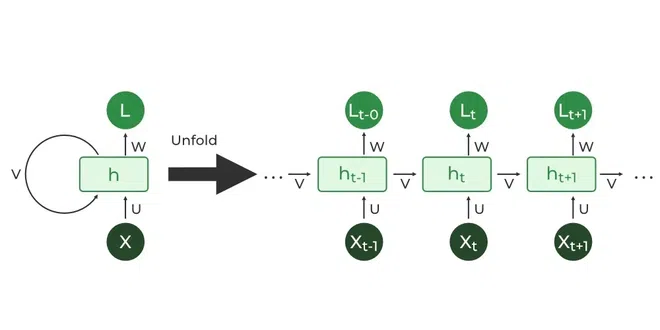
遞迴神經網路 RNN
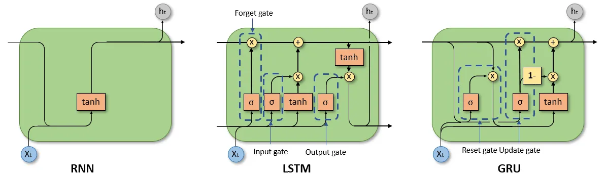
Example code with keras (LSTM)
載入股價資料
載入NVDA股價
NVDA = pd.read_csv("https://raw.githubusercontent.com/CGUIM-BigDataAnalysis/BigDataCGUIM/master/EMBA_BigData/Data/NVDA.csv")
print(NVDA.head()) Date Open High Low Close Adj Close Volume
0 2019-03-29 44.985001 45.134998 44.477501 44.889999 44.585125 45689600
1 2019-04-01 45.814999 45.875000 45.092499 45.570000 45.260521 48382400
2 2019-04-02 45.812500 46.197498 45.380001 45.750000 45.439281 44092000
3 2019-04-03 46.250000 47.750000 46.200001 47.154999 46.834740 78350400
4 2019-04-04 47.000000 47.492500 46.432499 47.064999 46.745358 45737600視覺化股價變化
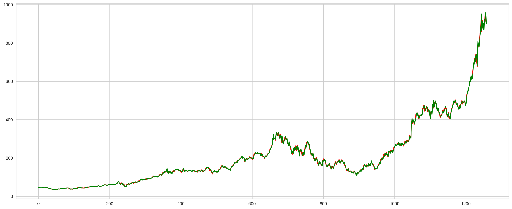
<Figure size 768x528 with 0 Axes>切分訓練集與測試集
- 在時間序列分析中，利用日期切分訓練組與測試組也很常見
- 分析收盤價（
Close）
訓練資料前處理
MinMaxScaler做資料的標準化，把資料轉換成0~1的區間reshape做資料的重整
訓練資料前處理
- LSTM為使用一段時間序列資料預測下一點或多點
- 需要把資料切成一段一段，這裡以14天為單位
X_train, y_train = [], []
days = 14
for i in range(days,len(train_set)):
X_train.append(training_set_scaled[i-days:i-1, 0])
y_train.append(training_set_scaled[i, 0])
X_train, y_train = np.array(X_train), np.array(y_train)
X_train = np.reshape(X_train,
(X_train.shape[0], X_train.shape[1], 1))
print(X_train[0])
print(y_train[0])[[0.03810998]
[0.04037427]
[0.04097364]
[0.04565206]
[0.04535238]
[0.04759169]
[0.04829095]
[0.04618483]
[0.04854903]
[0.04808284]
[0.04680918]
[0.04238882]
[0.04531076]]
0.04372076174281132訓練資料前處理
載入模型訓練需要套件
訓練簡單的LSTM模型
使用keras內的Sequential()功能創建新的回歸訓練模型。並增加一層LSTM。最後regressor.compile決定模型樣貌。
觀看訓練情形
regressor.fit訓練模型
Epoch 1/100
1/43 ━━━━━━━━━━━━━━━━━━━━ 51s 1s/step - loss: 0.0946 6/43 ━━━━━━━━━━━━━━━━━━━━ 0s 12ms/step - loss: 0.094713/43 ━━━━━━━━━━━━━━━━━━━━ 0s 10ms/step - loss: 0.078217/43 ━━━━━━━━━━━━━━━━━━━━ 0s 10ms/step - loss: 0.070324/43 ━━━━━━━━━━━━━━━━━━━━ 0s 10ms/step - loss: 0.059930/43 ━━━━━━━━━━━━━━━━━━━━ 0s 10ms/step - loss: 0.053537/43 ━━━━━━━━━━━━━━━━━━━━ 0s 9ms/step - loss: 0.0477 42/43 ━━━━━━━━━━━━━━━━━━━━ 0s 9ms/step - loss: 0.044443/43 ━━━━━━━━━━━━━━━━━━━━ 2s 10ms/step - loss: 0.0432
Epoch 2/100
1/43 ━━━━━━━━━━━━━━━━━━━━ 1s 26ms/step - loss: 0.0027 7/43 ━━━━━━━━━━━━━━━━━━━━ 0s 9ms/step - loss: 0.0018 13/43 ━━━━━━━━━━━━━━━━━━━━ 0s 9ms/step - loss: 0.002121/43 ━━━━━━━━━━━━━━━━━━━━ 0s 8ms/step - loss: 0.001928/43 ━━━━━━━━━━━━━━━━━━━━ 0s 8ms/step - loss: 0.001833/43 ━━━━━━━━━━━━━━━━━━━━ 0s 9ms/step - loss: 0.001837/43 ━━━━━━━━━━━━━━━━━━━━ 0s 9ms/step - loss: 0.001743/43 ━━━━━━━━━━━━━━━━━━━━ 0s 9ms/step - loss: 0.0016
Epoch 3/100
1/43 ━━━━━━━━━━━━━━━━━━━━ 1s 26ms/step - loss: 4.7084e-04 6/43 ━━━━━━━━━━━━━━━━━━━━ 0s 11ms/step - loss: 0.0011 13/43 ━━━━━━━━━━━━━━━━━━━━ 0s 9ms/step - loss: 0.0010 19/43 ━━━━━━━━━━━━━━━━━━━━ 0s 9ms/step - loss: 9.9281e-0425/43 ━━━━━━━━━━━━━━━━━━━━ 0s 9ms/step - loss: 9.8446e-0430/43 ━━━━━━━━━━━━━━━━━━━━ 0s 9ms/step - loss: 9.8151e-0435/43 ━━━━━━━━━━━━━━━━━━━━ 0s 10ms/step - loss: 9.8566e-0443/43 ━━━━━━━━━━━━━━━━━━━━ 0s 9ms/step - loss: 9.8859e-04 43/43 ━━━━━━━━━━━━━━━━━━━━ 0s 10ms/step - loss: 9.8850e-04
Epoch 4/100
1/43 ━━━━━━━━━━━━━━━━━━━━ 1s 28ms/step - loss: 0.0016 6/43 ━━━━━━━━━━━━━━━━━━━━ 0s 10ms/step - loss: 0.001410/43 ━━━━━━━━━━━━━━━━━━━━ 0s 12ms/step - loss: 0.001316/43 ━━━━━━━━━━━━━━━━━━━━ 0s 11ms/step - loss: 0.001223/43 ━━━━━━━━━━━━━━━━━━━━ 0s 10ms/step - loss: 0.001230/43 ━━━━━━━━━━━━━━━━━━━━ 0s 9ms/step - loss: 0.0011 38/43 ━━━━━━━━━━━━━━━━━━━━ 0s 9ms/step - loss: 0.001143/43 ━━━━━━━━━━━━━━━━━━━━ 0s 9ms/step - loss: 0.0011
Epoch 5/100
1/43 ━━━━━━━━━━━━━━━━━━━━ 1s 25ms/step - loss: 8.0212e-0410/43 ━━━━━━━━━━━━━━━━━━━━ 0s 6ms/step - loss: 7.5833e-04 20/43 ━━━━━━━━━━━━━━━━━━━━ 0s 5ms/step - loss: 8.6235e-0429/43 ━━━━━━━━━━━━━━━━━━━━ 0s 6ms/step - loss: 8.8579e-0439/43 ━━━━━━━━━━━━━━━━━━━━ 0s 6ms/step - loss: 9.0649e-0443/43 ━━━━━━━━━━━━━━━━━━━━ 0s 6ms/step - loss: 9.1251e-04
Epoch 6/100
1/43 ━━━━━━━━━━━━━━━━━━━━ 1s 25ms/step - loss: 0.002710/43 ━━━━━━━━━━━━━━━━━━━━ 0s 6ms/step - loss: 0.0013 21/43 ━━━━━━━━━━━━━━━━━━━━ 0s 5ms/step - loss: 0.001130/43 ━━━━━━━━━━━━━━━━━━━━ 0s 5ms/step - loss: 0.001138/43 ━━━━━━━━━━━━━━━━━━━━ 0s 6ms/step - loss: 0.001143/43 ━━━━━━━━━━━━━━━━━━━━ 0s 6ms/step - loss: 0.0011
Epoch 7/100
1/43 ━━━━━━━━━━━━━━━━━━━━ 1s 26ms/step - loss: 4.0271e-04 7/43 ━━━━━━━━━━━━━━━━━━━━ 0s 9ms/step - loss: 7.7799e-04 16/43 ━━━━━━━━━━━━━━━━━━━━ 0s 7ms/step - loss: 8.5108e-0422/43 ━━━━━━━━━━━━━━━━━━━━ 0s 7ms/step - loss: 8.5589e-0429/43 ━━━━━━━━━━━━━━━━━━━━ 0s 8ms/step - loss: 8.7311e-0434/43 ━━━━━━━━━━━━━━━━━━━━ 0s 8ms/step - loss: 8.7258e-0441/43 ━━━━━━━━━━━━━━━━━━━━ 0s 8ms/step - loss: 8.6757e-0443/43 ━━━━━━━━━━━━━━━━━━━━ 0s 8ms/step - loss: 8.6621e-04
Epoch 8/100
1/43 ━━━━━━━━━━━━━━━━━━━━ 1s 25ms/step - loss: 7.3502e-04 9/43 ━━━━━━━━━━━━━━━━━━━━ 0s 7ms/step - loss: 7.1016e-04 15/43 ━━━━━━━━━━━━━━━━━━━━ 0s 8ms/step - loss: 7.6184e-0423/43 ━━━━━━━━━━━━━━━━━━━━ 0s 7ms/step - loss: 7.9350e-0430/43 ━━━━━━━━━━━━━━━━━━━━ 0s 7ms/step - loss: 8.0047e-0439/43 ━━━━━━━━━━━━━━━━━━━━ 0s 7ms/step - loss: 8.0313e-0443/43 ━━━━━━━━━━━━━━━━━━━━ 0s 7ms/step - loss: 8.1240e-04
Epoch 9/100
1/43 ━━━━━━━━━━━━━━━━━━━━ 1s 26ms/step - loss: 0.0017 8/43 ━━━━━━━━━━━━━━━━━━━━ 0s 8ms/step - loss: 0.0012 15/43 ━━━━━━━━━━━━━━━━━━━━ 0s 8ms/step - loss: 0.001120/43 ━━━━━━━━━━━━━━━━━━━━ 0s 8ms/step - loss: 0.001026/43 ━━━━━━━━━━━━━━━━━━━━ 0s 9ms/step - loss: 9.6914e-0435/43 ━━━━━━━━━━━━━━━━━━━━ 0s 8ms/step - loss: 9.4984e-0440/43 ━━━━━━━━━━━━━━━━━━━━ 0s 8ms/step - loss: 9.4112e-0443/43 ━━━━━━━━━━━━━━━━━━━━ 0s 9ms/step - loss: 9.3963e-04
Epoch 10/100
1/43 ━━━━━━━━━━━━━━━━━━━━ 1s 25ms/step - loss: 1.6135e-04 6/43 ━━━━━━━━━━━━━━━━━━━━ 0s 11ms/step - loss: 5.0984e-0412/43 ━━━━━━━━━━━━━━━━━━━━ 0s 10ms/step - loss: 6.2942e-0418/43 ━━━━━━━━━━━━━━━━━━━━ 0s 9ms/step - loss: 6.9524e-04 25/43 ━━━━━━━━━━━━━━━━━━━━ 0s 9ms/step - loss: 7.0483e-0434/43 ━━━━━━━━━━━━━━━━━━━━ 0s 8ms/step - loss: 7.0075e-0442/43 ━━━━━━━━━━━━━━━━━━━━ 0s 8ms/step - loss: 7.1253e-0443/43 ━━━━━━━━━━━━━━━━━━━━ 0s 8ms/step - loss: 7.1692e-04
Epoch 11/100
1/43 ━━━━━━━━━━━━━━━━━━━━ 0s 21ms/step - loss: 0.001210/43 ━━━━━━━━━━━━━━━━━━━━ 0s 6ms/step - loss: 9.4088e-0420/43 ━━━━━━━━━━━━━━━━━━━━ 0s 6ms/step - loss: 8.6276e-0432/43 ━━━━━━━━━━━━━━━━━━━━ 0s 5ms/step - loss: 8.1311e-0443/43 ━━━━━━━━━━━━━━━━━━━━ 0s 5ms/step - loss: 7.9114e-0443/43 ━━━━━━━━━━━━━━━━━━━━ 0s 5ms/step - loss: 7.9057e-04
Epoch 12/100
1/43 ━━━━━━━━━━━━━━━━━━━━ 0s 20ms/step - loss: 3.0166e-04 7/43 ━━━━━━━━━━━━━━━━━━━━ 0s 9ms/step - loss: 4.5306e-04 14/43 ━━━━━━━━━━━━━━━━━━━━ 0s 9ms/step - loss: 7.0243e-0421/43 ━━━━━━━━━━━━━━━━━━━━ 0s 9ms/step - loss: 7.8485e-0429/43 ━━━━━━━━━━━━━━━━━━━━ 0s 8ms/step - loss: 8.2894e-0436/43 ━━━━━━━━━━━━━━━━━━━━ 0s 8ms/step - loss: 8.3563e-0443/43 ━━━━━━━━━━━━━━━━━━━━ 0s 9ms/step - loss: 8.3210e-04
Epoch 13/100
1/43 ━━━━━━━━━━━━━━━━━━━━ 1s 26ms/step - loss: 5.8226e-04 8/43 ━━━━━━━━━━━━━━━━━━━━ 0s 7ms/step - loss: 5.8600e-04 16/43 ━━━━━━━━━━━━━━━━━━━━ 0s 7ms/step - loss: 7.4734e-0423/43 ━━━━━━━━━━━━━━━━━━━━ 0s 7ms/step - loss: 8.1070e-0430/43 ━━━━━━━━━━━━━━━━━━━━ 0s 7ms/step - loss: 8.3817e-0438/43 ━━━━━━━━━━━━━━━━━━━━ 0s 7ms/step - loss: 8.4892e-0443/43 ━━━━━━━━━━━━━━━━━━━━ 0s 7ms/step - loss: 8.5319e-04
Epoch 14/100
1/43 ━━━━━━━━━━━━━━━━━━━━ 1s 25ms/step - loss: 2.3955e-04 8/43 ━━━━━━━━━━━━━━━━━━━━ 0s 8ms/step - loss: 3.4782e-04 14/43 ━━━━━━━━━━━━━━━━━━━━ 0s 8ms/step - loss: 4.5137e-0421/43 ━━━━━━━━━━━━━━━━━━━━ 0s 8ms/step - loss: 5.5727e-0427/43 ━━━━━━━━━━━━━━━━━━━━ 0s 8ms/step - loss: 5.9119e-0434/43 ━━━━━━━━━━━━━━━━━━━━ 0s 8ms/step - loss: 6.1486e-0441/43 ━━━━━━━━━━━━━━━━━━━━ 0s 8ms/step - loss: 6.2951e-0443/43 ━━━━━━━━━━━━━━━━━━━━ 0s 8ms/step - loss: 6.3576e-04
Epoch 15/100
1/43 ━━━━━━━━━━━━━━━━━━━━ 1s 25ms/step - loss: 7.6580e-0412/43 ━━━━━━━━━━━━━━━━━━━━ 0s 5ms/step - loss: 9.1953e-04 18/43 ━━━━━━━━━━━━━━━━━━━━ 0s 7ms/step - loss: 8.8470e-0426/43 ━━━━━━━━━━━━━━━━━━━━ 0s 7ms/step - loss: 8.3715e-0434/43 ━━━━━━━━━━━━━━━━━━━━ 0s 7ms/step - loss: 8.0838e-0443/43 ━━━━━━━━━━━━━━━━━━━━ 0s 7ms/step - loss: 7.8367e-0443/43 ━━━━━━━━━━━━━━━━━━━━ 0s 7ms/step - loss: 7.8138e-04
Epoch 16/100
1/43 ━━━━━━━━━━━━━━━━━━━━ 1s 29ms/step - loss: 3.4317e-04 8/43 ━━━━━━━━━━━━━━━━━━━━ 0s 10ms/step - loss: 5.0521e-0415/43 ━━━━━━━━━━━━━━━━━━━━ 0s 8ms/step - loss: 5.0694e-04 22/43 ━━━━━━━━━━━━━━━━━━━━ 0s 8ms/step - loss: 5.1357e-0430/43 ━━━━━━━━━━━━━━━━━━━━ 0s 8ms/step - loss: 5.2940e-0437/43 ━━━━━━━━━━━━━━━━━━━━ 0s 8ms/step - loss: 5.4257e-0443/43 ━━━━━━━━━━━━━━━━━━━━ 0s 8ms/step - loss: 5.5566e-04
Epoch 17/100
1/43 ━━━━━━━━━━━━━━━━━━━━ 1s 31ms/step - loss: 0.0010 7/43 ━━━━━━━━━━━━━━━━━━━━ 0s 10ms/step - loss: 0.001212/43 ━━━━━━━━━━━━━━━━━━━━ 0s 10ms/step - loss: 0.001017/43 ━━━━━━━━━━━━━━━━━━━━ 0s 10ms/step - loss: 9.1593e-0422/43 ━━━━━━━━━━━━━━━━━━━━ 0s 10ms/step - loss: 8.8560e-0427/43 ━━━━━━━━━━━━━━━━━━━━ 0s 10ms/step - loss: 8.7309e-0433/43 ━━━━━━━━━━━━━━━━━━━━ 0s 10ms/step - loss: 8.6019e-0439/43 ━━━━━━━━━━━━━━━━━━━━ 0s 10ms/step - loss: 8.4819e-0443/43 ━━━━━━━━━━━━━━━━━━━━ 0s 10ms/step - loss: 8.3695e-04
Epoch 18/100
1/43 ━━━━━━━━━━━━━━━━━━━━ 1s 30ms/step - loss: 2.2140e-04 8/43 ━━━━━━━━━━━━━━━━━━━━ 0s 8ms/step - loss: 5.8783e-04 16/43 ━━━━━━━━━━━━━━━━━━━━ 0s 7ms/step - loss: 6.5910e-0424/43 ━━━━━━━━━━━━━━━━━━━━ 0s 7ms/step - loss: 6.9058e-0432/43 ━━━━━━━━━━━━━━━━━━━━ 0s 7ms/step - loss: 7.0231e-0439/43 ━━━━━━━━━━━━━━━━━━━━ 0s 7ms/step - loss: 6.9773e-0443/43 ━━━━━━━━━━━━━━━━━━━━ 0s 7ms/step - loss: 6.9726e-04
Epoch 19/100
1/43 ━━━━━━━━━━━━━━━━━━━━ 0s 20ms/step - loss: 5.5936e-04 9/43 ━━━━━━━━━━━━━━━━━━━━ 0s 6ms/step - loss: 7.6079e-04 19/43 ━━━━━━━━━━━━━━━━━━━━ 0s 6ms/step - loss: 6.9401e-0427/43 ━━━━━━━━━━━━━━━━━━━━ 0s 6ms/step - loss: 6.8229e-0437/43 ━━━━━━━━━━━━━━━━━━━━ 0s 6ms/step - loss: 6.9776e-0443/43 ━━━━━━━━━━━━━━━━━━━━ 0s 6ms/step - loss: 7.0526e-04
Epoch 20/100
1/43 ━━━━━━━━━━━━━━━━━━━━ 0s 21ms/step - loss: 0.0010 8/43 ━━━━━━━━━━━━━━━━━━━━ 0s 8ms/step - loss: 6.9318e-0414/43 ━━━━━━━━━━━━━━━━━━━━ 0s 8ms/step - loss: 6.5427e-0420/43 ━━━━━━━━━━━━━━━━━━━━ 0s 8ms/step - loss: 6.4910e-0427/43 ━━━━━━━━━━━━━━━━━━━━ 0s 8ms/step - loss: 6.6096e-0438/43 ━━━━━━━━━━━━━━━━━━━━ 0s 7ms/step - loss: 6.7972e-0443/43 ━━━━━━━━━━━━━━━━━━━━ 0s 7ms/step - loss: 6.8293e-04
Epoch 21/100
1/43 ━━━━━━━━━━━━━━━━━━━━ 1s 25ms/step - loss: 9.3795e-04 8/43 ━━━━━━━━━━━━━━━━━━━━ 0s 8ms/step - loss: 7.8462e-04 18/43 ━━━━━━━━━━━━━━━━━━━━ 0s 6ms/step - loss: 6.5725e-0424/43 ━━━━━━━━━━━━━━━━━━━━ 0s 7ms/step - loss: 6.1908e-0431/43 ━━━━━━━━━━━━━━━━━━━━ 0s 7ms/step - loss: 6.0910e-0439/43 ━━━━━━━━━━━━━━━━━━━━ 0s 7ms/step - loss: 6.0639e-0443/43 ━━━━━━━━━━━━━━━━━━━━ 0s 8ms/step - loss: 6.0782e-04
Epoch 22/100
1/43 ━━━━━━━━━━━━━━━━━━━━ 0s 20ms/step - loss: 2.9858e-04 7/43 ━━━━━━━━━━━━━━━━━━━━ 0s 9ms/step - loss: 4.6010e-04 15/43 ━━━━━━━━━━━━━━━━━━━━ 0s 8ms/step - loss: 5.6031e-0425/43 ━━━━━━━━━━━━━━━━━━━━ 0s 7ms/step - loss: 6.3381e-0432/43 ━━━━━━━━━━━━━━━━━━━━ 0s 7ms/step - loss: 6.4637e-0441/43 ━━━━━━━━━━━━━━━━━━━━ 0s 7ms/step - loss: 6.5014e-0443/43 ━━━━━━━━━━━━━━━━━━━━ 0s 7ms/step - loss: 6.5090e-04
Epoch 23/100
1/43 ━━━━━━━━━━━━━━━━━━━━ 1s 26ms/step - loss: 0.0012 8/43 ━━━━━━━━━━━━━━━━━━━━ 0s 7ms/step - loss: 0.0011 17/43 ━━━━━━━━━━━━━━━━━━━━ 0s 7ms/step - loss: 8.8587e-0423/43 ━━━━━━━━━━━━━━━━━━━━ 0s 8ms/step - loss: 8.3320e-0429/43 ━━━━━━━━━━━━━━━━━━━━ 0s 8ms/step - loss: 8.0039e-0434/43 ━━━━━━━━━━━━━━━━━━━━ 0s 8ms/step - loss: 7.7710e-0440/43 ━━━━━━━━━━━━━━━━━━━━ 0s 8ms/step - loss: 7.5302e-0443/43 ━━━━━━━━━━━━━━━━━━━━ 0s 9ms/step - loss: 7.4165e-04
Epoch 24/100
1/43 ━━━━━━━━━━━━━━━━━━━━ 1s 25ms/step - loss: 4.8500e-0410/43 ━━━━━━━━━━━━━━━━━━━━ 0s 6ms/step - loss: 5.1609e-04 16/43 ━━━━━━━━━━━━━━━━━━━━ 0s 7ms/step - loss: 5.1882e-0427/43 ━━━━━━━━━━━━━━━━━━━━ 0s 6ms/step - loss: 5.4895e-0434/43 ━━━━━━━━━━━━━━━━━━━━ 0s 6ms/step - loss: 5.6172e-0443/43 ━━━━━━━━━━━━━━━━━━━━ 0s 6ms/step - loss: 5.7545e-04
Epoch 25/100
1/43 ━━━━━━━━━━━━━━━━━━━━ 0s 23ms/step - loss: 0.0013 8/43 ━━━━━━━━━━━━━━━━━━━━ 0s 8ms/step - loss: 7.0334e-0414/43 ━━━━━━━━━━━━━━━━━━━━ 0s 9ms/step - loss: 6.9317e-0420/43 ━━━━━━━━━━━━━━━━━━━━ 0s 9ms/step - loss: 6.9672e-0426/43 ━━━━━━━━━━━━━━━━━━━━ 0s 9ms/step - loss: 6.9200e-0435/43 ━━━━━━━━━━━━━━━━━━━━ 0s 8ms/step - loss: 6.6972e-0443/43 ━━━━━━━━━━━━━━━━━━━━ 0s 8ms/step - loss: 6.5060e-0443/43 ━━━━━━━━━━━━━━━━━━━━ 0s 8ms/step - loss: 6.4900e-04
Epoch 26/100
1/43 ━━━━━━━━━━━━━━━━━━━━ 1s 26ms/step - loss: 3.4313e-04 9/43 ━━━━━━━━━━━━━━━━━━━━ 0s 7ms/step - loss: 6.7245e-04 17/43 ━━━━━━━━━━━━━━━━━━━━ 0s 7ms/step - loss: 6.4996e-0426/43 ━━━━━━━━━━━━━━━━━━━━ 0s 6ms/step - loss: 6.3150e-0434/43 ━━━━━━━━━━━━━━━━━━━━ 0s 7ms/step - loss: 6.2098e-0443/43 ━━━━━━━━━━━━━━━━━━━━ 0s 6ms/step - loss: 6.1052e-0443/43 ━━━━━━━━━━━━━━━━━━━━ 0s 7ms/step - loss: 6.0992e-04
Epoch 27/100
1/43 ━━━━━━━━━━━━━━━━━━━━ 1s 33ms/step - loss: 4.2269e-04 9/43 ━━━━━━━━━━━━━━━━━━━━ 0s 8ms/step - loss: 5.6203e-04 16/43 ━━━━━━━━━━━━━━━━━━━━ 0s 8ms/step - loss: 5.4438e-0422/43 ━━━━━━━━━━━━━━━━━━━━ 0s 8ms/step - loss: 5.3114e-0429/43 ━━━━━━━━━━━━━━━━━━━━ 0s 8ms/step - loss: 5.3250e-0435/43 ━━━━━━━━━━━━━━━━━━━━ 0s 8ms/step - loss: 5.3812e-0443/43 ━━━━━━━━━━━━━━━━━━━━ 0s 8ms/step - loss: 5.4710e-04
Epoch 28/100
1/43 ━━━━━━━━━━━━━━━━━━━━ 1s 29ms/step - loss: 8.0383e-04 7/43 ━━━━━━━━━━━━━━━━━━━━ 0s 9ms/step - loss: 5.4193e-04 18/43 ━━━━━━━━━━━━━━━━━━━━ 0s 6ms/step - loss: 5.3048e-0426/43 ━━━━━━━━━━━━━━━━━━━━ 0s 6ms/step - loss: 5.3634e-0432/43 ━━━━━━━━━━━━━━━━━━━━ 0s 7ms/step - loss: 5.4836e-0438/43 ━━━━━━━━━━━━━━━━━━━━ 0s 7ms/step - loss: 5.5826e-0443/43 ━━━━━━━━━━━━━━━━━━━━ 0s 8ms/step - loss: 5.6371e-04
Epoch 29/100
1/43 ━━━━━━━━━━━━━━━━━━━━ 1s 26ms/step - loss: 4.1944e-04 9/43 ━━━━━━━━━━━━━━━━━━━━ 0s 7ms/step - loss: 5.6193e-04 18/43 ━━━━━━━━━━━━━━━━━━━━ 0s 6ms/step - loss: 6.5801e-0429/43 ━━━━━━━━━━━━━━━━━━━━ 0s 6ms/step - loss: 6.9338e-0438/43 ━━━━━━━━━━━━━━━━━━━━ 0s 6ms/step - loss: 7.0032e-0443/43 ━━━━━━━━━━━━━━━━━━━━ 0s 6ms/step - loss: 7.0634e-04
Epoch 30/100
1/43 ━━━━━━━━━━━━━━━━━━━━ 0s 20ms/step - loss: 4.3025e-0410/43 ━━━━━━━━━━━━━━━━━━━━ 0s 6ms/step - loss: 4.7599e-04 19/43 ━━━━━━━━━━━━━━━━━━━━ 0s 6ms/step - loss: 4.9346e-0429/43 ━━━━━━━━━━━━━━━━━━━━ 0s 6ms/step - loss: 5.1586e-0438/43 ━━━━━━━━━━━━━━━━━━━━ 0s 6ms/step - loss: 5.3190e-0443/43 ━━━━━━━━━━━━━━━━━━━━ 0s 6ms/step - loss: 5.4015e-04
Epoch 31/100
1/43 ━━━━━━━━━━━━━━━━━━━━ 1s 24ms/step - loss: 4.7071e-04 9/43 ━━━━━━━━━━━━━━━━━━━━ 0s 6ms/step - loss: 4.7280e-04 18/43 ━━━━━━━━━━━━━━━━━━━━ 0s 6ms/step - loss: 5.1125e-0429/43 ━━━━━━━━━━━━━━━━━━━━ 0s 6ms/step - loss: 5.2930e-0442/43 ━━━━━━━━━━━━━━━━━━━━ 0s 5ms/step - loss: 5.3368e-0443/43 ━━━━━━━━━━━━━━━━━━━━ 0s 6ms/step - loss: 5.3333e-04
Epoch 32/100
1/43 ━━━━━━━━━━━━━━━━━━━━ 1s 27ms/step - loss: 4.0247e-04 9/43 ━━━━━━━━━━━━━━━━━━━━ 0s 7ms/step - loss: 4.0505e-04 15/43 ━━━━━━━━━━━━━━━━━━━━ 0s 8ms/step - loss: 4.1022e-0424/43 ━━━━━━━━━━━━━━━━━━━━ 0s 7ms/step - loss: 4.2357e-0431/43 ━━━━━━━━━━━━━━━━━━━━ 0s 8ms/step - loss: 4.3552e-0439/43 ━━━━━━━━━━━━━━━━━━━━ 0s 7ms/step - loss: 4.4337e-0443/43 ━━━━━━━━━━━━━━━━━━━━ 0s 8ms/step - loss: 4.5061e-04
Epoch 33/100
1/43 ━━━━━━━━━━━━━━━━━━━━ 0s 21ms/step - loss: 2.4844e-04 8/43 ━━━━━━━━━━━━━━━━━━━━ 0s 7ms/step - loss: 5.1785e-04 16/43 ━━━━━━━━━━━━━━━━━━━━ 0s 7ms/step - loss: 5.2745e-0421/43 ━━━━━━━━━━━━━━━━━━━━ 0s 8ms/step - loss: 5.2935e-0429/43 ━━━━━━━━━━━━━━━━━━━━ 0s 8ms/step - loss: 5.4897e-0436/43 ━━━━━━━━━━━━━━━━━━━━ 0s 8ms/step - loss: 5.5154e-0443/43 ━━━━━━━━━━━━━━━━━━━━ 0s 8ms/step - loss: 5.5320e-04
Epoch 34/100
1/43 ━━━━━━━━━━━━━━━━━━━━ 0s 20ms/step - loss: 5.8527e-0411/43 ━━━━━━━━━━━━━━━━━━━━ 0s 7ms/step - loss: 5.2067e-04 22/43 ━━━━━━━━━━━━━━━━━━━━ 0s 6ms/step - loss: 5.7506e-0430/43 ━━━━━━━━━━━━━━━━━━━━ 0s 6ms/step - loss: 5.9422e-0439/43 ━━━━━━━━━━━━━━━━━━━━ 0s 6ms/step - loss: 5.9851e-0443/43 ━━━━━━━━━━━━━━━━━━━━ 0s 6ms/step - loss: 5.9933e-04
Epoch 35/100
1/43 ━━━━━━━━━━━━━━━━━━━━ 1s 26ms/step - loss: 3.1783e-04 8/43 ━━━━━━━━━━━━━━━━━━━━ 0s 8ms/step - loss: 5.1433e-04 16/43 ━━━━━━━━━━━━━━━━━━━━ 0s 8ms/step - loss: 5.6152e-0424/43 ━━━━━━━━━━━━━━━━━━━━ 0s 7ms/step - loss: 5.5702e-0430/43 ━━━━━━━━━━━━━━━━━━━━ 0s 8ms/step - loss: 5.5218e-0437/43 ━━━━━━━━━━━━━━━━━━━━ 0s 8ms/step - loss: 5.4336e-0443/43 ━━━━━━━━━━━━━━━━━━━━ 0s 8ms/step - loss: 5.3685e-04
Epoch 36/100
1/43 ━━━━━━━━━━━━━━━━━━━━ 1s 29ms/step - loss: 6.6913e-04 7/43 ━━━━━━━━━━━━━━━━━━━━ 0s 8ms/step - loss: 7.3141e-04 15/43 ━━━━━━━━━━━━━━━━━━━━ 0s 8ms/step - loss: 6.2900e-0422/43 ━━━━━━━━━━━━━━━━━━━━ 0s 8ms/step - loss: 6.0795e-0428/43 ━━━━━━━━━━━━━━━━━━━━ 0s 8ms/step - loss: 6.0579e-0436/43 ━━━━━━━━━━━━━━━━━━━━ 0s 8ms/step - loss: 6.0627e-0443/43 ━━━━━━━━━━━━━━━━━━━━ 0s 8ms/step - loss: 6.0056e-04
Epoch 37/100
1/43 ━━━━━━━━━━━━━━━━━━━━ 1s 25ms/step - loss: 5.7894e-04 6/43 ━━━━━━━━━━━━━━━━━━━━ 0s 11ms/step - loss: 6.5332e-0412/43 ━━━━━━━━━━━━━━━━━━━━ 0s 10ms/step - loss: 6.9274e-0419/43 ━━━━━━━━━━━━━━━━━━━━ 0s 9ms/step - loss: 6.7603e-04 27/43 ━━━━━━━━━━━━━━━━━━━━ 0s 9ms/step - loss: 6.9021e-0434/43 ━━━━━━━━━━━━━━━━━━━━ 0s 8ms/step - loss: 6.8885e-0442/43 ━━━━━━━━━━━━━━━━━━━━ 0s 8ms/step - loss: 6.8309e-0443/43 ━━━━━━━━━━━━━━━━━━━━ 0s 9ms/step - loss: 6.8107e-04
Epoch 38/100
1/43 ━━━━━━━━━━━━━━━━━━━━ 1s 25ms/step - loss: 4.7489e-04 9/43 ━━━━━━━━━━━━━━━━━━━━ 0s 7ms/step - loss: 7.4992e-04 19/43 ━━━━━━━━━━━━━━━━━━━━ 0s 6ms/step - loss: 6.8744e-0428/43 ━━━━━━━━━━━━━━━━━━━━ 0s 6ms/step - loss: 6.7162e-0436/43 ━━━━━━━━━━━━━━━━━━━━ 0s 6ms/step - loss: 6.4858e-0443/43 ━━━━━━━━━━━━━━━━━━━━ 0s 7ms/step - loss: 6.3615e-04
Epoch 39/100
1/43 ━━━━━━━━━━━━━━━━━━━━ 1s 35ms/step - loss: 9.4537e-04 8/43 ━━━━━━━━━━━━━━━━━━━━ 0s 7ms/step - loss: 6.9735e-04 14/43 ━━━━━━━━━━━━━━━━━━━━ 0s 8ms/step - loss: 6.5848e-0421/43 ━━━━━━━━━━━━━━━━━━━━ 0s 8ms/step - loss: 6.2424e-0428/43 ━━━━━━━━━━━━━━━━━━━━ 0s 8ms/step - loss: 5.9528e-0435/43 ━━━━━━━━━━━━━━━━━━━━ 0s 8ms/step - loss: 5.7331e-0442/43 ━━━━━━━━━━━━━━━━━━━━ 0s 8ms/step - loss: 5.6157e-0443/43 ━━━━━━━━━━━━━━━━━━━━ 0s 8ms/step - loss: 5.5976e-04
Epoch 40/100
1/43 ━━━━━━━━━━━━━━━━━━━━ 1s 30ms/step - loss: 4.8163e-04 7/43 ━━━━━━━━━━━━━━━━━━━━ 0s 9ms/step - loss: 4.3438e-04 14/43 ━━━━━━━━━━━━━━━━━━━━ 0s 8ms/step - loss: 4.3647e-0423/43 ━━━━━━━━━━━━━━━━━━━━ 0s 7ms/step - loss: 4.5564e-0429/43 ━━━━━━━━━━━━━━━━━━━━ 0s 8ms/step - loss: 4.6325e-0436/43 ━━━━━━━━━━━━━━━━━━━━ 0s 8ms/step - loss: 4.7437e-0443/43 ━━━━━━━━━━━━━━━━━━━━ 0s 8ms/step - loss: 4.8356e-0443/43 ━━━━━━━━━━━━━━━━━━━━ 0s 8ms/step - loss: 4.8502e-04
Epoch 41/100
1/43 ━━━━━━━━━━━━━━━━━━━━ 0s 21ms/step - loss: 1.5665e-04 7/43 ━━━━━━━━━━━━━━━━━━━━ 0s 9ms/step - loss: 7.9768e-04 14/43 ━━━━━━━━━━━━━━━━━━━━ 0s 8ms/step - loss: 6.9703e-0421/43 ━━━━━━━━━━━━━━━━━━━━ 0s 8ms/step - loss: 6.4847e-0429/43 ━━━━━━━━━━━━━━━━━━━━ 0s 8ms/step - loss: 6.2946e-0437/43 ━━━━━━━━━━━━━━━━━━━━ 0s 8ms/step - loss: 6.1446e-0443/43 ━━━━━━━━━━━━━━━━━━━━ 0s 8ms/step - loss: 6.0911e-04
Epoch 42/100
1/43 ━━━━━━━━━━━━━━━━━━━━ 0s 20ms/step - loss: 2.9491e-0411/43 ━━━━━━━━━━━━━━━━━━━━ 0s 5ms/step - loss: 5.2938e-04 20/43 ━━━━━━━━━━━━━━━━━━━━ 0s 5ms/step - loss: 5.5237e-0429/43 ━━━━━━━━━━━━━━━━━━━━ 0s 6ms/step - loss: 5.7524e-0435/43 ━━━━━━━━━━━━━━━━━━━━ 0s 6ms/step - loss: 5.8361e-0441/43 ━━━━━━━━━━━━━━━━━━━━ 0s 7ms/step - loss: 5.8678e-0443/43 ━━━━━━━━━━━━━━━━━━━━ 0s 7ms/step - loss: 5.8696e-04
Epoch 43/100
1/43 ━━━━━━━━━━━━━━━━━━━━ 0s 20ms/step - loss: 5.2070e-0412/43 ━━━━━━━━━━━━━━━━━━━━ 0s 5ms/step - loss: 6.0733e-04 21/43 ━━━━━━━━━━━━━━━━━━━━ 0s 5ms/step - loss: 5.9255e-0429/43 ━━━━━━━━━━━━━━━━━━━━ 0s 6ms/step - loss: 5.7641e-0439/43 ━━━━━━━━━━━━━━━━━━━━ 0s 6ms/step - loss: 5.6037e-0443/43 ━━━━━━━━━━━━━━━━━━━━ 0s 6ms/step - loss: 5.5241e-04
Epoch 44/100
1/43 ━━━━━━━━━━━━━━━━━━━━ 1s 26ms/step - loss: 3.0002e-04 7/43 ━━━━━━━━━━━━━━━━━━━━ 0s 9ms/step - loss: 3.6347e-04 15/43 ━━━━━━━━━━━━━━━━━━━━ 0s 8ms/step - loss: 4.4093e-0423/43 ━━━━━━━━━━━━━━━━━━━━ 0s 7ms/step - loss: 4.8407e-0430/43 ━━━━━━━━━━━━━━━━━━━━ 0s 7ms/step - loss: 5.0054e-0437/43 ━━━━━━━━━━━━━━━━━━━━ 0s 7ms/step - loss: 5.0478e-0443/43 ━━━━━━━━━━━━━━━━━━━━ 0s 8ms/step - loss: 5.0353e-04
Epoch 45/100
1/43 ━━━━━━━━━━━━━━━━━━━━ 1s 26ms/step - loss: 1.9692e-04 8/43 ━━━━━━━━━━━━━━━━━━━━ 0s 8ms/step - loss: 3.6394e-04 14/43 ━━━━━━━━━━━━━━━━━━━━ 0s 9ms/step - loss: 4.2159e-0421/43 ━━━━━━━━━━━━━━━━━━━━ 0s 8ms/step - loss: 4.4207e-0428/43 ━━━━━━━━━━━━━━━━━━━━ 0s 8ms/step - loss: 4.5593e-0433/43 ━━━━━━━━━━━━━━━━━━━━ 0s 8ms/step - loss: 4.6309e-0438/43 ━━━━━━━━━━━━━━━━━━━━ 0s 9ms/step - loss: 4.7145e-0443/43 ━━━━━━━━━━━━━━━━━━━━ 0s 9ms/step - loss: 4.7795e-0443/43 ━━━━━━━━━━━━━━━━━━━━ 0s 9ms/step - loss: 4.7894e-04
Epoch 46/100
1/43 ━━━━━━━━━━━━━━━━━━━━ 1s 40ms/step - loss: 8.6438e-04 7/43 ━━━━━━━━━━━━━━━━━━━━ 0s 10ms/step - loss: 5.6899e-0411/43 ━━━━━━━━━━━━━━━━━━━━ 0s 12ms/step - loss: 5.4801e-0416/43 ━━━━━━━━━━━━━━━━━━━━ 0s 11ms/step - loss: 5.3478e-0423/43 ━━━━━━━━━━━━━━━━━━━━ 0s 10ms/step - loss: 5.3815e-0429/43 ━━━━━━━━━━━━━━━━━━━━ 0s 10ms/step - loss: 5.3823e-0435/43 ━━━━━━━━━━━━━━━━━━━━ 0s 10ms/step - loss: 5.3331e-0441/43 ━━━━━━━━━━━━━━━━━━━━ 0s 10ms/step - loss: 5.2876e-0443/43 ━━━━━━━━━━━━━━━━━━━━ 0s 10ms/step - loss: 5.2809e-04
Epoch 47/100
1/43 ━━━━━━━━━━━━━━━━━━━━ 1s 41ms/step - loss: 0.0017 8/43 ━━━━━━━━━━━━━━━━━━━━ 0s 9ms/step - loss: 0.0010 15/43 ━━━━━━━━━━━━━━━━━━━━ 0s 8ms/step - loss: 9.0382e-0422/43 ━━━━━━━━━━━━━━━━━━━━ 0s 8ms/step - loss: 8.2776e-0433/43 ━━━━━━━━━━━━━━━━━━━━ 0s 7ms/step - loss: 7.6573e-0441/43 ━━━━━━━━━━━━━━━━━━━━ 0s 7ms/step - loss: 7.3760e-0443/43 ━━━━━━━━━━━━━━━━━━━━ 0s 7ms/step - loss: 7.3001e-04
Epoch 48/100
1/43 ━━━━━━━━━━━━━━━━━━━━ 1s 26ms/step - loss: 8.1996e-04 9/43 ━━━━━━━━━━━━━━━━━━━━ 0s 7ms/step - loss: 9.4861e-04 17/43 ━━━━━━━━━━━━━━━━━━━━ 0s 7ms/step - loss: 8.8065e-0422/43 ━━━━━━━━━━━━━━━━━━━━ 0s 8ms/step - loss: 8.6222e-0428/43 ━━━━━━━━━━━━━━━━━━━━ 0s 8ms/step - loss: 8.4410e-0434/43 ━━━━━━━━━━━━━━━━━━━━ 0s 8ms/step - loss: 8.2819e-0441/43 ━━━━━━━━━━━━━━━━━━━━ 0s 9ms/step - loss: 8.1308e-0443/43 ━━━━━━━━━━━━━━━━━━━━ 0s 9ms/step - loss: 8.0649e-04
Epoch 49/100
1/43 ━━━━━━━━━━━━━━━━━━━━ 1s 26ms/step - loss: 2.9981e-04 8/43 ━━━━━━━━━━━━━━━━━━━━ 0s 8ms/step - loss: 4.8898e-04 14/43 ━━━━━━━━━━━━━━━━━━━━ 0s 8ms/step - loss: 5.0392e-0422/43 ━━━━━━━━━━━━━━━━━━━━ 0s 8ms/step - loss: 5.0853e-0429/43 ━━━━━━━━━━━━━━━━━━━━ 0s 8ms/step - loss: 5.0047e-0437/43 ━━━━━━━━━━━━━━━━━━━━ 0s 7ms/step - loss: 4.9698e-0443/43 ━━━━━━━━━━━━━━━━━━━━ 0s 8ms/step - loss: 4.9972e-04
Epoch 50/100
1/43 ━━━━━━━━━━━━━━━━━━━━ 1s 29ms/step - loss: 2.7431e-04 8/43 ━━━━━━━━━━━━━━━━━━━━ 0s 8ms/step - loss: 3.6530e-04 15/43 ━━━━━━━━━━━━━━━━━━━━ 0s 8ms/step - loss: 4.0057e-0422/43 ━━━━━━━━━━━━━━━━━━━━ 0s 8ms/step - loss: 3.9518e-0429/43 ━━━━━━━━━━━━━━━━━━━━ 0s 8ms/step - loss: 4.0283e-0435/43 ━━━━━━━━━━━━━━━━━━━━ 0s 8ms/step - loss: 4.1509e-0442/43 ━━━━━━━━━━━━━━━━━━━━ 0s 8ms/step - loss: 4.2314e-0443/43 ━━━━━━━━━━━━━━━━━━━━ 0s 8ms/step - loss: 4.2564e-04
Epoch 51/100
1/43 ━━━━━━━━━━━━━━━━━━━━ 1s 30ms/step - loss: 2.6631e-04 8/43 ━━━━━━━━━━━━━━━━━━━━ 0s 7ms/step - loss: 3.6503e-04 15/43 ━━━━━━━━━━━━━━━━━━━━ 0s 7ms/step - loss: 4.1525e-0425/43 ━━━━━━━━━━━━━━━━━━━━ 0s 6ms/step - loss: 4.3836e-0435/43 ━━━━━━━━━━━━━━━━━━━━ 0s 6ms/step - loss: 4.4947e-0443/43 ━━━━━━━━━━━━━━━━━━━━ 0s 6ms/step - loss: 4.5755e-04
Epoch 52/100
1/43 ━━━━━━━━━━━━━━━━━━━━ 1s 27ms/step - loss: 9.8359e-05 9/43 ━━━━━━━━━━━━━━━━━━━━ 0s 7ms/step - loss: 2.1772e-04 16/43 ━━━━━━━━━━━━━━━━━━━━ 0s 7ms/step - loss: 2.6927e-0422/43 ━━━━━━━━━━━━━━━━━━━━ 0s 8ms/step - loss: 2.8849e-0430/43 ━━━━━━━━━━━━━━━━━━━━ 0s 7ms/step - loss: 3.0503e-0437/43 ━━━━━━━━━━━━━━━━━━━━ 0s 7ms/step - loss: 3.3005e-0443/43 ━━━━━━━━━━━━━━━━━━━━ 0s 8ms/step - loss: 3.5876e-04
Epoch 53/100
1/43 ━━━━━━━━━━━━━━━━━━━━ 0s 21ms/step - loss: 4.3092e-0410/43 ━━━━━━━━━━━━━━━━━━━━ 0s 6ms/step - loss: 5.2305e-04 20/43 ━━━━━━━━━━━━━━━━━━━━ 0s 5ms/step - loss: 5.1004e-0430/43 ━━━━━━━━━━━━━━━━━━━━ 0s 6ms/step - loss: 4.9581e-0439/43 ━━━━━━━━━━━━━━━━━━━━ 0s 6ms/step - loss: 4.8638e-0443/43 ━━━━━━━━━━━━━━━━━━━━ 0s 6ms/step - loss: 4.8357e-04
Epoch 54/100
1/43 ━━━━━━━━━━━━━━━━━━━━ 0s 20ms/step - loss: 3.0282e-0410/43 ━━━━━━━━━━━━━━━━━━━━ 0s 6ms/step - loss: 3.2991e-04 20/43 ━━━━━━━━━━━━━━━━━━━━ 0s 6ms/step - loss: 3.9862e-0431/43 ━━━━━━━━━━━━━━━━━━━━ 0s 5ms/step - loss: 4.1071e-0439/43 ━━━━━━━━━━━━━━━━━━━━ 0s 6ms/step - loss: 4.1273e-0443/43 ━━━━━━━━━━━━━━━━━━━━ 0s 6ms/step - loss: 4.1557e-04
Epoch 55/100
1/43 ━━━━━━━━━━━━━━━━━━━━ 1s 26ms/step - loss: 3.8015e-0411/43 ━━━━━━━━━━━━━━━━━━━━ 0s 5ms/step - loss: 4.3202e-04 20/43 ━━━━━━━━━━━━━━━━━━━━ 0s 6ms/step - loss: 4.2921e-0427/43 ━━━━━━━━━━━━━━━━━━━━ 0s 6ms/step - loss: 4.4483e-0434/43 ━━━━━━━━━━━━━━━━━━━━ 0s 7ms/step - loss: 4.6538e-0441/43 ━━━━━━━━━━━━━━━━━━━━ 0s 7ms/step - loss: 4.8078e-0443/43 ━━━━━━━━━━━━━━━━━━━━ 0s 7ms/step - loss: 4.8559e-04
Epoch 56/100
1/43 ━━━━━━━━━━━━━━━━━━━━ 1s 26ms/step - loss: 7.7272e-04 8/43 ━━━━━━━━━━━━━━━━━━━━ 0s 8ms/step - loss: 6.1610e-04 14/43 ━━━━━━━━━━━━━━━━━━━━ 0s 8ms/step - loss: 5.9580e-0421/43 ━━━━━━━━━━━━━━━━━━━━ 0s 8ms/step - loss: 5.9968e-0427/43 ━━━━━━━━━━━━━━━━━━━━ 0s 8ms/step - loss: 5.9777e-0435/43 ━━━━━━━━━━━━━━━━━━━━ 0s 8ms/step - loss: 5.8345e-0442/43 ━━━━━━━━━━━━━━━━━━━━ 0s 8ms/step - loss: 5.7148e-0443/43 ━━━━━━━━━━━━━━━━━━━━ 0s 8ms/step - loss: 5.6822e-04
Epoch 57/100
1/43 ━━━━━━━━━━━━━━━━━━━━ 1s 28ms/step - loss: 3.9999e-04 8/43 ━━━━━━━━━━━━━━━━━━━━ 0s 7ms/step - loss: 7.1326e-04 15/43 ━━━━━━━━━━━━━━━━━━━━ 0s 8ms/step - loss: 6.7437e-0422/43 ━━━━━━━━━━━━━━━━━━━━ 0s 8ms/step - loss: 6.4635e-0429/43 ━━━━━━━━━━━━━━━━━━━━ 0s 8ms/step - loss: 6.2135e-0436/43 ━━━━━━━━━━━━━━━━━━━━ 0s 8ms/step - loss: 5.9790e-0442/43 ━━━━━━━━━━━━━━━━━━━━ 0s 8ms/step - loss: 5.8252e-0443/43 ━━━━━━━━━━━━━━━━━━━━ 0s 8ms/step - loss: 5.7819e-04
Epoch 58/100
1/43 ━━━━━━━━━━━━━━━━━━━━ 0s 21ms/step - loss: 7.6373e-04 7/43 ━━━━━━━━━━━━━━━━━━━━ 0s 9ms/step - loss: 5.5053e-04 12/43 ━━━━━━━━━━━━━━━━━━━━ 0s 10ms/step - loss: 5.1096e-0418/43 ━━━━━━━━━━━━━━━━━━━━ 0s 9ms/step - loss: 4.6966e-04 25/43 ━━━━━━━━━━━━━━━━━━━━ 0s 9ms/step - loss: 4.4841e-0432/43 ━━━━━━━━━━━━━━━━━━━━ 0s 9ms/step - loss: 4.4152e-0439/43 ━━━━━━━━━━━━━━━━━━━━ 0s 9ms/step - loss: 4.4605e-0443/43 ━━━━━━━━━━━━━━━━━━━━ 0s 9ms/step - loss: 4.4703e-04
Epoch 59/100
1/43 ━━━━━━━━━━━━━━━━━━━━ 1s 26ms/step - loss: 8.5492e-05 8/43 ━━━━━━━━━━━━━━━━━━━━ 0s 7ms/step - loss: 3.2526e-04 16/43 ━━━━━━━━━━━━━━━━━━━━ 0s 7ms/step - loss: 3.9819e-0423/43 ━━━━━━━━━━━━━━━━━━━━ 0s 7ms/step - loss: 4.1781e-0432/43 ━━━━━━━━━━━━━━━━━━━━ 0s 7ms/step - loss: 4.4130e-0440/43 ━━━━━━━━━━━━━━━━━━━━ 0s 7ms/step - loss: 4.5486e-0443/43 ━━━━━━━━━━━━━━━━━━━━ 0s 7ms/step - loss: 4.5859e-04
Epoch 60/100
1/43 ━━━━━━━━━━━━━━━━━━━━ 1s 26ms/step - loss: 5.1577e-0411/43 ━━━━━━━━━━━━━━━━━━━━ 0s 5ms/step - loss: 3.6812e-04 21/43 ━━━━━━━━━━━━━━━━━━━━ 0s 6ms/step - loss: 3.8699e-0431/43 ━━━━━━━━━━━━━━━━━━━━ 0s 6ms/step - loss: 3.9697e-0438/43 ━━━━━━━━━━━━━━━━━━━━ 0s 6ms/step - loss: 4.0153e-0443/43 ━━━━━━━━━━━━━━━━━━━━ 0s 6ms/step - loss: 4.0675e-04
Epoch 61/100
1/43 ━━━━━━━━━━━━━━━━━━━━ 1s 29ms/step - loss: 2.2008e-0410/43 ━━━━━━━━━━━━━━━━━━━━ 0s 6ms/step - loss: 3.3924e-04 21/43 ━━━━━━━━━━━━━━━━━━━━ 0s 5ms/step - loss: 4.0518e-0430/43 ━━━━━━━━━━━━━━━━━━━━ 0s 6ms/step - loss: 4.1311e-0437/43 ━━━━━━━━━━━━━━━━━━━━ 0s 6ms/step - loss: 4.1977e-0443/43 ━━━━━━━━━━━━━━━━━━━━ 0s 6ms/step - loss: 4.3025e-04
Epoch 62/100
1/43 ━━━━━━━━━━━━━━━━━━━━ 1s 25ms/step - loss: 2.4816e-04 9/43 ━━━━━━━━━━━━━━━━━━━━ 0s 8ms/step - loss: 6.4984e-04 18/43 ━━━━━━━━━━━━━━━━━━━━ 0s 7ms/step - loss: 6.0403e-0425/43 ━━━━━━━━━━━━━━━━━━━━ 0s 7ms/step - loss: 5.7614e-0432/43 ━━━━━━━━━━━━━━━━━━━━ 0s 7ms/step - loss: 5.6194e-0438/43 ━━━━━━━━━━━━━━━━━━━━ 0s 8ms/step - loss: 5.4990e-0443/43 ━━━━━━━━━━━━━━━━━━━━ 0s 8ms/step - loss: 5.3919e-04
Epoch 63/100
1/43 ━━━━━━━━━━━━━━━━━━━━ 0s 20ms/step - loss: 0.0011 7/43 ━━━━━━━━━━━━━━━━━━━━ 0s 9ms/step - loss: 6.4574e-0415/43 ━━━━━━━━━━━━━━━━━━━━ 0s 7ms/step - loss: 5.7345e-0420/43 ━━━━━━━━━━━━━━━━━━━━ 0s 8ms/step - loss: 5.3829e-0429/43 ━━━━━━━━━━━━━━━━━━━━ 0s 8ms/step - loss: 5.2304e-0436/43 ━━━━━━━━━━━━━━━━━━━━ 0s 8ms/step - loss: 5.2755e-0443/43 ━━━━━━━━━━━━━━━━━━━━ 0s 8ms/step - loss: 5.2252e-04
Epoch 64/100
1/43 ━━━━━━━━━━━━━━━━━━━━ 0s 20ms/step - loss: 1.6260e-04 7/43 ━━━━━━━━━━━━━━━━━━━━ 0s 8ms/step - loss: 4.7497e-04 15/43 ━━━━━━━━━━━━━━━━━━━━ 0s 7ms/step - loss: 4.8541e-0421/43 ━━━━━━━━━━━━━━━━━━━━ 0s 8ms/step - loss: 4.7370e-0428/43 ━━━━━━━━━━━━━━━━━━━━ 0s 8ms/step - loss: 4.6464e-0437/43 ━━━━━━━━━━━━━━━━━━━━ 0s 7ms/step - loss: 4.6121e-0443/43 ━━━━━━━━━━━━━━━━━━━━ 0s 7ms/step - loss: 4.5680e-04
Epoch 65/100
1/43 ━━━━━━━━━━━━━━━━━━━━ 0s 20ms/step - loss: 8.2844e-04 8/43 ━━━━━━━━━━━━━━━━━━━━ 0s 8ms/step - loss: 4.7102e-04 18/43 ━━━━━━━━━━━━━━━━━━━━ 0s 6ms/step - loss: 4.1147e-0427/43 ━━━━━━━━━━━━━━━━━━━━ 0s 6ms/step - loss: 4.4054e-0435/43 ━━━━━━━━━━━━━━━━━━━━ 0s 6ms/step - loss: 4.5720e-0443/43 ━━━━━━━━━━━━━━━━━━━━ 0s 6ms/step - loss: 4.6750e-04
Epoch 66/100
1/43 ━━━━━━━━━━━━━━━━━━━━ 0s 20ms/step - loss: 4.6184e-0410/43 ━━━━━━━━━━━━━━━━━━━━ 0s 6ms/step - loss: 4.7287e-04 17/43 ━━━━━━━━━━━━━━━━━━━━ 0s 6ms/step - loss: 4.6741e-0428/43 ━━━━━━━━━━━━━━━━━━━━ 0s 6ms/step - loss: 4.8349e-0435/43 ━━━━━━━━━━━━━━━━━━━━ 0s 6ms/step - loss: 4.8449e-0443/43 ━━━━━━━━━━━━━━━━━━━━ 0s 6ms/step - loss: 4.8279e-04
Epoch 67/100
1/43 ━━━━━━━━━━━━━━━━━━━━ 1s 27ms/step - loss: 2.2866e-0411/43 ━━━━━━━━━━━━━━━━━━━━ 0s 6ms/step - loss: 3.4204e-04 19/43 ━━━━━━━━━━━━━━━━━━━━ 0s 6ms/step - loss: 3.7080e-0426/43 ━━━━━━━━━━━━━━━━━━━━ 0s 7ms/step - loss: 3.8076e-0435/43 ━━━━━━━━━━━━━━━━━━━━ 0s 7ms/step - loss: 3.9902e-0443/43 ━━━━━━━━━━━━━━━━━━━━ 0s 6ms/step - loss: 4.0896e-04
Epoch 68/100
1/43 ━━━━━━━━━━━━━━━━━━━━ 1s 25ms/step - loss: 3.4156e-04 7/43 ━━━━━━━━━━━━━━━━━━━━ 0s 8ms/step - loss: 3.7101e-04 14/43 ━━━━━━━━━━━━━━━━━━━━ 0s 8ms/step - loss: 3.8565e-0422/43 ━━━━━━━━━━━━━━━━━━━━ 0s 8ms/step - loss: 4.0952e-0432/43 ━━━━━━━━━━━━━━━━━━━━ 0s 7ms/step - loss: 4.1374e-0441/43 ━━━━━━━━━━━━━━━━━━━━ 0s 7ms/step - loss: 4.2871e-0443/43 ━━━━━━━━━━━━━━━━━━━━ 0s 7ms/step - loss: 4.3511e-04
Epoch 69/100
1/43 ━━━━━━━━━━━━━━━━━━━━ 0s 20ms/step - loss: 0.001210/43 ━━━━━━━━━━━━━━━━━━━━ 0s 6ms/step - loss: 7.2845e-0419/43 ━━━━━━━━━━━━━━━━━━━━ 0s 6ms/step - loss: 6.2171e-0430/43 ━━━━━━━━━━━━━━━━━━━━ 0s 6ms/step - loss: 5.5966e-0438/43 ━━━━━━━━━━━━━━━━━━━━ 0s 6ms/step - loss: 5.3047e-0443/43 ━━━━━━━━━━━━━━━━━━━━ 0s 6ms/step - loss: 5.2089e-04
Epoch 70/100
1/43 ━━━━━━━━━━━━━━━━━━━━ 0s 20ms/step - loss: 5.6525e-04 9/43 ━━━━━━━━━━━━━━━━━━━━ 0s 6ms/step - loss: 4.8269e-04 16/43 ━━━━━━━━━━━━━━━━━━━━ 0s 7ms/step - loss: 5.0917e-0425/43 ━━━━━━━━━━━━━━━━━━━━ 0s 6ms/step - loss: 5.0973e-0432/43 ━━━━━━━━━━━━━━━━━━━━ 0s 7ms/step - loss: 5.0891e-0439/43 ━━━━━━━━━━━━━━━━━━━━ 0s 7ms/step - loss: 5.0462e-0443/43 ━━━━━━━━━━━━━━━━━━━━ 0s 7ms/step - loss: 5.0153e-04
Epoch 71/100
1/43 ━━━━━━━━━━━━━━━━━━━━ 1s 29ms/step - loss: 8.6651e-0410/43 ━━━━━━━━━━━━━━━━━━━━ 0s 6ms/step - loss: 4.8536e-04 19/43 ━━━━━━━━━━━━━━━━━━━━ 0s 6ms/step - loss: 4.7130e-0430/43 ━━━━━━━━━━━━━━━━━━━━ 0s 6ms/step - loss: 4.6193e-0438/43 ━━━━━━━━━━━━━━━━━━━━ 0s 6ms/step - loss: 4.6174e-0443/43 ━━━━━━━━━━━━━━━━━━━━ 0s 6ms/step - loss: 4.6047e-04
Epoch 72/100
1/43 ━━━━━━━━━━━━━━━━━━━━ 0s 20ms/step - loss: 4.8137e-04 7/43 ━━━━━━━━━━━━━━━━━━━━ 0s 9ms/step - loss: 4.0680e-04 13/43 ━━━━━━━━━━━━━━━━━━━━ 0s 9ms/step - loss: 3.9408e-0419/43 ━━━━━━━━━━━━━━━━━━━━ 0s 9ms/step - loss: 4.0860e-0424/43 ━━━━━━━━━━━━━━━━━━━━ 0s 9ms/step - loss: 4.1446e-0430/43 ━━━━━━━━━━━━━━━━━━━━ 0s 9ms/step - loss: 4.1683e-0437/43 ━━━━━━━━━━━━━━━━━━━━ 0s 9ms/step - loss: 4.2237e-0443/43 ━━━━━━━━━━━━━━━━━━━━ 0s 9ms/step - loss: 4.2606e-04
Epoch 73/100
1/43 ━━━━━━━━━━━━━━━━━━━━ 1s 26ms/step - loss: 2.3012e-0412/43 ━━━━━━━━━━━━━━━━━━━━ 0s 5ms/step - loss: 2.8487e-04 19/43 ━━━━━━━━━━━━━━━━━━━━ 0s 6ms/step - loss: 3.4333e-0427/43 ━━━━━━━━━━━━━━━━━━━━ 0s 6ms/step - loss: 3.7200e-0436/43 ━━━━━━━━━━━━━━━━━━━━ 0s 6ms/step - loss: 3.8358e-0443/43 ━━━━━━━━━━━━━━━━━━━━ 0s 7ms/step - loss: 3.8973e-04
Epoch 74/100
1/43 ━━━━━━━━━━━━━━━━━━━━ 1s 25ms/step - loss: 8.3686e-04 9/43 ━━━━━━━━━━━━━━━━━━━━ 0s 6ms/step - loss: 4.9133e-04 18/43 ━━━━━━━━━━━━━━━━━━━━ 0s 6ms/step - loss: 4.5779e-0426/43 ━━━━━━━━━━━━━━━━━━━━ 0s 6ms/step - loss: 4.3454e-0437/43 ━━━━━━━━━━━━━━━━━━━━ 0s 6ms/step - loss: 4.1782e-0443/43 ━━━━━━━━━━━━━━━━━━━━ 0s 6ms/step - loss: 4.1781e-0443/43 ━━━━━━━━━━━━━━━━━━━━ 0s 7ms/step - loss: 4.1789e-04
Epoch 75/100
1/43 ━━━━━━━━━━━━━━━━━━━━ 1s 30ms/step - loss: 2.7825e-04 9/43 ━━━━━━━━━━━━━━━━━━━━ 0s 6ms/step - loss: 4.2536e-04 16/43 ━━━━━━━━━━━━━━━━━━━━ 0s 7ms/step - loss: 5.0815e-0424/43 ━━━━━━━━━━━━━━━━━━━━ 0s 7ms/step - loss: 5.2733e-0433/43 ━━━━━━━━━━━━━━━━━━━━ 0s 7ms/step - loss: 5.1861e-0442/43 ━━━━━━━━━━━━━━━━━━━━ 0s 7ms/step - loss: 5.0799e-0443/43 ━━━━━━━━━━━━━━━━━━━━ 0s 7ms/step - loss: 5.0656e-04
Epoch 76/100
1/43 ━━━━━━━━━━━━━━━━━━━━ 0s 20ms/step - loss: 4.9164e-0412/43 ━━━━━━━━━━━━━━━━━━━━ 0s 5ms/step - loss: 4.7430e-04 18/43 ━━━━━━━━━━━━━━━━━━━━ 0s 6ms/step - loss: 4.8065e-0426/43 ━━━━━━━━━━━━━━━━━━━━ 0s 6ms/step - loss: 5.0156e-0436/43 ━━━━━━━━━━━━━━━━━━━━ 0s 6ms/step - loss: 5.0496e-0441/43 ━━━━━━━━━━━━━━━━━━━━ 0s 7ms/step - loss: 5.0453e-0443/43 ━━━━━━━━━━━━━━━━━━━━ 0s 7ms/step - loss: 5.0291e-04
Epoch 77/100
1/43 ━━━━━━━━━━━━━━━━━━━━ 1s 34ms/step - loss: 2.6065e-0411/43 ━━━━━━━━━━━━━━━━━━━━ 0s 5ms/step - loss: 4.0893e-04 21/43 ━━━━━━━━━━━━━━━━━━━━ 0s 5ms/step - loss: 4.1507e-0431/43 ━━━━━━━━━━━━━━━━━━━━ 0s 5ms/step - loss: 4.2324e-0442/43 ━━━━━━━━━━━━━━━━━━━━ 0s 5ms/step - loss: 4.2643e-0443/43 ━━━━━━━━━━━━━━━━━━━━ 0s 6ms/step - loss: 4.2808e-04
Epoch 78/100
1/43 ━━━━━━━━━━━━━━━━━━━━ 0s 20ms/step - loss: 2.1128e-04 8/43 ━━━━━━━━━━━━━━━━━━━━ 0s 7ms/step - loss: 3.8122e-04 16/43 ━━━━━━━━━━━━━━━━━━━━ 0s 7ms/step - loss: 3.9534e-0426/43 ━━━━━━━━━━━━━━━━━━━━ 0s 6ms/step - loss: 4.0235e-0436/43 ━━━━━━━━━━━━━━━━━━━━ 0s 6ms/step - loss: 4.0725e-0443/43 ━━━━━━━━━━━━━━━━━━━━ 0s 7ms/step - loss: 4.1111e-0443/43 ━━━━━━━━━━━━━━━━━━━━ 0s 7ms/step - loss: 4.1211e-04
Epoch 79/100
1/43 ━━━━━━━━━━━━━━━━━━━━ 1s 24ms/step - loss: 4.6063e-04 9/43 ━━━━━━━━━━━━━━━━━━━━ 0s 6ms/step - loss: 4.7933e-04 17/43 ━━━━━━━━━━━━━━━━━━━━ 0s 7ms/step - loss: 4.6411e-0423/43 ━━━━━━━━━━━━━━━━━━━━ 0s 8ms/step - loss: 4.4991e-0431/43 ━━━━━━━━━━━━━━━━━━━━ 0s 7ms/step - loss: 4.4021e-0437/43 ━━━━━━━━━━━━━━━━━━━━ 0s 8ms/step - loss: 4.4094e-0443/43 ━━━━━━━━━━━━━━━━━━━━ 0s 8ms/step - loss: 4.4176e-0443/43 ━━━━━━━━━━━━━━━━━━━━ 0s 8ms/step - loss: 4.4167e-04
Epoch 80/100
1/43 ━━━━━━━━━━━━━━━━━━━━ 1s 25ms/step - loss: 3.3289e-04 8/43 ━━━━━━━━━━━━━━━━━━━━ 0s 7ms/step - loss: 5.2043e-04 16/43 ━━━━━━━━━━━━━━━━━━━━ 0s 7ms/step - loss: 5.0277e-0423/43 ━━━━━━━━━━━━━━━━━━━━ 0s 7ms/step - loss: 4.8576e-0429/43 ━━━━━━━━━━━━━━━━━━━━ 0s 8ms/step - loss: 4.7591e-0436/43 ━━━━━━━━━━━━━━━━━━━━ 0s 7ms/step - loss: 4.6865e-0442/43 ━━━━━━━━━━━━━━━━━━━━ 0s 8ms/step - loss: 4.6360e-0443/43 ━━━━━━━━━━━━━━━━━━━━ 0s 8ms/step - loss: 4.6185e-04
Epoch 81/100
1/43 ━━━━━━━━━━━━━━━━━━━━ 0s 20ms/step - loss: 1.6632e-04 7/43 ━━━━━━━━━━━━━━━━━━━━ 0s 9ms/step - loss: 6.1362e-04 15/43 ━━━━━━━━━━━━━━━━━━━━ 0s 8ms/step - loss: 5.8494e-0422/43 ━━━━━━━━━━━━━━━━━━━━ 0s 8ms/step - loss: 5.4860e-0429/43 ━━━━━━━━━━━━━━━━━━━━ 0s 8ms/step - loss: 5.2772e-0436/43 ━━━━━━━━━━━━━━━━━━━━ 0s 8ms/step - loss: 5.0937e-0441/43 ━━━━━━━━━━━━━━━━━━━━ 0s 8ms/step - loss: 4.9781e-0443/43 ━━━━━━━━━━━━━━━━━━━━ 0s 9ms/step - loss: 4.9102e-04
Epoch 82/100
1/43 ━━━━━━━━━━━━━━━━━━━━ 1s 26ms/step - loss: 8.2990e-04 7/43 ━━━━━━━━━━━━━━━━━━━━ 0s 8ms/step - loss: 4.8565e-04 13/43 ━━━━━━━━━━━━━━━━━━━━ 0s 9ms/step - loss: 4.4449e-0419/43 ━━━━━━━━━━━━━━━━━━━━ 0s 9ms/step - loss: 4.2281e-0426/43 ━━━━━━━━━━━━━━━━━━━━ 0s 9ms/step - loss: 4.0692e-0433/43 ━━━━━━━━━━━━━━━━━━━━ 0s 8ms/step - loss: 4.0332e-0443/43 ━━━━━━━━━━━━━━━━━━━━ 0s 9ms/step - loss: 3.9996e-0443/43 ━━━━━━━━━━━━━━━━━━━━ 0s 10ms/step - loss: 4.0019e-04
Epoch 83/100
1/43 ━━━━━━━━━━━━━━━━━━━━ 0s 20ms/step - loss: 6.0004e-04 9/43 ━━━━━━━━━━━━━━━━━━━━ 0s 7ms/step - loss: 4.9669e-04 15/43 ━━━━━━━━━━━━━━━━━━━━ 0s 8ms/step - loss: 5.3320e-0420/43 ━━━━━━━━━━━━━━━━━━━━ 0s 9ms/step - loss: 5.6848e-0427/43 ━━━━━━━━━━━━━━━━━━━━ 0s 9ms/step - loss: 5.9521e-0433/43 ━━━━━━━━━━━━━━━━━━━━ 0s 9ms/step - loss: 6.0014e-0442/43 ━━━━━━━━━━━━━━━━━━━━ 0s 8ms/step - loss: 5.9637e-0443/43 ━━━━━━━━━━━━━━━━━━━━ 0s 9ms/step - loss: 5.9457e-04
Epoch 84/100
1/43 ━━━━━━━━━━━━━━━━━━━━ 0s 21ms/step - loss: 2.5330e-0410/43 ━━━━━━━━━━━━━━━━━━━━ 0s 6ms/step - loss: 4.7812e-04 22/43 ━━━━━━━━━━━━━━━━━━━━ 0s 5ms/step - loss: 4.6554e-0431/43 ━━━━━━━━━━━━━━━━━━━━ 0s 6ms/step - loss: 4.6255e-0438/43 ━━━━━━━━━━━━━━━━━━━━ 0s 6ms/step - loss: 4.6315e-0443/43 ━━━━━━━━━━━━━━━━━━━━ 0s 6ms/step - loss: 4.6458e-04
Epoch 85/100
1/43 ━━━━━━━━━━━━━━━━━━━━ 0s 20ms/step - loss: 1.4695e-04 8/43 ━━━━━━━━━━━━━━━━━━━━ 0s 8ms/step - loss: 2.3735e-04 16/43 ━━━━━━━━━━━━━━━━━━━━ 0s 7ms/step - loss: 3.0883e-0425/43 ━━━━━━━━━━━━━━━━━━━━ 0s 7ms/step - loss: 3.4249e-0433/43 ━━━━━━━━━━━━━━━━━━━━ 0s 7ms/step - loss: 3.6153e-0442/43 ━━━━━━━━━━━━━━━━━━━━ 0s 6ms/step - loss: 3.7669e-0443/43 ━━━━━━━━━━━━━━━━━━━━ 0s 7ms/step - loss: 3.7849e-04
Epoch 86/100
1/43 ━━━━━━━━━━━━━━━━━━━━ 1s 25ms/step - loss: 3.6742e-0413/43 ━━━━━━━━━━━━━━━━━━━━ 0s 5ms/step - loss: 5.5078e-04 25/43 ━━━━━━━━━━━━━━━━━━━━ 0s 5ms/step - loss: 5.5000e-0437/43 ━━━━━━━━━━━━━━━━━━━━ 0s 5ms/step - loss: 5.3559e-0443/43 ━━━━━━━━━━━━━━━━━━━━ 0s 5ms/step - loss: 5.2830e-04
Epoch 87/100
1/43 ━━━━━━━━━━━━━━━━━━━━ 1s 26ms/step - loss: 2.1684e-0410/43 ━━━━━━━━━━━━━━━━━━━━ 0s 7ms/step - loss: 4.0951e-04 17/43 ━━━━━━━━━━━━━━━━━━━━ 0s 7ms/step - loss: 4.1930e-0427/43 ━━━━━━━━━━━━━━━━━━━━ 0s 7ms/step - loss: 4.1342e-0434/43 ━━━━━━━━━━━━━━━━━━━━ 0s 7ms/step - loss: 4.1958e-0442/43 ━━━━━━━━━━━━━━━━━━━━ 0s 7ms/step - loss: 4.2325e-0443/43 ━━━━━━━━━━━━━━━━━━━━ 0s 7ms/step - loss: 4.2288e-04
Epoch 88/100
1/43 ━━━━━━━━━━━━━━━━━━━━ 1s 30ms/step - loss: 1.5796e-04 7/43 ━━━━━━━━━━━━━━━━━━━━ 0s 9ms/step - loss: 3.4447e-04 13/43 ━━━━━━━━━━━━━━━━━━━━ 0s 9ms/step - loss: 3.7259e-0419/43 ━━━━━━━━━━━━━━━━━━━━ 0s 9ms/step - loss: 3.9006e-0426/43 ━━━━━━━━━━━━━━━━━━━━ 0s 8ms/step - loss: 4.0603e-0432/43 ━━━━━━━━━━━━━━━━━━━━ 0s 8ms/step - loss: 4.1506e-0439/43 ━━━━━━━━━━━━━━━━━━━━ 0s 9ms/step - loss: 4.2099e-0443/43 ━━━━━━━━━━━━━━━━━━━━ 0s 9ms/step - loss: 4.2212e-04
Epoch 89/100
1/43 ━━━━━━━━━━━━━━━━━━━━ 0s 20ms/step - loss: 3.4762e-04 8/43 ━━━━━━━━━━━━━━━━━━━━ 0s 7ms/step - loss: 3.9468e-04 17/43 ━━━━━━━━━━━━━━━━━━━━ 0s 6ms/step - loss: 4.2270e-0424/43 ━━━━━━━━━━━━━━━━━━━━ 0s 7ms/step - loss: 4.2876e-0432/43 ━━━━━━━━━━━━━━━━━━━━ 0s 7ms/step - loss: 4.2825e-0439/43 ━━━━━━━━━━━━━━━━━━━━ 0s 7ms/step - loss: 4.2856e-0443/43 ━━━━━━━━━━━━━━━━━━━━ 0s 7ms/step - loss: 4.2952e-04
Epoch 90/100
1/43 ━━━━━━━━━━━━━━━━━━━━ 1s 29ms/step - loss: 1.4446e-04 8/43 ━━━━━━━━━━━━━━━━━━━━ 0s 8ms/step - loss: 2.8899e-04 15/43 ━━━━━━━━━━━━━━━━━━━━ 0s 8ms/step - loss: 3.5118e-0422/43 ━━━━━━━━━━━━━━━━━━━━ 0s 8ms/step - loss: 3.6772e-0428/43 ━━━━━━━━━━━━━━━━━━━━ 0s 8ms/step - loss: 3.7301e-0435/43 ━━━━━━━━━━━━━━━━━━━━ 0s 8ms/step - loss: 3.8000e-0441/43 ━━━━━━━━━━━━━━━━━━━━ 0s 8ms/step - loss: 3.8433e-0443/43 ━━━━━━━━━━━━━━━━━━━━ 0s 8ms/step - loss: 3.8609e-04
Epoch 91/100
1/43 ━━━━━━━━━━━━━━━━━━━━ 1s 26ms/step - loss: 0.0011 8/43 ━━━━━━━━━━━━━━━━━━━━ 0s 8ms/step - loss: 7.4891e-0416/43 ━━━━━━━━━━━━━━━━━━━━ 0s 7ms/step - loss: 6.2434e-0423/43 ━━━━━━━━━━━━━━━━━━━━ 0s 7ms/step - loss: 5.8749e-0429/43 ━━━━━━━━━━━━━━━━━━━━ 0s 7ms/step - loss: 5.6985e-0437/43 ━━━━━━━━━━━━━━━━━━━━ 0s 7ms/step - loss: 5.4634e-0443/43 ━━━━━━━━━━━━━━━━━━━━ 0s 8ms/step - loss: 5.2758e-04
Epoch 92/100
1/43 ━━━━━━━━━━━━━━━━━━━━ 1s 25ms/step - loss: 4.0055e-04 8/43 ━━━━━━━━━━━━━━━━━━━━ 0s 7ms/step - loss: 5.1081e-04 14/43 ━━━━━━━━━━━━━━━━━━━━ 0s 8ms/step - loss: 5.3043e-0422/43 ━━━━━━━━━━━━━━━━━━━━ 0s 8ms/step - loss: 5.0969e-0431/43 ━━━━━━━━━━━━━━━━━━━━ 0s 7ms/step - loss: 4.8887e-0440/43 ━━━━━━━━━━━━━━━━━━━━ 0s 7ms/step - loss: 4.7266e-0443/43 ━━━━━━━━━━━━━━━━━━━━ 0s 7ms/step - loss: 4.6853e-04
Epoch 93/100
1/43 ━━━━━━━━━━━━━━━━━━━━ 1s 25ms/step - loss: 0.001011/43 ━━━━━━━━━━━━━━━━━━━━ 0s 5ms/step - loss: 7.0589e-0419/43 ━━━━━━━━━━━━━━━━━━━━ 0s 6ms/step - loss: 6.1686e-0431/43 ━━━━━━━━━━━━━━━━━━━━ 0s 5ms/step - loss: 5.6638e-0440/43 ━━━━━━━━━━━━━━━━━━━━ 0s 6ms/step - loss: 5.4702e-0443/43 ━━━━━━━━━━━━━━━━━━━━ 0s 6ms/step - loss: 5.3938e-04
Epoch 94/100
1/43 ━━━━━━━━━━━━━━━━━━━━ 0s 20ms/step - loss: 3.7159e-0410/43 ━━━━━━━━━━━━━━━━━━━━ 0s 7ms/step - loss: 3.5262e-04 18/43 ━━━━━━━━━━━━━━━━━━━━ 0s 7ms/step - loss: 3.7968e-0431/43 ━━━━━━━━━━━━━━━━━━━━ 0s 5ms/step - loss: 3.7752e-0442/43 ━━━━━━━━━━━━━━━━━━━━ 0s 5ms/step - loss: 3.8331e-0443/43 ━━━━━━━━━━━━━━━━━━━━ 0s 6ms/step - loss: 3.8416e-04
Epoch 95/100
1/43 ━━━━━━━━━━━━━━━━━━━━ 1s 26ms/step - loss: 4.7534e-0412/43 ━━━━━━━━━━━━━━━━━━━━ 0s 5ms/step - loss: 4.2148e-04 22/43 ━━━━━━━━━━━━━━━━━━━━ 0s 5ms/step - loss: 4.0944e-0431/43 ━━━━━━━━━━━━━━━━━━━━ 0s 5ms/step - loss: 4.1606e-0439/43 ━━━━━━━━━━━━━━━━━━━━ 0s 6ms/step - loss: 4.1772e-0443/43 ━━━━━━━━━━━━━━━━━━━━ 0s 6ms/step - loss: 4.1786e-04
Epoch 96/100
1/43 ━━━━━━━━━━━━━━━━━━━━ 1s 25ms/step - loss: 3.1637e-0410/43 ━━━━━━━━━━━━━━━━━━━━ 0s 6ms/step - loss: 3.9139e-04 17/43 ━━━━━━━━━━━━━━━━━━━━ 0s 7ms/step - loss: 3.8665e-0425/43 ━━━━━━━━━━━━━━━━━━━━ 0s 7ms/step - loss: 4.1889e-0432/43 ━━━━━━━━━━━━━━━━━━━━ 0s 7ms/step - loss: 4.3768e-0440/43 ━━━━━━━━━━━━━━━━━━━━ 0s 7ms/step - loss: 4.5068e-0443/43 ━━━━━━━━━━━━━━━━━━━━ 0s 7ms/step - loss: 4.5564e-04
Epoch 97/100
1/43 ━━━━━━━━━━━━━━━━━━━━ 1s 30ms/step - loss: 4.7574e-04 8/43 ━━━━━━━━━━━━━━━━━━━━ 0s 9ms/step - loss: 3.6344e-04 15/43 ━━━━━━━━━━━━━━━━━━━━ 0s 8ms/step - loss: 3.4970e-0421/43 ━━━━━━━━━━━━━━━━━━━━ 0s 8ms/step - loss: 3.7667e-0427/43 ━━━━━━━━━━━━━━━━━━━━ 0s 9ms/step - loss: 3.9170e-0433/43 ━━━━━━━━━━━━━━━━━━━━ 0s 9ms/step - loss: 3.9900e-0439/43 ━━━━━━━━━━━━━━━━━━━━ 0s 9ms/step - loss: 4.0153e-0443/43 ━━━━━━━━━━━━━━━━━━━━ 0s 9ms/step - loss: 4.0427e-04
Epoch 98/100
1/43 ━━━━━━━━━━━━━━━━━━━━ 1s 25ms/step - loss: 0.001310/43 ━━━━━━━━━━━━━━━━━━━━ 0s 6ms/step - loss: 6.5996e-0420/43 ━━━━━━━━━━━━━━━━━━━━ 0s 6ms/step - loss: 5.4115e-0427/43 ━━━━━━━━━━━━━━━━━━━━ 0s 6ms/step - loss: 5.1786e-0437/43 ━━━━━━━━━━━━━━━━━━━━ 0s 6ms/step - loss: 5.0084e-0443/43 ━━━━━━━━━━━━━━━━━━━━ 0s 6ms/step - loss: 4.9337e-04
Epoch 99/100
1/43 ━━━━━━━━━━━━━━━━━━━━ 1s 25ms/step - loss: 4.0649e-04 9/43 ━━━━━━━━━━━━━━━━━━━━ 0s 7ms/step - loss: 3.5409e-04 20/43 ━━━━━━━━━━━━━━━━━━━━ 0s 6ms/step - loss: 4.1254e-0430/43 ━━━━━━━━━━━━━━━━━━━━ 0s 6ms/step - loss: 4.0933e-0438/43 ━━━━━━━━━━━━━━━━━━━━ 0s 6ms/step - loss: 4.0768e-0443/43 ━━━━━━━━━━━━━━━━━━━━ 0s 6ms/step - loss: 4.0935e-04
Epoch 100/100
1/43 ━━━━━━━━━━━━━━━━━━━━ 0s 19ms/step - loss: 1.5224e-0410/43 ━━━━━━━━━━━━━━━━━━━━ 0s 6ms/step - loss: 2.8186e-04 19/43 ━━━━━━━━━━━━━━━━━━━━ 0s 6ms/step - loss: 3.1734e-0427/43 ━━━━━━━━━━━━━━━━━━━━ 0s 6ms/step - loss: 3.2920e-0436/43 ━━━━━━━━━━━━━━━━━━━━ 0s 6ms/step - loss: 3.3305e-0443/43 ━━━━━━━━━━━━━━━━━━━━ 0s 7ms/step - loss: 3.4499e-04觀看訓練情形
預測資料前處理
同上邏輯，處理測試集成14天一段資料
dataset_total = pd.concat((train['Close'], test['Close']), axis = 0)
inputs = dataset_total[len(dataset_total) - len(test) - days:].values
inputs = inputs.reshape(-1,1)
inputs = sc.transform(inputs)
X_test = []
for i in range(days, len(inputs)):
X_test.append(inputs[i-days:i-1, 0])
X_test = np.array(X_test)
X_test = np.reshape(X_test, (X_test.shape[0], X_test.shape[1], 1))
print(X_test[0])[[0.82634892]
[0.83220947]
[0.90286861]
[0.83387439]
[0.81436159]
[0.8116311 ]
[0.85678368]
[0.86760565]
[0.87559724]
[0.91905167]
[0.89830675]
[0.887618 ]
[0.8737991 ]]預測
使用regressor.predict(測試資料)預測股價。因為資料有標準化，因此用sc.inverse_transform還原
predicted_stock_price = regressor.predict(X_test)
predicted_stock_price = sc.inverse_transform(predicted_stock_price) 1/18 ━━━━━━━━━━━━━━━━━━━━ 2s 129ms/step 7/18 ━━━━━━━━━━━━━━━━━━━━ 0s 11ms/step 13/18 ━━━━━━━━━━━━━━━━━━━━ 0s 10ms/step17/18 ━━━━━━━━━━━━━━━━━━━━ 0s 11ms/step18/18 ━━━━━━━━━━━━━━━━━━━━ 0s 17ms/step18/18 ━━━━━━━━━━━━━━━━━━━━ 0s 18ms/step視覺化預測結果
plt.plot(test['Close'].values, color = 'black', label = 'Real NVDA Stock Price')
plt.plot(predicted_stock_price, color = 'green', label = 'Predicted NVDA Stock Price')
plt.title('NVDA Stock Price Prediction')
plt.xlabel('Time')
plt.ylabel('Stock Price')
plt.legend()
plt.show()
plt.clf()
<Figure size 768x528 with 0 Axes>視覺化預測結果
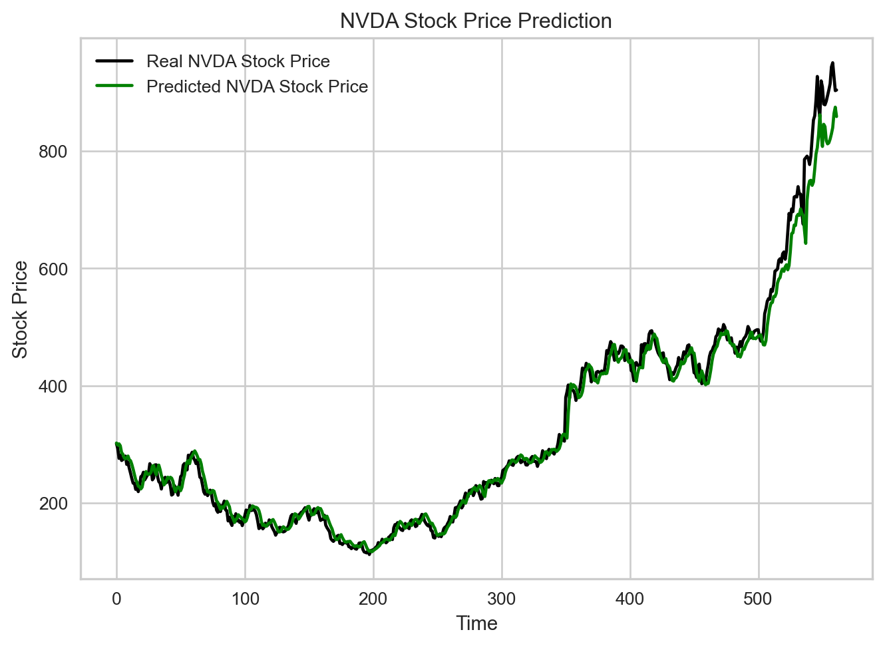
<Figure size 768x528 with 0 Axes>資料建模
- 機器學習簡介
- AutoML
- 深度學習簡介
- AutoKeras
- (補充資料)scikit-learn - ML with Python 常用套件
- (補充資料)keras - DL with Python 常用套件
AutoKeras
AutoKeras
載入MNIST資料
自動訓練模型
clf = ak.ImageClassifier()新增一個可以做影像分類的訓練器clf.fit(訓練資料, 訓練標籤, epochs = 做幾輪)開始訓練模型clf.evaluate(測試資料, 測試答案)驗證模型成效
資料建模
- 機器學習簡介
- AutoML
- 深度學習簡介
- AutoKeras
- (補充資料)scikit-learn - ML with Python 常用套件
- (補充資料)keras - DL with Python 常用套件